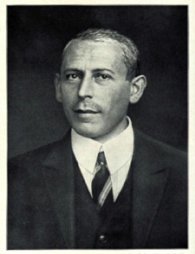
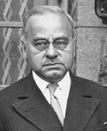
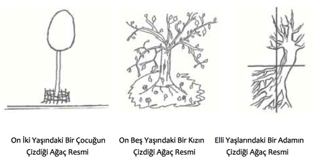
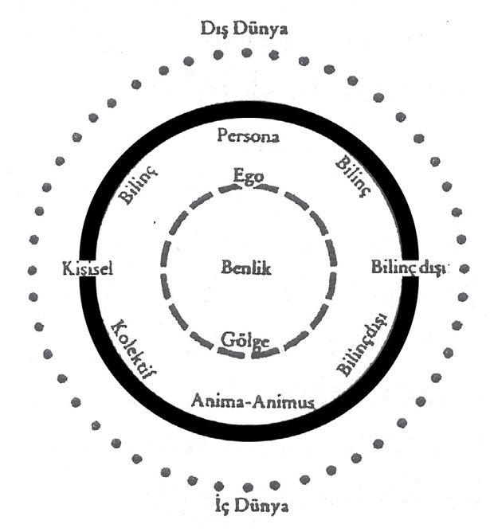

A
abartılmış üstünlük çabaları Bkz. bireysel psikoloji.
abartma (exaggerate) Bir olayı, olguyu, nesneyi olduğundan daha önemli, daha çok, daha büyük gösterme. Bkz. bilişsel şema.
ABRAHAM, Karl (1877-1925) Kişilik gelişimi ve ruh hastalıklarında, çocuk cinselliğinin etkisi üzerinde çalışmış olan Alman psikanalist. Abraham, Bremen’de doğdu. 1901’de psikiyatristliğe başladı. 1904-1907 arasında Eugen Bleuler’in asistanlığını yapması, C. G. Jung’la karşılaşmasını ve Freud’un düşünceleriyle yakından ilgilenmesini sağladı. 1907’de Freud’la tanıştı. 1910’da Alman Psikanaliz Derneği’ni kurdu. İlk psikanalitik çalışmasında çocukluktaki cinsel travmaların şizofreni belirtileriyle ilişkisini ortaya çıkardı. Simgelere ilişkin yorumları ve mitlerle rüyalar arasında kurduğu bağıntı, psikanalistlerce kabul gördü. Abraham, psikanaliz akımının Viyana dışında yayılmasına ve kabul görmesine en çok katkı sağlayanlar arasında yer aldı. Kuramını, klinik verilerden yola çıkarak biçimlendirdi. Psikozlar üzerindeki çalışmaları ve libidonun cinsellik öncesi dönemdeki önemine ilişkin incelemeleri ile psikanalizin gelişimine katkı sağladı. Psikozların, psikanalizle tedavisi konusundaki en önemli çalışması, libidoya ilişkin saplantılar sonucu beliren manik-depresif psikozlar üzerinde oldu. Libido gelişimi, kişilik oluşumu, şizofreni, manik-depresif psikoz gibi konularda psikanalitik tedavinin öncüleri arasında yer aldı. Çocuk gelişiminin ağızcıl, dışkıl ve üretken dönemlerden oluştuğunu öne sürdü; bunlardan birine saplanmanın belirli ruhsal bozukluklara neden olabileceğini ilk kez o ortaya koydu. Başlıca yapıtları: Seçme Yazılar (Selected Papers) (1927). Bkz. BLEULER, Eugen; FREUD, Sigmund; JUNG, Carl Gustav.

Karl ABRAHAM
abulya Bkz. istenç yitimi.
acı (pain) Organizmayı tedirgin eden duygulanım; elem, ıstırap. Acı, ruhsal olabildiği gibi bedensel de olabiliyor. Ruhsal acı, üzüntü terimiyle anlatılırken, bir deri algısı olan bedensel acı, daha çok ağrı terimiyle dile getiriliyor. Bedensel acı, basınç ve ısı (sıcak, soğuk) gibi dokunmayla birlikte algılanan üç deri duyumundan biridir. Bunu ağrıya duyarlı deri bölgelerinde çok sayıda özelleşmiş (basınç ve ısıya duyarlı olmayan) sinir uçları algılıyor. Ağrı veren uyarıcılar genellikle basınç ve ısı olduğu için ağrı, deri duyumlarından ısı ve basınçla birlikte algılanıyor. Bedensel acı, organizmanın dokusundaki bir yıkkınlığın habercisi de olabiliyor. Acı duyumları güçlü duyumlardandır. Bkz. duyu eşiği. Théodule Ribot (1839 –l916), Ruhsal acıyla bedensel acı arasında özce bir ayrım olmadığını şu kanıtlarla ortaya koydu: (1) Her iki acıda da kan dolaşımının, solunumun düzeni bozuluyor; hareket birdenbire duruyor. (2) İki acı da aynı ilaçlarla yatıştırılıyor. (3) Özellikle hastalık hastalığında iki acı özdeşleşiyor. Pavlov (1849 -1936) ise, ünlü deneyleriyle bu konuya bilimsel açıklamalar getirdi. Acı veren uyaranlardan acı duyumlarının; hoşlanım yaratan uyaranlardan da hoşlanım duyumlarının alındığını belirledi. Acı yitimi, ameliyat olan hastalarda çeşitli ilaçlarla sağlanıyor. Suçluluk ve günahkârlık düşüncelerinin oluşturduğu törel acı, kaygı (anksiyete), bunalım, kıskançlık, korku, köpürme, sinirlilik, heyecanlanma gibi hoş olmayan duygular, acının değişik biçimleridir. Bkz. acı çekmek; acıdan hoşlanmak; acı duyarlığı; acı duyumu; acımak; acı verme ilkesi; acı yitimi; acı yitimi sağlayan; haz.
acı çekmek (suffer) Üzüntü ya da büyük bunalım duygusu içinde olmak; ıstırap çekmek. Bkz. acı.
acıdan hoşlanmak (euphoria) Acı çekerken duyulan hoşlanma biçimindeki hastalıklı durum. Alkole, uyuştutucu ve uyarıcı maddeleri kullanmaya yeni başlayanların, özezerlerin acıdan hoşlanmaları; ölüme yaklaşan verem hastalarının kendilerini mutlu duyumsamaları bu duyguyu örneklendiriyor. Aşırı, ölçüsüz, gereksiz neşe ve sevinç, bu hastalıklı durumun belirleyici özellikleridir. Acıdan hoşlanan kişi, düşünce ve davranışlarıyla elverişsiz koşullarda bile çevresine çok güçlü, mutlu, rahat ve sevinçli olduğunu yansıtıyor.
acı duyarlığı (algesia) Acı veren duyumları algılama gücü. Bkz. acı.
acı duyumu (pain sense) Acıyı algılamakla oluşan duygu. Acı veren uyaranlar, deri yüzeyinin altında ve gövdenin içinde değişik yoğunlukta yayılmış olan duyarlı sinir uçları ile algılanıyor. Acı yitimi hastalığında acı duyumu algılanmıyor. Duyu yitiminden farklı olarak acı yitiminde dokunma duyarlığı var olduğu halde, acıya karşı duyarlık zayıflıyor ya da tümüyle yok oluyor.
acımak (pity) Başka bir kişi ya da canlının mutsuzluğu karşısında duyulan üzüntü; merhamet etmek. Bkz. acı.
acımasızlık Bkz. kıyıcılık.
acı verme ilkesi (pain principle) Birine acı yaşatma, onu öldürme, yıkıp yok etme biçimindeki bilinçsiz çaba.
acı yitimi (analgesia) 1. Normalde ağrı verici uyarımların bulunmasına karşın artık acı vermeyen sinirsel ya da farmakolojik bir durum; analjezi. Beyin, ağrı verici uyarıları engellemek için serotonin ve endorfin kullanıyor. Bkz. acı; acı duyumu. 2. Özellikle dönüşüm nevrozları ya da histeri nevrozlarında ve şizofrenide görülen ağrı duyumu yitimi.
acı yitimi sağlayan (analgesic) Analjezi sağlayan; ağrı verici uyarıların algısını anestezi uygulamadan ya da bilinç yitimi yaratmadan ortadan kaldıran.
açık bellek (explicit memory) Sözel bileşenleri bulunan ve bilinç düzeyinde anımsanan genel bilgileri ya da geçmiş olayları, kişisel yaşantıları içeren; bilinçli, amaçlı bir çabayla anımsanabilen şeylere ilişkin bellek; öyküsel bellek, bildirimsel bellek. Kişi, anımsanan şeyin olduğu kadar anımsama çabasının ve eyleminin de bilincindedir. Örneğin, bir insan gün içinde yaşadıklarını aktardığında kullandığı bellek, bu türdendir.
Açık Düşmanlık ve İlgisizlik Biçiminde Ortaya Çıkan Anne Tutumları Bkz. anne baba tutumları (Kusurlu Anne Baba Tutumları: İtici Anne Tutumları).
açık içerik (manifest content) Freud’a göre, rüyaların, düşlemlerin ve imgelerin belirgin; ancak yapay olan anlamı; rüyanın ya da düşlemin gördüğümüz ve anımsadığımız durumu. Bkz. gizli içerik; rüya yorumu.
açıklama (explanation) Bilindiği varsayılan öğeler kullanılarak bilinmeyenlerin, içdüzeni ve anlam bütünlüğü olan bir sistem içinde, söz konusu anlam bütünlüğündeki yerinin gösterilmesi ile bilinebilir duruma getirilmesi; izah etme. Bu bağlamda, bir işaretin, bir simge ya da sözcüğün dil içindeki anlamının belirtilmesine semantik açıklama; bir olay ya da olgunun gerçekleştiği ya da içinde yer aldığı sistemin öbür birimleriyle ilişkilerinin gösterilmesine yapısal açıklama; bir yapı ya da sistem içindeki öğelerin işlevlerinin belirtilmesine işlevsel açıklama; olay ya da olgular arasında belirli, somut neden-sonuç ilişkileri kurularak yapılan açıklamaya nedensel açıklama; bir olay ya da olgunun meydana gelişiyle ilişkisi olduğu sanılan; ancak bu ilişkinin niteliği ya da katkı düzeyi ölçülemeyen değişkenlerin, sözü edilen olay ya da olguyla anlamsal olarak ilişkilendirilmesine anlamsal açıklama; bir bilinmeyenin mantık kurallarına uyularak bilinir duruma getirilmesine de mantıksal açıklama deniyor.
açıklık ilkesi Bkz. hümanist öğretmenlik (Eşduyum).
açıklık, saydamlık ve dürüstlük ilkesi Bkz. hümanist öğretmenlik.
açıkoturum (panel) Toplumun büyük bir kesimini ilgilendiren ve üzerinde görüş birliğine varılmasında yarar umulan belirli bir konuyu birden fazla konuşmacının dinleyiciler önünde tartıştığı toplantı; panel. Açıkoturumda birçok konuşmacı bir konuyu tartışabileceği gibi birbiriyle ilişkili, bir bütünün parçaları niteliğindeki konuları da tartışılabiliyor.
açık uçlu soru Bkz. ucu açık soru.
açlık (hunger) Boş kalan sindirim organının düzenli biçimde sıkışıp açılmasından ileri geldiği sanılan; ama, öğrenme ve alışkanlıkla da güçlü bir ilgisi olan acıkma durumu ya da yemek yeme isteği. Organizmada besin stokunun azalmasını tanımlayan açlık, susuzlukla birlikte yaşam için gerekli olan birincil dürtülerdendir. Vücuttaki besin stokunun yeterli düzeyde tutulması gerekiyor. Bu stokun yeterli düzeyin altına düşmesi, önce öfkeye; sonra kudurganlığa; daha sonra da psikoza dönüşüyor. Üçüncü aşamada düşünce, her şeyden vazgeçerek besin içgüdüsünde yoğunlaşıyor. İnsanın ilk eylemi, kendini doyurma eylemidir. İnsanlık, bütün insani değerler, bu ilk eylemin üstünde yükseliyor. İnsanın üremesi, çalışması, düşünebilmesi, öncelikle doymasına bağlıdır. Beyinde hipotalamusun yan çekirdeklerinde, açlık ve susuzluğu uyaran odaklar (merkezler) vardır. Bu odakların uyarılması, açlık, susuzluk duygularını yaratıyor. Bu duygular da insanı yiyecek ve su aramaya yöneltiyor. Bu gereksinimlerin doyma odakları, hipotalamusun ventromedial çekirdeklerindedir. Bunlar uyarıldığı zaman açlık, doyma; susuzluk da kanma ile sonuçlanıyor. Açlık odağının zedelenmesi, iştahsızlık; doyma odağının zedelenmesi ise aşırı yemek yeme isteği yaratıyor. Kan dolaşımının koşullarından bu odaklar çok etkileniyor. Açlık ve susuzluk dürtüleri, birbiriyle yakından ilişkilidir. Organizmanın sindirim ve başka biyokimyasal işlemleri için su gerekiyor. Organizma, aldığı suyun yaklaşık yüzde doksanını, kendisinin daha iyi beslenebilmesini sağlamada kullanıyor. Hayvanlar, insanlar ve özellikle çocuklar üzerinde yapılan deneyler, bunların besinlerini vücut gereksinimlerine göre seçtiklerini göstermiştir. Örneğin, B vitamininden yoksun bırakılan farelerin hemen B vitamini çok olan besinlere yöneldikleri gözlemlenmiştir. On beş küçük çocuk üzerinde yapılan büfe deneyleri, bu çocukların, kendi seçtikleri yemeklerle gerektiğinden çok daha iyi büyüyüp geliştiklerini göstermiştir. Ayrıca, çocukların kendi istençleriyle seçtiği besinlerin yararının, uzmanların önerdiği besinlerin yararından fazla farklı olmadığı görülmüştür. Aşırı yemek yemenin açlıkla bir ilgisi bulunmuyor. Kimi insanlar, iyice doyduktan sonra da yemek yemeyi sürdürebiliyorlar. İnsanlar aç olmasalar da belli bir süre, yemek sofrasında oturuyorlar. Topluca yenen yemeklerin nitelik oranı, yalnızken yenen yemeklerden çok fazladır. Bu, hayvanlar için de geçerlidir. Kimileri de yemek isteğini tümüyle yitirebiliyorlar. Buna iştah yitimi deniyor. Bkz. dürtü; gereksinim; güdülenme; içgüdü.
adalet (justice) 1. Şeylerin yerli yerine konması; her şeyin olması gerektiği yerde bulunması. 2. Haklı ile haksızın ayırt edilmesi; haklı olana hakkının verilmesi; kişinin hak ettiği şeye sahip olabilmesi. 3. Kendine ait olan alanda, mülk üzerinde tasarrufta bulunmak; başkasının hakkına tecavüz etmemek. Bkz. adalet psikolojisi.
adalet psikolojisi (forensic psychology) Tanıklık, sorgulama yöntemleri, suçluluk yaşı ve cezalandırma, cezanın çektirilmesi, suç işlemede kalıtım ve çevrenin etkileri gibi konuları adalet ve psikoloji yönünden inceleyen ve bunlara ilişkin bilgilerden ıslah evlerinde nasıl yararlanılacağını belirleyen psikoloji dalı; adli ruhiyat, törel ruhbilim, türel ruhbilim. W. Stern ve K. Marbe’nin kurduğu; C. Lombroso ile F. Ferrie’nin, gelişimine katkıda bulunduğu adalet psikolojisi, psikolojinin hukuka uygulanan dalıdır. Bkz. adalet.
adanmışlık (commitment) Levinger’e göre, romantik ilişkilerin sürekliliğinde kalıtımla birlikte önemli olan bir etken. Kültürün biçimlendirdiği adanmışlık varsa, olumsuz koşullara karşın, düşük düzeyli bir ilişki bile sürdürülebiliyor. İlişki koparılmak istendiğinde, çevrenin tepkisi, ilişkinin süresine göre değişiyor. Adanmışlık, ikinci pekiştireç olarak bir başına da ödül işlevi görebiliyor. Örneğin, geçici aşk ilişkilerinde adanmışlık beklenmiyor. Arkadaşlık ilişkilerinde, gizlilik olsa da adanmışlık ve yakınlık duyma, tutku (yoğun duygusal yaşantı) yoktur; dolayısıyla arkadaşlık ilişkileri romantik ilişkiden farklıdır. Bkz. değiş tokuş kuramları.
adaptasyon Bkz. uyum.
ADASAL, Rasim (1902-1982) Türkiye’de psikiyatrinin kurulmasında önemli rol oynayan Türk hekim. Adasal, Girit’in Kandiya (İraklion) kentinde doğdu; İzmir’de öldü. Adasal, ilkokulu doğduğu yerde; ortaöğrenimi İstanbul Mercan İdadisi ve Vefa Lisesi’nde tamamladı. 1920’de girdiği Askeri Tıbbiye Okulu’nu 1925’te teğmen rütbesiyle bitirdi. Bir yıl süreyle o zaman İstanbul’da olan Gülhane Askeri Tıp Akadamisi’nde staj yaptıktan sonra iki yıl İzmir’de kıta tabipliği görevinde bulundu. 1928-1930 yılları arasında Gülhane Akliye Asabiye Kliniği’ndeki uzmanlık eğitiminden sonra 1932-1934 yılları arasında aynı yerde baş asistanlık yaptı. 1936-1938 yılları arasında Paris Tıp Fakültesi’nde psikiyatri ve nöroloji bölümlerinde çalıştı. Yurda dönüşünde Gümüşsuyu, Erzincan, Erzurum ve Balıkesir asker hastanelerinde uzman olarak görev aldı. 1943 yılında Gülhane Askeri Tıp Akademisi Sinir ve Ruh Hastalıkları Kliniği Profesör Yardımcılığı’na (doçentliğe) seçildi. 1945 yılında Gülhane Sinir ve Ruh Hastalıkları Kliniği Profesörü oldu. Bir yıl sonra Ankara Tıp Fakültesi Ruh Hastalıkları Kliniği Direktörlüğü’ne getirildi. 1952 yılına kadar bu iki görevi birlikte yürüttü. 1952 yılından sonra ordudan ayrılarak yaş sınırı nedeniyle emekli olduğu 1972 yılına dek fakültedeki görevini sürdürdü. Emekli olduktan sonra İzmir’e yerleşti. Dönemin halkla bütünleşen en popüler ruh hekimi olan Adasal, Türkiye’de çağcıl psikiyatrinin kurucularındandır. Pek çok öğrenci ve birçok bilim insanı yetiştirmiştir. Sinir ve Ruh Hekimleri Derneği’ni kurmuştur. Medikal Psikoloji adlı yapıtı, Avrupa’daki ilk gerçek medikal psikoloji kitabı olarak nitelendirilmiştir. Adasal, kendisinden önceki organistik ve deskriptiv psikiyatri yaklaşımları üzerine dinamik psikiyatriyi yapılandırarak yeni bir dönemi başlatmış, birçok makale ve kitap yazmıştır. Başlıca yapıtları: Sara Sendromu (1939), Çocuğun Ruh Sağlığı (1944), Ruh Hastalıkları (1954), Ruh Hastalıkları-Psikozlar (1955), Ruh Hastalıkları—Psikonevrozlar (1955), Medikal Psikoloj I-II (1964, 1973), Klinik Psikiyatri (1969), Normal ve Anormal yönleriyle Cinsiyet, Aşk ve Evlilik (1975), Normal ve Anormal Açıdan Karakter ve Kişilik Portreleri (1979), Yeryüzü Tanrıları, Liderler, Komutanlar, Kahramanlar Psikolojisi (1979).
Addison hastalığı (Addison’s disease) Böbreküstü bezinin yetersiz kortizon salgısı yüzünden aşırı güçsüzlük, düşük kan basıncı ve deride koyulaşma gibi belirtilerle ortaya çıkan bir bozukluk Bkz. adrenal bunalımı.
adenin (adenine) DNA ve RNA’daki nitrojen bazlarından biri.
adet (folkway) Belli bir toplum ya da kültürde var olup, uyulmaması önemli bir tehlike yaratmayan, töre kadar zorlayıcı olmayan günlük yaşam normları. Örneğin, konuşurken karşımızdakinin sözünü kesmemek, bir adettir.
âdet görme Bkz. aybaşı.
ADLER, Alfred (1870-1937) Avusturyalı psikiyatrist; insanda temel dürtünün, bilinçli bir kendini anlatma ve gerçekleştirme dürtüsü olduğu görüşüne dayanan bireysel psikolojinin kurucusu. Adler, bir Yahudi ailesinin çocuğu olarak Viyana’da dünyaya geldi; bir konferans gezisi sırasında İskoçya’nın Aberdeen kentinde öldü. Hastalıklı bir çocukluk geçirdi. Hastalığı ve erkek kardeşinin ölümü, onun tıp öğrenimi yapmasında etkili oldu. Göz hastalıkları uzmanı olduktan sonra bir süre pratisyen hekim olarak çalıştı. 1902’de çevresine girdiği Freud’un ünlü “Çarşamba Toplantıları”na katılmaya başladı. Daha sonra Viyana Psikanaliz Enstitüsü’nün başkanlığını yaptı. 1908’de özellikle bilinçdışı çatışmaların açıklanmasında Freud’la aralarında görüş ayrılıkları belirmeye başladı. Adler, kişiliğin gelişiminde cinsel içgüdüler kadar, saldırganlık dürtüsünün de önemli olduğunu ileri sürüyor; Freud’un Oedipus karmaşası kavramına verdiği önemi küçümsüyor ve insanın temelde toplumsal bir varlık olduğunu savunuyordu. Bunların sonucu olarak 1911’de Freud ve çevresinden tümüyle koptu; Viyana Psikanaliz Enstitüsü Başkanlığı’ndan da ayrıldı. Kısa sürede çevresinde bir grup oluştu ve bireysel psikoloji (individual psychology) adıyla kendi kişilik kuramını oluşturdu. Birinci Dünya Savaşı’nda Avusturya ordusunda doktor olarak görev yaptı. 1921’de Viyana Eğitim Müdürlüğü’ne bağlı ilk çocuk rehberlik kliniğini kurdu. Bireysel psikoloji yaklaşımının görüşlerini uygulayan deneysel bir okulun kurulmasını sağladı. Avusturya hükümetinin desteği ile yaygınlaşan ve sayıları otuza ulaşan çocuk rehberlik merkezlerinin yönetimini üstlendi. 1926’da ABD’ye giderek Colombia Üniversitesi’nde ve New York’ta dersler verdi. 1934’te Viyana’daki çocuk rehberlik kliniklerinin kapatılması üzerine, 1935’te ABD’ye yerleşti. Başlıca yapıtları: A Sudy of OrganInferiority (1905), The Nourotic Constitution (1912), Healing and Education (1914, ed.), The Practice and Theory of Individual Psychology (1922), The Case of Miss R: The Interpretation of a life Story (1928), Individual Psychology In The Schools (1929), What Life Shoult Mean to You (1931), Religion And Individual Psychology and Social Interest: A Challenge to Makind (1933). Adler’in kimi yapıtları, Organ Yetersizlikleri Üzerine Bir İnceleme; Nevrozlu Kişilik Üzerine; Bireysel Psikolojinin Kuramı ve Uygulaması, İnsanı Anlama; Yaşamın Anlamı, Psikolojik Aktivite, Kişilik Bozuklukları ve Toplumsal Bütünleşme adlarıyla dilimize çevrildi. Bkz. Adler kuramı; bireysel psikoloji.

Adler kuramı (Adler’s theory) Gerçek olan ya da düşlenen bedensel, ruhsal, toplumsal bir yetersizliğin kişide yarattığı eksiklik duygusunun sonucu olan çatışmaların, ödünleyici davranışlarla giderildiğini savunan kişilik kuramı. Adler’e göre insan, toplumsal bir varlıktır. Onun için kendinden çok, topluma yönelik bir yaşam biçimi geliştiriyor. Doğuştan gelen toplumsal yaşama eğilimi, toplumsal süreçlerin etkisiyle gelişim gösteriyor. Adler, psikolojiye en büyük katkısını toplumsal belirleyicilere önem vermesiyle yaptı. İkinci önemli katkısı, yaratıcı benlik kavramı; üçüncüsü de kişiliğin tekliğine verdiği önemdir. Bkz. ADLER,Alfred; bireysel psikoloji.
adli psikiyatri (forensic psychiatry) Psikiyatrinin akılsal yeterlilik, deliliğin hukuksal tanımı, cezai sorumluluk, velayet gibi konularda mahkemeye görüş bildiren ve gerek görüldüğünde sanığın ruhsal yapısını inceleyerek ilgililere bilgi veren dalı; türel ruh hekimliği. Bkz. adalet psikolojisi.
adli psikoloji Bkz. adalet psikolojisi.
adli ruh hekimliği Bkz. adli psikiyatri.
adli ruhiyat Bkz. adalet psikolojisi.
adli tıp (forensic medicine) Tıbbın özellikle suç kuşkusu bulunan durumlarda yaralanma ve ölüm nedenlerini bilimsel yöntemlerle inceleyen dalı.
adrenal bunalımı (adrenal crisis) Addison hastalığında tipik bir bulgu; böbreküstü bezlerinin yetersiz salgısının yol açtığı, birdenbire ortaya çıkan ve yaşamı tehdit eden bir durum; adrenal krizi. Haftalar ve aylar boyu kortikosteroid ilaç alan kişiler, ilacı birdenbire kesmeleri durumunda akut adrenal bunalımına giriyorlar. Onun için kortikosteroid ilaçların birdenbire değil, dozu yavaş yavaş azaltılarak kesilmesi gerekiyor. Bunalımın önde gelen belirtileri kan basıncının düşmesi (şok), baş ağrısı, kusma, ateşli titreme, taşikardi, terleme ve zayıflamadır.
adrenalin ve noradrenalin (epinefrin, norepinefrin) Böbreküstü bezlerinin iç bölgesinden salgılanan iki ayrı etkin madde; epinefrin ve norepinefrin. Bu iki madde ayrıca sempatik sinir uçlarında da açığa çıkarak sinir uyarılarını ilgili organa ileten kimyasal aracı görevini üstleniyor. Kimyasal açıdan bu iki bileşik arasında çok az fark vardır. İkisinin de farmakolojik etkisi, sempatik sinir sisteminin uyarılmasından doğan etkilere benziyor. Bu nedenle ilaç sınıflandırılmasında bu iki madde de “sempatomi metik” ya da “adrenerjik” ilaçlar grubundan sayılıyor. Böbreküstü bezlerinin salgısında yaklaşık yüzde 80 oranında adrenalin; yüzde 20 oranında da noradrenalin bulunmasına karşılık, sempatik sinirlerde bu oran, tersine dönüyor ve noradrenalin ağır basıyor. Bu bileşikler, evcil hayvanların böbreküstü bezlerinden elde ediliyor ya da sentez yoluyla hazırlanıyor. Bunların etkin ve arıtılmış biçimleri, klinik uygulamalarda kullanılıyor. Bu amaçla verilen adrenalin ve böbreküstü bezinin orta kesiminin kana karıştırdığı salgı olan adrenalin salgısı, kan şekerini daha çok üretmek için karaciğeri uyarıyor; kanın pıhtılaşma hızını artırıyor ve kasların sinirsel uyaranlara duyarlığını güçlendiriyor; kalp kasılmalarının hızını ve gücünü artırıp çevresel kan damarlarını daraltarak kan basıncının yükselmesini sağlıyor. Ayrıca ince bronşları genişleterek solunumu rahatlatıyor. Adrenalinin metabolizmadaki etkisi de kan şekerindeki artışla ortaya çıkıyor. Noradrenalinin de benzer etkileri olmakla birlikte, metabolizma ve kalp üzerindeki etkisi, adrenaline oranla çok daha hafif kalıyor. Noradrenalin verilen kişilerde kan basıncının yükselmesi, daha çok, bu maddenin güçlü daraltıcı etkisinden kaynaklanıyor. Adrenalinin damar daraltıcı özelliği, bölgesel (lokal) anesteziklerin emilmesini geciktirerek hem anestezik maddelerin etki süresini hem de zehirlenme olasılığını azaltıyor. Sınırlı anestezi amacıyla kullanılan maddelerle birlikte, genellikle adrenalin de veriliyor. Adrenalinin ayrıca ilaca tepki, kurdeşen (ürtiker) ve saman nezlesi gibi akut alerjik hastalıklarda da yararlı etkileri bulunuyor. Yüzeysel deri ve mukoza kanamalarını durdurmak için ya da bazı alerjilerde burun damarlarına fazla kan yüklenmesinden ileri gelen burun tıkanıklıklarını açmak için de adrenalinin damar daraltıcı etkisinden yararlanılıyor. Şoklarda görülen kan basıncının (tansiyonun) birdenbire düşmesine karşı, damar içine noradrenalin şırınga ediliyor. Ancak, yüksek dozda verildiğinde, her iki bileşik de beyin kanamalarına ve kalp hastalıklarına yol açabiliyor.
adrenal korteks (adrenal cortex) Böbreküstü bezinin dış katmanı. Bu katman, kortizon, estrojen, testosteron, kortizol, androjen, aldosteron ve progesteron gibi kortikosteroid hormonları salgılıyor. Bu hormonlar metabolizma oranını, elektrolitleri, yakıt yönetimini, zorlanmaya yönelik genel tepkiyi ve genel direncin sürmesini denetliyor. Bkz. adrenal soğancığı.
adrenal krizi Bkz. adrenal bunalımı.
adrenaller Bkz. böbreküstü bezleri.
adrenal medulla Bkz. adrenal soğancığı.
adrenal soğancığı (adrenal medulla) Böbreküstü bezinin orta bölümü. Bu bölüm, sempatik sinir sistemini hareket ettiren adrenalin ve noradrenalin salgılıyor.
adrenal yetmezliği Bkz. addison hastalığı; adrenal bunalımı.
adrenerjik (adrenergic) Özerk sinir sisteminde sinir iletici olarak epinefrin ve norepinefrin kullanan sinir hücreleri ya da lifleri.
adsal söz yitimi (aphasie nominal) Sözcükleri bozuk anlayıp bozuk kullanmak. Adsal söz yitiminde kişi okuyup yazamıyor; içinden bile konuşamıyor; hesap yapamıyor; paraları birbirinden ayıramıyor. Söz yitimi; Broca söz yitimi ve Wernicke söz yitimi olarak ikiye ayrılıyor. Broca söz yitimi, dilin bozukluğundan ileri gelen dinamik bir söz yitimidir. Hastanın belleğinin sağlam olmasına karşın ne içten ne dıştan konuşabiliyor ne de duyumsadıklarını yazabiliyor. Wernicke söz yitimi ise bir duyumsal söz yitimidir. Duyu imgeleri merkezlerinin (Wernicke merkezlerinin) bozukluğundan kaynaklanıyor. Hasta, söylenen sözü ve yazılan yazıyı anlayamıyor; hem okuma bozukluğuna yol açan sözel kör hem de yazma bozukluğuna yol açan sözel sağırdır. Sözel körlükte (okuma yitiminde), harfler görüldüğü halde harflerin tanınamaması nedeniyle okuyamamak söz konusudur. En saf biçimi, okuyamama hastalığıdır. Bu hastalığa yakalananlar, yazıyı gördükleri halde okuyamıyorlar. Sözel sağırlık ise yazma yeteneğini yitirmektir. Kişi, hiçbir organsal bozukluğu olmamasına karşın, söylenenleri yineleyemiyor ve yazdırılmak istenenleri yazamıyor. Kişi işitiyor, yazıları görüyor, yazılanları anlıyor; ama yazamıyor. O nedenle bu hastalık, “yazmayı unutmuş olmak” anlamına gelen, yazma devingenliği bellek yitimi adıyla da anılıyor. Beyindeki konuşma merkezinin bozukluğu nedeniyle sözcüklerin bozuk söylenmesi de söyleme yitimi olarak adlandırılmıştır.
afazi Bkz. söz yitimi.
aforizma (aphorism) Bir konu, tema ya da düşüncenin özünü çok kısa olarak belirten anlatım.
Afrodit (Aphrodite) Yunanlıların cinsel aşk ve güzellik tanrıçası (Bu tanrıça Romalılarda Venus’tur). Homeros, Afrodit’i Zeus ile Okeanos’un kızlarından Dione’nin kızı olarak gösteriyor. Adı, köpükten çıkmış (dyte) biçiminde açıklanıyor. Afrodit’in birçok sanatçıya esin kaynağı olan denizden doğduğu söylencesi, bu yorumlamadan dolayıdır. Bir başka söylenceye göre ise Afrodit, Uranos’un (Kronos’un) üreme organının kesilmesi sırasında denize damlayan kanlardan olmuştu. Urania ek adı buradan geliyor. Afrodit, is, duman içinde ve topal demirci Hephaistos ile evlenmişti. Demirci, karısını Ares ile sevişirken yakaladı. Afrodit’in ölümlülerle serüvenleri üzerine de Ankhises, Adonis gibi öyküler anlatılır. Afrodit, Yunanistan’a, Mykenai döneminde deniz yoluyla Doğu’dan gelmiştir (Asuri tanrıçası Astarte). Bu nedenle başlıca tapım yerleri Kypros (Kıbrıs) ve Kythera adalarıdır. Buna bağlı olarak Afrodit’e Kypris, Kythereia da deniyor. Korinthos’ta Doğu geleneklerine göre tapınak cariyeleri vardı. Bunların erkeklerle yatıp kalkmaları, tanrıçaya gelir sağlıyordu. Afrodit’in kemeri (Kestos) büyülüdür. Bu kemeri takınan kişi, yanar, tutuşur. Güvercin, Afrodit’in kutsal kuşudur. Serçe de öyledir. Eros, Afrodit’in oğludur. İnandırma, kandırma tanrıçası Peitho, Afrodit’n hep yanında bulunmuştur.
afrodizyak Bkz. istek artırıcı ilaçlar.
afyon (opium) Haşhaş bitkisinden elde edilen ve kısa sürede bağımlılık oluşturan ağrı kesici bir madde. Afyon; morfin, eroin, kodein ve öteki narkotiklerin hammaddesidir.
agnozi (agnosia) Genel duyu sisteminde bir bozukluk yokken duyu organları ile alınan duyusal uyarılardan birini ya da birkaçını tanıyamama ya da kavrayamama durumu. Dil ve alanındaki görme, işitme agnozileri temelde söz yitimi bozukluğu olarak kabul ediliyor. Yalnızca yüzeysel bir dokunma ile nesnelerin doğasını ve biçimini anlayamama (katı şeyleri dokunma ile tanıyamama, vücudun inmeli kısmının farkında olmama, en çok görülen agnozi biçimleridir.
agorafobi Bkz. alan korkusu.
agrafi Bkz. yazı yitimi.
agulama (babbling) Bebeğin çıkardığı anlamsız birtakım sesler.
agulama basamağı (babble stage) Bebeklerin tek heceli sesleri yinelediği gelişim dönemi.
ağaç testi (tree test) Yansıtma tekniğine dayanan bir test. Emile Junker’in ortaya koyduğu bu testi, İsviçre’de Luceme Deneysel Psikoloji Enstitüsü’nde K. Koch geliştirip standartlaştırmıştır. Testin uygulanışı sırasında deneğe normal büyüklükte bir kâğıt ve bir kurşun kalem veriliyor. Çocuğa, “Bir ağaç resmi çiz; ama bu bir çam ağacı olmasın.” deniyor. Çam ağacı, simetrik kenarlarla temsil edildiği için psikanalitik yoruma olanak tanımıyor. Çocuk, resmi bitirdikten sonra resim, belli kurallara uyularak değerlendiriliyor. Bu amaçla resimdeki ağacın gövdesine, dallarına, yapraklarına, meyvelerine, resmin sayfadaki yerine bakılarak deneğin yaptığı resim şöyle değerlendiriliyor: (1) Yukarıya doğru yükselen her şey düşünsel etkinliklere kanıt sayılıyor. Aşağıya doğru inen her şey de bilinçaltı eğilimlere yönelişe (içgüdülerin ve duyguların egemenliğine) işaret sayılıyor. (2) Kâğıdın ortasından geçen dikey çizginin solunda kalan her şey, geçmişle olan bağıntıyı; anılara, çocukluk yıllarına verilen önemi, içedönüklüğü, kişiliğin olumsuz yönlerini belirtiyor. (3) Dikey çizginin sağında kalan her şey, kişinin olumlu yönlerini, yeteneklerini, başarılarını, düşüncelerini, geleceğe yönelişini, umut ve isteklerini yansıtıyor. (4) Ağaç gövdesinin köklere yakın bölümünün ana gövdeye oranla geniş tutulmuş olması, kavrama ve öğrenme yavaşlığını gösteriyor. (5) Ağaç gövdesini belirleyen çizgilerin birbirine koşut olması, söz dinler ve uyumlu olma, eğitsel zorluk yaratmama olarak yorumlanıyor. (6) Ağaç gövdesinin kesik çizgilerle yapılmış olması, duygusal incelik, aşırı duyarlık, duygusal kırılganlık, bozuma uğratılmış olma diye anlamlandırılıyor. (7) Başlangıçtan uçlara doğru kalınlaşan dallar, duygusal kabalık, incelikten yoksun davranışların varlığı olarak değerlendiriliyor. (8) Ağaç testi, çocukların iç dünyalarını daha başarılı biçimde yansıtıyor. Yapılan resmin, kalıplaşmamış, düşünülmeden yapılmış bir ağaç olması, yansıtıcılık değerini artırıyor. Bir yere bakılarak, kopya edilerek yapılan ağaç resimleri, resmi yapanın kişiliğini yansıtmıyor. Bkz. bireyi tanıma teknik ve araçları.

ağır depresif olay Bkz. depresyon; duygusal psikoz.
ağır işiten (hard of hearing) İşitme gücünde en çok 60 desibel dolayında kaybı olan (kişi).
ağırkanlı Bkz. Gallen’ın huy sınıflaması.
ağır kas zayıflaması Bkz. akinezi.
ağır nevrotik belirtiler Bkz. nevrotik bozukluk
ağır nevrotik bozukluk Bkz. nevrotik bozukluk.
ağır öğrenen (slow-learner) 1. Arkadaşlarının çoğundan daha çok çaba ve zaman harcamasına karşın, daha az öğrenen (kişi). 2. Okul öğreniminden ancak özel eğitim yoluyla yararlanabilecek zekâ geriliği olan çocuk. Bkz. zekânın derecelendirilişi.
ağır panik nöbetleri Bkz. panik.
ağır zekâ geriliği (severe mental retardation) Zekâ bölümü 20-25 ile 35-40 aralığında kalan engellilerin zekâ durumu. Bunlar, zekâ geriliği olanların yaklaşık yüzde 7’sini oluşturuyorlar. Çoğu kez duyuşsal ve devimsel engelleri de bulunan ağır zekâ geriliği olanlar, akademik beceriler edinemiyorlar; yalnızca konuşabiliyor; giyinmeyi, beslenmeyi ve kendilerine bakmayı öğrenebiliyorlar. Bkz. zekânın derecelendirilişi.
ağızcıl bağımlılık (oral dependence) Freud’a göre, anne kucağında, onun memesinden sağlanan güçlü doyumun verdiği güvenliği yeniden elde etme özlemi; oral bağımlılık. Başkalarına bağımlı olma ve annenin çocuğunu sevdiği, koruduğu, beslediği ağzcıl dönemde yaşanan doyumları başkalarında arama eğilimi. Bkz. ruhsal-cinsel gelişim kuramı.
ağızcıl davranış (oral behavior) Yeme, öpme, konuşma, parmak emme, sigara içme, tırnak yeme, ağızcıl cinsellik gibi ağız etkinlikleri; oral davranış, ağızsal davranış.
ağızcıl dönem Bkz. ruhsal-cinsel gelişim kuramı.
ağızcıl erotizm dönemi (oral eroticism phase) Psikanalize göre, ruhsal-cinsel gelişim dönemlerinin ilki; oral erotizm safhası, ağızsal erotizm dönemi. Bu evrede temel erojen bölge ve en önemli doyum kaynağı, ağızdır. Bkz. ruhsal-cinsel gelişim kuramı ((1)Ağızcıl Dönem).
ağızcıl gelişim dönemi Bkz. ruhsal-cinsel gelişim kuramı ((1) Ağızcıl Dönem).
ağızcıl kaygı (oral anxiety) Freud’a göre libidonun ağızcıl gelişim döneminde yarattığı kaygı; ağızsal kaygı. Bkz. libido.
ağızcıl kişilik (oral character) Psikanalize göre, süt çocukluğu döneminde emzirilmeyle sağlanan haz ve doyuma tutkunluğun sonucu olarak geliştiği ileri sürülen bencil kişilik; oral kişilik, ağızsal kişilik. Bu evrede ağız erotizminin aşırı doyurulması ya da aşırı engellenmesi, farklı kişilik özelliklerinin oluşmasına yol açıyor. Aşırı doyurulma, iyimserlik, cömertlik, arkadaş canlılığı, bağımlılık; aşırı engellenme ise hata buluculuk, kıskançlık, düşmanlık, başkalarını kullanma, aşırı hırs gibi kişilik özelliklerinin ortaya çıkmasına yol açıyor. Bkz. ruhsal-cinsel gelişim kuramı ((1) Ağızcıl Dönem); ağız saldırganlığı.
ağızcıl öncelik (oral primacy) Psikanalize göre, yaşam enerjisinin, ağızcıl dönemde dünyayla ilişki kurmanın ve hazzın temel aracı olan ağızda yoğunlaşması; oral öncelik, ağızsal öncelik. Ağırlıklı olarak biyolojik bir olgu kabul edilen bu dönemdeki bebeğin yaşantıları, onun psikolojik yapısının önemli belirleyicileri oluyor.
ağızcıl saplantı (oral fixation) Psikanalize göre, ruhsal-cinsel gelişimin ağızcıl dönem ile ilişkili parmak emme, tırnak yeme, bebeksi konuşma, anneye ya da onun yerini alan kişiye aşırı bağımlılık gibi bebeksi doyumların, yetişkinlikte de sürmesi; oral fiksasyon, ağızsal saplantı.
ağız elezerliği (oral sadism) Freud’a göre, ısırmaya ya da ısırarak yok etmeye duyulan bilinçsiz istek; oral sadizm, ağızsal elezerlik. Bu istek, saldırgan cinsel doyumun dışavurumudur. Sonraki yaşlardaki eleştiri, alay etme, sözlü saldırı gibi davranışlar da bu yönde yorumlanıyor.
ağız erotizmi (oral eroticism) Psikanalize göre, konuşma, öpme, ısırma, sakız çiğneme, sigara içme, tırnak yeme, ağız cinselliği gibi ağız etkinliklerinden alınan haz; oral erotizm, ağızsal erotizm, ağız kösnüllüğü. Bu doyum, emme gibi ağız hareketlerinden; dudakların ve ağzın içzarının uyarılmasından elde ediliyor. Ağızcıl döneme özgü normal etkinliklere yetişkinlik döneminde aşırı eğilim, bu döneme takılıp kalma ya da gerileme olarak yorumlanıyor.
ağızsal davranış Bkz. ağızcıl davranış.
ağız saldırganlığı (oral-aggressivity) Freud’a göre, ağızcıl ısırma döneminin yüceltilmesi sonucu oluşan saldırganlık; imrenme, hırs, başkalarını sömürme ve benzeri kişilik özellikleri gösterme; oral agresiflik. Bkz. ruhsal-cinsel gelişim kuramı.
ağızsal erotizm dönemi Bkz. ağızcıl erotizm.
ağızsal kaygı Bkz. ağızcıl kaygı.
ağrı (pain) İç ya da dış uyaranların canlıda oluşturduğu acı veren bir duygu.
ağrı eşiği (pain threshold) Kişinin acı verici olarak duyumsadığı en düşük uyarıcı şiddeti. Bu eşik, hem kişiden kişiye hem de değişik psikolojik-fizyolojik etkenlerden kaynaklanarak aynı kişide farklılık gösteriyor.
ağrı rahatsızlıkları (pain disorders) Ruhsal, bedensel etkenlerden ya da ikisinin birleşiminden kaynaklanan; kişinin toplumsal ya da mesleksel yaşamında önemli aksaklıklara yol açan belirgin süreğen ağrı yakınmalarıyla tanımlanan bir somatoform bozukluk.
ağsı tabaka Bkz. ağtabaka.
ağtabaka (retina) Gözün ışığa ve renklere duyarlı olan hücrelerinin (çubuk ve çomakların) yer aldığı en içteki katı ya da katmanı. Ağtabakanın çok karmaşık olan yapısı sinirsel ağırlıklıdır. Nesnelerin görüntüsü, saydam katman ile merceklerden geçerek bu katman üzerine düşüyor ki burası, ağtabakanın on katından biridir.
ahlak (morality) İnsanların toplum içindeki davranışlarını ve birbirleriyle ilişkilerini düzenlemek amacıyla uydukları kurallar sistemi; başka insanların davranışlarını olumlu ya da olumsuz biçimde yargılamakta kullanılan ölçütler bütünü; moralite, etik, törebilim. Her insan topluluğunda belirli bir ahlak sisteminin bulunduğu ve bu sistemin toplumdan topluma, aynı toplum içinde de çağdan çağa değişiklik gösterdiği gözlemleniyor. Bkz. ahlakbilim; ahlakçılık; ahlak değerleri; ahlak duygusu; ahlak eğitimi; ahlak felsefesi; ahlak gelişimi; ahlak kuralları; ahlaklı olmanın önkoşulu; ahlak oluşumu; ahlak öncesi evre; ahlak psikolojisi; ahlaksal bağımsızlık; ahlaksal değerler; ahlaksal gerçekçilik; ahlaksal görecelilik; ahlaksal ikilem; ahlaksal kaygı; ahlaksal olgunluk; ahlaksal otorite; ahlaksal özezerlik; ahlaksal tutarlılık; ahlak standartları; ahlak yargısı; ahlak yasası; araştırma ahlakı; etik; inanç, kanı, değer; Kohlberg’e Göre Ahlak Gelişimi; Piaget’ye Göre Ahlak Gelişimi.
ahlakbilim (ethics) İnsanın bireysel ve toplumsal ilişkilerini nasıl gerçekleştirmesi gerektiğini; iyi ve kötü söz ya da davranışı belirleyecek ölçütlerin neler olabileceğini inceleyen bilim; etik, ahlak felsefesi.
ahlakçılık (moralism) Her söz, eylem ve uygulamayı ahlak ölçütleri çerçevesinde ele alan yaklaşım.
ahlak değerleri (moral values) İnsanların benimseyip davranışa dönüştürdüklerinde yaşamı yücelten ve kendilerini özlenen ahlaksal düzeye ulaştıran doğruluk, dürüstlük, cömertlik, yardımseverlik, hak, adalet gibi ilke ve ölçüler; ahlaksal değerler. Doğalcı görüşe göre bu değerler evrenseldir ve tüm insanlarca benimsenir. Doğaüstücüler ve ülkücülere göre ise bu tür değerler, insan yaşantılarından önceldir. Bkz. ahlak; ahlak gelişimi; ahlaksal bağımsızlık; inanç, kanı, değer.
ahlak duygusu (moral sense) Doğru ile yanlışı, iyi ile kötüyü ayırt etme; bunların her birini gerektiği gibi değerlendirebilme yeteneği; ahlak yetisi.
ahlak eğitimi (moral education) Ahlakın ya da davranış kurallarının örgün ya da yaygın eğitim yoluyla benimsetilmesi. Laik ülkelerde bu eğitim, kişilik ya da yurttaşlık eğitiminin bir parçası olarak algılanıyor.
ahlak felsefesi Bkz. ahlakbilim.
ahlak gelişimi (moral development) Bireye, doğru ve yanlışla ilgili ölçüler arasında ayırım yapma gücü kazandıran ve onu giderek toplumsal davranış bakımından etkili duruma getiren gelişim süreci; törel gelişim. Piaget’ye Göre Ahlak Gelişimi: Piaget ahlak gelişimini bilişsel gelişime dayandırıyor; ona göre bu iki gelişim, doğru orantılıdır. Çocukta ahlak gelişimi, başkalarına bağımlılıktan, kendini yönetme aşamasına yönelik olarak gerçekleşiyor. Başkalarına bağımlı çocuk, ahlak açısından daha az olgundur. Bu çocuğun haklılık anlayışı, ast olan kendisi ile üst olan anne babası arasındaki tek yönlü ilişkiye dayanıyor. Otoriteye olan saygı, tek yönlüdür; otoritenin söylediklerine uyan haklı görülüyor. Kurallar değiştirilemiyor. “Boyun eğmek iyidir.” yargısı geçerli oluyor. Bu aşamada, nesnelerin kendisinden doğan kendiliğinden cezaların varlığına inancı anlatan “ilahi adalet”e inanılıyor. Hatalı davranış, kendiliğinden cezalandırılıyor. Çocuk, 7-8 yaşına gelince, arkadaşlarıyla daha eşitlikçi ilişkiye girmeye başlıyor; çocukta otoriteye uyma, giderek azalıyor. 11-12 yaşlarında çocuk, ahlak açısından olgunlaşıyor ve onun haklılık yargılarında, bağımsız tutumu başatlık kazanıyor. Kurallar, artık, değiştirilebilen ilkeler olarak algılanıyor; hakça oluş, ağırlık kazanıyor. Eşitliğin daha ileri düzeyi olan hakçalık, Piaget kuramında kişinin, içinde bulunduğu duruma özgü koşulların göz önünde tutulması anlamını taşıyor. Bkz. ahlak; ahlak değerleri; ahlak öncesi evre; ahlaksal bağımsızlık; ahlaksal gerçeklik; ahlaksal görecelik; bilişsel alan kuramı; bilişsel gelişim kuramı; bilişsel yapılar; değer. Kohlberg’e Göre Ahlak Gelişimi: Kohlberg’e göre ahlak, çocukluk, ergenlik ve yetişkinlik dönemlerinde ve bilişsel yaklaşım çerçevesinde gerçekleşiyor. Kohlberg, deneklere, ahlaksal ikilemler içeren öyküler sunarak yaptığı araştırmalarda, ahlak gelişimi dönemlerinin sürekli ileriye giden bir süreç izlediğini saptamıştır. Kohlberg’in kuramının çekirdeğini otoriteye boyun eğmeyi içeren bir kavram olarak adalet oluşturuyor. Kohlberg’e göre ahlak gelişiminin üç evresi vardır. 1. Evre, gelenek öncesi evredir. Bu evrede birey, dışsal ölçütlere göre yargı yürütüyor. Yargılar, niyete göre değil, sonuçlara bağlı olarak gerçekleştiriliyor. Bu evre ikiye ayrılıyor. Bunların ilki, boyun eğme ve cazalandırmadır. Bu evrede otoritenin koyduğu kurallara sorgulamasız boyun eğiliyor. Onu, göreceli hedonizm izliyor. Bu evrede kuralların değişmez olduğu kabul edilmeye başlanıyor. Bu kurallara göreceli bakılıyor. Bunu ise kişinin gereksinimi ve bakışı belirliyor. 2. Evre, geleneksel evredir. Kişi bu evrede geleneksel toplumsal düzeni korumaya ve toplumun beklentilerine uygun davranmaya yöneliyor. Başkalarının yargılarını da saygıyla karşılamaya başlıyor. Bu evre de ikiye ayrılıyor. Bunların ilki, iyi çocuk olma eğilimidir. Bu alt evrede çocuk, yargılarında niyeti önemsemeye başlıyor. Davranış gösteren kişinin istek ve duygularının iyiliği ya da kötülüğü, onun yargılarını etkiliyor. İkinci alt evre, otorite ve toplumsal düzenin sürdürülmesidir. Bu evrede, toplumsal onay imgesi biçimleniyor. Her iyi kişinin onayladığı davranış, doğru davranıştır. Toplumsal düzeni sürdürmek ve koruyabilmek için kurallara uyulmalıdır. 3. Evre, gelenek ötesi evredir. Bu evre de ikiye ayrılıyor. İlk alt evre, demokratik olarak kuralları kabul etme evresidir. Bu alt evrede kurallar, esnek olarak algılanıyor; yaşama uymazsa demokratik olarak değiştirilebiliyor. Kişisel değerlerin yasalardan üstün olduğu da bu evrede sezilmeye başlanıyor. 3. Evrenin 2. Alt evresini evrensel ilkeler oluşturuyor. Kişiler, yasaların üzerine çıkan belli soyut evrensel ilkeleri açık seçik olarak bu evrede kavramlaştırıyorlar. Ahlak gelişimini bu denli ayrıntılı ve geniş olarak ele almasına karşın Kohlberg çok eleştirilmiştir. O, sonuçları, enlemesine kesitsel çalışmalarla elde etmiştir. Bu nedenle bulguların genellenmesi kuşku ile karşılanmıştır. Ayrıca başka birçok araştırma, Kohlberg’in gelişim aşamalarında kimi zaman gerilemeler olduğunu göstermiştir. Kohlberg’in kültürlerarası çalışmaları da yanlılık eleştirileri almıştır.
ahlaki bağımsızlık Bkz. ahlaksal bağımsızlık.
ahlaki değerler Bkz. ahlaksal değerler.
ahlaki gerçekçilik Bkz. ahlaksal gerçekçilik.
ahlaki görecelilik Bkz. ahlaksal görecelilik.
ahlaki ikilem Bkz. ahlaksal ikilem.
ahlaki kaygı Bkz. ahlaksal kaygı.
ahlaki mazohizm Bkz. ahlaksal özezerlik.
ahlaki olgunluk Bkz. ahlaksal olgunluk.
ahlaki tutarlılık Bkz. ahlaksal tutarlılık.
ahlaki yargı Bkz. ahlak yargısı.
ahlak kuralları (moral code) Belli bir toplumda ya da büyük bir grupta herkesin uymak zorunda olduğu ve belli bir ölçüde düzene konulmuş kurallar, ilkeler. Bu kural ya da ilkelere aykırı davranışlar, grupça iyi karşılanmıyor; bu davranışları gösterenler, kimi zaman yasalarca da izleniyor. Bkz. varoluşçu psikoloji.
ahlaklı olmanın önkoşulu Bkz. inanç, kanı, değer.
ahlak oluşumu Bkz. ahlak; inanç, kanı, değer.
ahlaköncesi evre (premoral stage) 1. Kohlberg’in ahlak gelişimi modelinde doğumdan 18. aya kadarki dönemi kapsayan evre. Bkz. geleneksellik öncesi düzey, geleneksel düzey, geleneksellik sonrası düzey. 2. Piaget’nin ahlak gelişimi modelinde, doğumdan 4 yaşına dek süren evre. Çocuk, bu evrede kuralları anlamıyor; beyninde kural kavramı daha gelişmemiştir. Bkz. ahlak gelişimi.
ahlak psikolojisi (moral psychology) Ahlaksal davranışın psikolojisi; ahlak ruhbilimi. Bu psikoloji dalı, bireylerin, grupların, sınıfların ve ulusların ahlaksal davranışlarının kökenini, biçimlerini, aksaklıklarını, gençte ahlak kavramının gelişimini inceliyor.
ahlak ruhbilimi Bkz. ahlak psikolojisi.
ahlaksal (moral) Ahlakla ilgili, ahlaka değgin. Bkz. ahlak.
ahlaksal bağımsızlık (moral independence) Piaget’ye göre, özerklik evresinin ilk ilkesi; ahlaki bağımsızlık. Ona göre ahlak gelişimi modelinin 11-12 yaşlarında girilen bu evresinde çocuk, bir davranışın ahlak boyutunun, onun altında yatan güdü ve diğer öznel varsayımlarla değerlendirilebileceğini kavrıyor. Bkz. ahlak gelişimi (Piaget’ye Göre Ahlak Gelişimi); inanç, kanı, değer; Piaget kuramı.
ahlaksal değerler Bkz. ahlak değerleri.
ahlaksal gerçekçilik (moral realism) Piaget’nin ahlak gelişimi modelinin ilk evresi; moral realizm, ahlaki gerçekçilik. Çocuk, 7-8 yaşlarına dek süren evrede iyi davranışı, büyüklerin koyduğu ve kendisinin değişmez, mutlak olarak gördüğü kurallara uyma ile; bir davranışın ahlaklılık ya da ahlaksızlığını da davranışın sonuçlarıyla bir tutuyor. Bkz. içkin adalet; ahlaksal bağımsızlık; ahlak gelişimi (Piaget’ye Göre Ahlak Gelişimi).
ahlaksal görecelilik (moral relativism) 1. Ahlaksal norm ya da değerlerin evrensel ölçütlerinin olmadığı; bu değer ve normların ancak grup içi standartlarla değerlendirilip anlaşılabileceği; bu nedenle ahlaksal değerlerin kişiden kişiye, gruptan gruba ya da toplumdan topluma değişebileceğini savunan yaklaşım; ahlaki görecelilik. 2. Piaget’nin ahlak gelişimi modelindeki ikinci evre. Çocuk, 7-8 yaşlarında girdiği bu evrede ahlak normlarını insanların belli gereksinimler karşısında, üzerinde anlaşarak belirledikleri değişebilir kurallar olarak değerlendiriyor ve bir davranışı doğru ya da yanlış olarak yargılarken, o davranışın nedenini, dış koşulları ve benzerlerini de göz önünde tutmaya başlıyor. Bkz. ahlak gelişimi (Piaget’ye Göre Ahlak Gelişimi).
ahlaksal ikilem (moral dilemma) Kişinin, belli bir ahlak normuna aykırı düşen iki ya da daha fazla seçenekten birini yeğlemek zorunda kalması; ahlaki ikilem. Gerçek yaşamda ahlaksal ikilem gibi görünen sorunların çoğu, gerçek bir ikilem değildir; çünkü bunlardan kaçınılabilir. Ahlaksal ikilem, yalnızca seçeneklerin kaçınılabilir olmadığı zaman söz konusudur. Bu, kişinin hem ahlak bütünlüğü hem de özgüveni üzerinde ağır yıkımlar yapıyor. Bunun en trajik örneği, belki de Sofi’nin seçimidir. Nazi subayının gaz odasına gönderilmek üzere, çocuklarından birini seçmesi gerektiği; yoksa ikisinin birden gönderileceği uyarısını alan anne Sofi, oğlunu kurtarmak için kızını feda etmişti.
ahlaksal kaygı (moral anxiety) Psikanalize göre, üstbenliğin yasaklarından kaynaklanan; genellikle uygun davranış standartlarına uyulmaması yüzünden üstbenlikçe cezalandırılma korkusunun benlikte dışavurumu olarak suçluluk duygusu ya da utanma biçiminde duyulan kaygı; ahlaki kaygı. Bkz. nevrotik kaygı; yapısal kuram (Üstbenlik).
ahlaksal olgunluk (moral maturity) Bir kişi ya da topluluğun ahlak ilkelerine göre doğru ve yanlış davranışlar konusunda akla uygun kararlar verebilmesi için erişmesi gereken gelişim düzeyi; ahlaki olgunluk.
ahlaksal otorite Bkz. yapısal kuram (Üstbenlik).
ahlaksal özezerlik (moral masochism) Psikanalize göre, babayı temsil eden otorite figürlerince cezalandırılmaya yönelik bilinçsiz bir istek; ahlaki mazohizm. Bkz. özezerlik.
ahlaksal tutarlılık (moral consistency) Kişinin yaşamında yıllarca süren kararlı, kestirilebilir bir ahlaksal davranış yapısı; ahlaki tutarlılık.
ahlaksal yargı Bkz. ahlak yargısı.
ahlak standartları Bkz. inanç, kanı, değer.
ahlak yargısı (moral judgement) İnsan davranışlarının ve insanlar arası ilişkilerin nasıl olması gerektiği konusunda ölçüler getiren, ahlak ilkelerine uymayan tutum, davranış ve eylemleri kötü; uyanları da iyi olarak niteleyen yargı; ahlaki yargı, ahlaksal yargı.
ahlak yasası (moral code) Bir toplumun ya da grubun doğru ve yanlış konusunda kabul ettiği ve bütün üyelerin davranışlarında bağlayıcı olan bir davranış kuralları silsilesi.
aidiyet kanunu Bkz. ilişkinlik yasası.
AIDS (acquired immune deficiency syndrome) HIV’in (human immunodeficiencey virus’un) yol açtığı hastalığın son evresi. Bu evrede vücudun bağışıklık sisteminde ağır bir yıkım oluyor ve vücut, savunma refleksini neredeyse tümüyle yitiriyor. Hastalık, en genel anlamıyla; cinsel ilişki, kan nakli ve benzeri bedensel sıvılar yoluyla bulaşıyor. Tedavi edilmemesi durumunda ağır yangı ya da kanser gibi nedenlerle ölümle sonuçlanıyor. Bkz. AIDS bunama karmaşası.
AIDS bunama karmaşası (AIDS dementia complex) AIDS’li hastalarda sıklıkla görülen ve bilişsel yetinin yitirilmesine yol açan bir beyin hastalığı. Hasta, toplumsal ya da mesleksel yaşamdaki normal işleyiş yetisini yitiriyor. Belirtileri arasında, yoğunlaşma zorluğu ve bellek yitimi gibi bilişsel zayıflama, duyumsamazlık, uyuşukluk, yönelim duygusu yitimi, ruh durumu ve kişilik değişimleri, konuşma ve görme zorlukları, eşgüdüm bozukluğu ve idrarını tutamama gibi ruhsal-devimsel işlev bozukluğu ve felç bulunuyor. AIDS bağlantılı bunama, genellikle HIV hastalığının sonraki evrelerinde ortaya çıkıyor. Belirtilerin ilk evrelerine HIV bağlantılı hafif bilişsel-devimsel bozukluk deniyor.
aile (family) Evlilik, kan ya da çocuk edinme bağlarıyla birbirine bağlı, tek bir ev halkını oluşturan; karı koca, kız ve oğul, anne, baba, nine, dede, kız ve erkek kardeş olarak her biri kendi toplumsal konumu içinde birbirlerini karşılıklı etkileyen; ortak bir kültür yaratan, bu kültürü paylaşan ve sürdüren bireyler grubu. Buna birleşik aile ya da geniş aile deniyor. Aile topluluğunun özünü anne-baba-çocuk ilişkisi oluşturuyor. Aile denildiğinde çoğu kez, farklı soylardan gelen ve birbiriyle kan bağı ilişkisi olmayan, genellikle henüz aile kurmamış çocuklarıyla özel ve ayrı bir konutta oturan bir erkekle bir kadının oluşturduğu birim anlaşılıyor. Bu tür bir yaşam düzeni, çekirdek aile olarak adlandırılıyor ve var olan farklı aile tiplerinin en eskisi olduğu sanılıyor. Etkisi en derin ve en kalıcı izlenimler, aile yaşamının ilk beş yılında ediniliyor. Kültürlenme süreci evde başlıyor ve daha geniş toplumsal grupların, aile içinde doğmuş olan eğilimlerin etkisi ile sınırlandırılıyor. Çocuğun dengeli gelişimi için zorunlu olan duygusal ortamı oluşturan normal aile, öteki çevrelerin amansız sertliğine karşı, çocuğun sığınacağı tek yer niteliğini kazanıyor. Çocuk, sevgiyi, sevecenliği, korunmayı, ahlaksal güvenliği, aile yuvasında hazır sunulmuş olarak buluyor ya da bulması gerekiyor. Aile içinde kendisinin gözden çıkarıldığını duyumsayan çocuk ise, sonraki yaşamında da bunun hep böyle olacağı inancına kapılıyor. Böyle bir ailede yetişen çocuk, çoğu kez eksiklik duygusu taşıyan, özgüvensiz bir kişi oluyor ya da ailesi içinde duyup yaşadığı acı olayları, doludizgin bir tutku, çılgınca bir serüven yaşamı gibi düşsel ve sapkın çarelerle ödünlemeye çalışıyor. Aile yuvasında eğitim sürecinin temelini, çocukların bakımı ve yetiştirilmesi konusunda görüş birliği içinde olan anne babanın varlığı oluşturuyor. Adler’e göre, aynı aile çocuklarının, aynı ortam içinde yetiştiklerini sanmak, bir yanılgıdır. Aynı yuva içinde yaşayan çocuklarda elbette kimi ortak noktalar bulunacaktır; ancak, her çocuğun ruhsal durumu bireyseldir ve öbür çocuklardan farklıdır. Çocuğun, kardeşine karşı duyduğu kıskançlık, çoğu kez, kendisini annesinin yerine koyup kardeşinin bakımını üstlendiğinde ve kendisini onun velisi gibi görmeye başladığında, ortadan kalkıyor. Çünkü bu görev ve sorumluluk derecesi, onu kendi gözünde değerlendiriyor ve yoksun bırakılma duygusuna dayanabilmesini sağlıyor. Tek çocuk, erkek ve kız kardeşlerin ona sağlayabilecekleri özyapısal törpülenme, duygusal eğitim ve ilk toplumsallaşma olanaklarından yoksun kalıyor. Buna karşılık, bütün anketler, tek çocuğun ya da iki çocuklu bir aile üyesinin, çok çocuklu aile üyesi olanlardan üstün olduğunu ortaya koymuştur. Tek çocuk, büyüme döneminde daha özenli bakım görüyor. Ailenin ikiden fazla sayıdaki çocuklarından her biri, kendine düşen rolü yerine getirdiğinde, çoğu kez bir denge etkeni olabiliyorlar. Ancak, kardeşler arasındaki ilişkiler, anne babanın müdahaleleriyle bozuluyor. Örneğin, en büyük çocuktan çok şey beklenirken, en küçük çocuğa aşırı hoşgörülü davranılıyor. Bu çocuk, çoğu kez hem anne baba hem de büyük kardeşlerce şımartılıyor. Bunun sonucu olarak da başka yerlerde olduğu gibi, okulda da dilediğince davranmaya kalkıyor. Mutlu aileler, bütün üyelerinin saygınlığını koruyan ailelerdir. Becerikli ve nitelikli anne, ailedeki her çocuğun kişiliği ile ayrı ayrı ilgileniyor. Ailenin yerini alamamakla birlikte, ilk çocukluktan sonra, çocuğun özellikle eğitilmesi ve toplumla bütünleşmesi için okul, ailenin en önemli yardımcısı oluyor. Beklenen, çocuğun, aile ve okulun ortak anlayış temeline dayalı yönetimi altında olmasıdır. Ancak, ailenin kapasitesi düşük ise okulun elinden fazla bir şey gelmiyor. Aile, çocuğunun ergenlik çağında sıklıkla rastlanan çatışmalarına göğüs gerebilecek güç ve kararlılıkta olmalıdır. Ailede ruh sağlığı, çocuğun bedensel, zihinsel, toplumsal, duygusal ve cinsel gelişimini olabildiğince gerçekleştirmek için temel etkendir. İnsan yavrusunun sağlıklı büyümek ve gelişmek için uzunca bir süre ailesinin sevgi, ilgi, bakım, koruma, destekleme ve yönlendirmesine gereksinimi vardır. Çocuk, yeni durumlara etkin bir uyum sağlama gücünü, büyüme ve gelişiminin her evresinde karşısına çıkan engelleri aştığı; bedensel, ruhsal ve toplumsal gelişimini gerçekleştirdiği oranda kazanabiliyor. Çevre koşullarının olumlu; anne baba tutumunun sağlıklı olması, çocuğun karşılaştığı sorunları çözmesini kolaylaştırıyor. Çocuk, sevmeyi, paylaşmayı, bu biçimde büyüyüp geliştiğinde öğrenebiliyor; toplumsal yaşam kurallarını, toplumsal ve evrensel değerleri ancak o zaman benimsemiş bir kişi durumuna gelebiliyor. Ruh sağlığını ancak o zaman güvence altına almış oluyor. Sağlıklı doğmuş bir bebeğin beklenen ruhsal gelişimi için ruh sağlıklı, sıcak bir aile ortamı, temel güvencedir. Sık sık tartışan, kavga eden, çatışan, birbirini suçlayan, aşırı içki içen, kumar oynayan; eşini aldatan, döven, aşağılayan anne ya da babanın oluşturduğu aile ortamında büyüyen çocuk, büyük olasılıkla özgüvensiz, ezik, korkak, ürkek, çekingen ya da kızgın ve saldırgan bir kişi durumuna gelecektir. Böyle çocuklar, okulda da başarılı olamıyor; arkadaşlarıyla geçinemiyor; ikide bir anlaşmazlık çıkarıyorlar. Gereksinim duydukları ilgiyi, olumlu davranışlarıyla toplama başarısını gösteremeyen bu çocuklar, çevreleriyle sürekli didişerek varlıklarını kanıtlamaya uğraşıyorlar. Sert, baskıcı, korkutucu anne babalar gibi, çocuğa nerede “Dur!” diyeceğini, nerede sınır koyacağını bilemeyen gevşek, kararsız, tutarsız, bilinçsiz anne babalar da çocuklarına büyük zararlar veriyorlar. Bu ailelerin çocuklarından birçoğu, anne babasının bu zayıf noktalarını kolaylıkla yakalıyor ve onları istedikleri yönde kullanıyor. Çocuk için sevgi, güven ve destek, her şeyden önce geliyor. Yoksul ve bunalımlı ailelerde bile anne baba sevgi ve desteğini alabilen çocukların, ruhsal yönden sağlıklı büyümeyi başardıkları görülüyor. Anne babadan ayrı düşmek, çocuğa küçük yaşta ölümden bile korkutucu bir etki yapıyor. Uygun ortamlarda yaşayan çocuk, her gelişim evresinde kişiliğine olumlu nitelikler katıyor. Çocuk, temel gereksinimlerini; güvenlik, sevgi, saygınlık ve öğrenme gereksinimlerini büyük ölçüde dengeli bir biçimde gidererek yetişkinliğe ulaştığında tam verimliliğe aday oluyor. Bu kişi, özgüveni ve özsaygısı tam; üretken ve yaratıcı; sahip olduğu özgürlüğün kendisine yüklediği sorumluluklarının gereğini yerine getirebilen bilinçli bir yetişkin olarak yaşamını sürdürüyor. Ne ki anne babanın, ruh sağlığını geliştirici ve koruyucu her önlemi almaya çalışması gerekli; ama yeterli değildir. Çocuğun ruh sağlığını geliştirmesini, korumasını, mutlu ve başarılı olmasını okul eğitiminde görülen aksaklıklar, gelir dağılımındaki dengesizlikler, işsizlik, can güvensizliği, hastalıklar, sakatlıklar, kazalar, zorunlu göçler gibi toplumsal etkenler de etkiliyor. Bunlardan başka çocuğun gelişimi üzerinde su baskını, yangın, yer sarsıntısı, yanardağ patlaması gibi doğal yıkım ve olaylar da olumsuz etkide bulunuyor. Ancak bütün bu etkenlerin büyük ölçüde olumluya dönüştürülmesi durumunda ailenin de olumlu etkisi ile çocuk, sağlıklı bir gelişim gösterebiliyor. Bkz. ailede çocuğun kişilik gelişimi; aile eğitimi; aile planlaması; aile salkımı; aile romanı; aile tedavileri; aile toplumbilimi; aitlik ilişkisi; ait olma duygusu: ait olma gereksinimi; ait olma güdüsü; anaerkil aile; anne baba tutumları; ataerkil aile; büyük, ortanca, küçük ve tek çocukta kişilik gelişimi; çocuk ve ergenin gelişim dönemleri; çocuk ve ergenin ruhsal-cinsel gelişimi; ruh sağlığı.
ailede çocuğun kişilik gelişimi Bkz. çocuk ve ergenin gelişim dönemleri; kişilik kuramları
ailede sağlıklı bir iletişimin cinsel gelişim ve eğitim açısından önemi. Bkz. çocuk ve ergenin ruhsal-cinsel gelişimi.
ailede ruh sağlığı Bkz. aile.
aile eğitimi (family education) Evlenmiş olan kadın ve erkeklere, bilinçli, mutlu bir aile olarak yaşamak için gerekli bilgi, beceri, alışkanlık ve değer duygularını kazandırmak için verilen eğitim. Bu eğitim, bir; okul öncesi ya da ilk çocukluk dönemi eğitimi; ara sıra da engelli öğrencilerin evde yetiştirilmeleri anlamını; bir de aile ocağında kazandırılan bilgi, beceri ve alışkanlıkların tümünü ve bu eğitimin niteliği anlamını içeriyor. Her tür eğitimin temeli aile yuvasında atılıyor. Aile yuvasının bir sevgi ve güven ortamı olması; bu çağda çocuğun her etkiye açık ve duyarlı olması gibi nedenlerle ailede gerçekleştirilen eğitim, öbür çevrelerin verdiği eğitimin ağırlık merkezini ve iskeletini oluşturuyor. Daha sonra verilecek olan eğitimi, burada verilen eğitim koşullandırıyor. Çocuk, ana dilini, grubun alışkanlık ve geleneklerini burada benimsiyor, kişiliğinin temellerini burada atıyor. Çocuğun dengeli bir gelişim göstermesini, ailedeki sevgi ortamı sağlıyor. Aile ocağının doğal, kurumsal ve kültürel bir çevre olduğu düşünüldüğünde burada verilecek eğitimin çok karmaşık etkiler altında gerçekleştiği daha kolay anlaşılabilir. Sevgi ortamının niteliği, anne babanın buna katkısı, sevgide ortaya çıkan sapmalar, otoriter ya da demokratik tutum, ailenin başka ailelerle ilişkileri, ailenin büyüklüğü ve yapısı, toplumsal-ekonomik ve kültürel düzeyi; anne ile babanın uyumu gibi birçok etken, aile eğitimini olumlu ya da olumsuz etkiliyor. Bkz. evlilik (Evliliği Sürekli Kılmanın Koşulları).
aile planlaması (family planning) Normal cinsel yaşam engellenmeden kadının gebe kalmaması için tarafların gerekli çare ve yöntemlerden yararlanması. Gerçekte aile planlaması, yalın bir teknik değildir; eşlerin çocuk yetiştirme konusunda cinsel, ruhsal ve bireysel yönlerden eğitilmesini gerektiriyor. Bkz. doğum kontrolü.
aile salkımı (family constellation) Aile üyelerinin sayı, yaş, cinsellik, kişilik özellikleri ile bireyler arasındaki bağların durumunu gösteren salkım biçiminde yapılmış çizem.
aile romanı (family romance) Çocuğun anne babasıyla ilişkilerini gerçeğe aykırı biçimde yorumlayıp düşlemler oluşturması. Örneğin, kendisinin bulunmuş bir çocuk olduğunu ya da ailesince terk edileceğini öne sürüyor. Böyle bir roman oluşturan çocuğun bu durumu, Oedipus döneminde bu karmaşanın yarattığı baskıya bağlanıyor.
aile tedavileri Bkz. psikoterapi yöntem ve teknikleri.
aile terapileri Bkz. psikoterapi yöntem ve teknikleri.
aile sosyolojisi Bkz. aile toplumbilimi.
aile toplumbilimi (sociology of family) Bir toplumsal kurum olarak ailenin yapısını, işlevini ve tarihsel süreç içinde değişik toplumsal yapılardaki gelişim seyrini incelemeyi konu edinen disiplin.
aitlik ilişkileri Bkz. bilişsel denge kuramları
ait olma duygusu Bkz. ait olma gereksinimi; özgürlükten kaçış yaklaşımı.
ait olma gereksinimi Bkz. gereksinimler aşama sırası.
ait olma güdüsü Bkz. ait olma gereksinimi; dürtü; güdü.
ajitasyon Bkz. çalkalanma.
ajitofazi (agitophasia) Harflerin, sözcüklerin ya da sözcük bölümlerinin bilinçsizce atlandığı ya da çarpıtıldığı çok hızlı, düzensiz konuşma.
ajitografi (agitographia) Harfleri, sözcükleri ya da sözcüklerin bir bölümünü bilinçsiz olarak atlayıp çok hızlı yazı yazma.
akademi (academy) 1. Az çok özerk olan ve üniversiteden bağımsız bir yüksek öğrenim kurumu. Güzel Sanatlar Akademisi, Harp Akademisi gibi. 2. Bilim ya da bilimler akademisi gibi bilginler, sanatçılar, yazarlar kurulu; bilimtay.
akademik (academic) 1. Okulla, öğrenimle, okulun özellikle kitaplara bağlı öğrenimi ile ilgili. 2. Eleştirel anlamda uygulama ile ilgisi olmayan kuramsal, geleneksel kurallara çok bağlı. 3. Düşünce ve soyutlamalarla ilgili. 4. Orta öğretimde; ana dili, yabancı diller, tarih, ekonomi, matematik ve fen dersleri ile ilgili; genel kültüre ağırlık veren. 5. Yüksek öğretimde; serbest sanat alanları ya da üniversite ile ilgili. Bkz. akademik başarı; akademik benlik tasarımı; akademik çalışma; akademik eğitim; akademik özerklik; akademik özgürlük; akademik rahatsızlıklar; akademik sorun; akademik tartışma; akademik yetenek; akademik zekâ.
akademik başarı (academic achievement) Okumada, aritmetik, tarih gibi okulun akademik türden derslerinde sağlanan başarı. Bu terim, resim-iş, beden eğitimi gibi derslerde edinilen becerilerin karşıtı olarak kullanılıyor.
akademik benlik tasarımı Bkz. tam öğrenme.
akademik çalışma Bkz. bilimsel çalışma.
akademik eğitim (academic education) 1. Orta öğretimde, anadili, yabancı diller, tarih gibi genel, soyut ve kuramsal derslerle edinilen eğitim. 2. Yüksek öğretimde, belli bir bilim ya da meslek dalında çalışmak için alınan eğitim; yüksek öğrenim eğitimi.
akademik özerklik (academical autonomy) Eğitim yönetiminde, özellikle yüksek öğretim kurumlarının ve üniversitenin, siyasal, dinsel ve benzeri eğitim dışı güçlerin baskılarından uzak bulunması, eğitim ve öğretim konusunda kendilerine bağımsızlık tanınması.
akademik özgürlük (academic freedom) Yüksek öğretimle ve akademik özerklikle ilişkili bir ilke. Akademik özgürlük ilkesi, sonucu neye, nereye varırsa varsın, gerçekleri araştırıp ortaya koymayı ve izlemeyi savunuyor. Eğitimin her zaman, korkmadan ve sürekli deneme ve incelemeyi özendirmesi gerekiyor. Bu da öğretim üyelerine ve öğrencilere, hiçbir zora ve kısıtlamaya ya da başka türlü sınırlamalara başvurmadan öğretme ve öğrenme olanağı tanıma anlamına geliyor. Bkz. öğretim özgürlüğü.
akademik problem Bkz. akademik sorun.
akademik rahatsızlıklar (academic disorders) DSM-IV’te başlıca bebeklik, çocukluk ve ergenlik rahatsızlık gruplarından biri. Bu rahatsızlıklar okuma, matematik ve yazılı anlatım bozukluklarını içeriyor.
akademik sorun (academic problem) Ders konularının ve temel okul becerilerinin öğrenilmesi, korunması ve genelleştirilmesinde yaşanan zorluklar; akademik problem. Bu zorluklar, duygusal ya da zihinsel bir bozukluk değildir. Bunlar, örneğin, kapasitesi yeterli bir öğrencinin notlarının düşmesi ya da kapasitesinin altında başarı göstermesi gibi sorunlardır.
akademik tartışma Bkz. bilimsel tartışma.
akademik yetenek (academic aptitude) Okul başarısı için gereksinim duyulan doğal ve kazanılmış becerilerin tümü; akademik yetenek testleriyle ölçülüp belirlenen okul başarısı için gerekli beceriler.
akademik zekâ (academic intelligence) Soyut kavramları kolaylıkla kavramaya yatkın zekâ.
akıl I (reason) us.
akıl II (intellect) müdrike, zihin (anlık).
akıl III (intelligence) zekâ (anlak), zeyreklik.
akıl IV (mind) ruh, zihin (anlık), tin.
akıl V (memory) bellek (hafıza).
akıl VI (advice) öğüt (nasihat).
akılcılık (rationalism) İnsan zihninin işleyişinin bağlı olduğu kurallarla nesnel dünyaya egemen olan kuralların aynı olduğunu; bu nedenle ancak aklın ilkelerine uygun düşünce ile gerçek, sağlam ve güvenilir bilgilere ulaşılabileceğini ileri süren; bütün açıklamaların odağına aklı ya da akılsal ilkeleri yerleştiren yaklaşım; rasyonalizm, usçuluk. Buna göre, akla uygun olan gerçek; gerçek olan da akla uygundur.
akıl çağı Bkz. aydınlanma dönemi.
akıl hastalığı Bkz. anormallik; ruh hastalıkları.
akıl sağlığı Bkz. ruh sağlığı.
akılsal denge (mental balance) İnsan zihninin varlıkları kavrama, algılama, anlamlandırma, muhakeme etme, düşünme, ilişki kurma, yargıda bulunma gibi akılsal işlevlerinin normal işlemesi durumu; akli denge. Bkz. ruh sağlığı.
akılsal-duygusal tedavi Bkz. psikoterapi yöntem ve teknikleri.
akıl yürütme (reasoning) Mantık ilkelerine uygun biçimde düşünme ya da bu ilkelerden yararlanarak sorun çözme; muhakeme etme; usa vurma. Bkz. uslamlama.
akışkan söz yitimi Bkz. söz yitimi.
akışkan zekâ (fluid intelligence) Horn-Cattell’ın tanımladığı bir zekâ türü; kristalleşmiş zekâ, billurlaşmış zekâ. Akışkan zekâ; öğrenme, akıl yürütme, yeni stratejiler belirleme, yeni sorunları ele alabilme yetisi, bilgi işleme hızı ve bellek kapasitesi gibi özellikleriyle tanınıyor. Akışkan zekânın temelde kültürel ve eğitsel etkiler gibi deneyimlerden bir ölçüde bağımsız olduğu düşünülüyor. Yaşlanmanın bellek ve işlem hızı üzerindeki etkilerinin incelenmesinde psikologlar, bu zekâyı önemsiyorlar. Zekânın yaşla birlikte azalıp azalmadığı konusundaki belirsizlik sürmekle birlikte genel kanı, söz konusu zekânın orta yaşlarda doruğuna ulaştıktan sonra düzenli olarak azaldığı; buna karşılık deneyimle ve öğrenmeyle kazanılan akışkan zekânın ise arttığı yönündedir. Bkz. zekâ.
akinetik dilsizlik Bkz. dilsizlik.
akinetik psikoz (akinetic psychosis) Hastanın sersemlik, katalepsi ve yok denecek düzeyde az algılanabilen bir hareket gösterdiği aşırı donukluk durumu.
akinezi (akinesia) İstemli kasları denetleme yetisini tümüyle ya da bir ölçüde yitirme. Bu terim, birçok istemli kas denetim kusurlarını anlatmak için kullanılıyor. Bunlardan biri, şizofren donukluk durumudur. Bir diğeri kas hareketinin yoğun acı vermesinden kaynaklanan felçle tanımlanan algeradır. Kurşun benzeri ağır metal zehirlenmesinin yol açtığı ağır kas zayıflaması; paretik belirtiler görülen nevrozlar; Parkinson benzeri hastalıklarda görülen titremeler ve katılık da bu gruptandır. Ayrıca kasların kullanılmaması yüzünden ortaya çıkan kas gücü yitimi ile tanımlanan bellek yitimine dayalı işlev bozukluğu; hastanın ansızın çökmesiyle kendini belli eden işlev bozukluğuna ilişkin sara; sinir sistemini etkileyen fenotiyazin gibi ilaçların yol açtığı olaylar, bu denetim kusurlarında yer alıyor.
akkan Bkz. lenf.
akla koyma Bkz. niyet etme.
akl-ı selim Bkz. sağduyu.
akli denge Bkz. alıksal denge.
akli hissi terapi Bkz. ussal duygusal tedavi.
ak madde (white matter) Merkez sinir sisteminin, daha çok akson bakımından zengin olan miyelin kaplı sinir hücresi lifleri. Beyin ile omurilikteki sinir hücreleri arasında bilgi iletimini bu lifler gerçekleştiriyor. Bkz. gri madde.
akraba evliliği katsayısı (coefficient of inbreeding) (F) İki kişinin kalıtsal olarak birbirine yakınlık derecesini gösteren katsayı. F, iki özdeş gene sahip bir kişinin, bu iki geni de atalarının birisinden almış olma olasılığını simgeliyor. Örneğin, büyük babaları ve büyük anneleri aynı olan bir bayla bir bayanın çiftleşmesi durumunda erkekteki herhangi bir genin, bayanda da bulunma olasılığı 8’de 1’dir. Ayrıca erkeğin, çocuğuna geçirdiği geni kadının da taşıma olasılığı 8’de 1; aynı geni çocuğuna da geçirme olasılığı ise 2’de 1’dir. Buna bağlı olarak 8’de 1’le 2’de 1’i çarptığımızda, 16’da 1 çıkacaktır. Bu sonuca göre bu evliliğin akraba evliliği katsayısı, 16’da 1 olacaktır. Başka deyişle bu evlilerin kalıtsal bir hastalığı çocuklarına geçirme olasılıkları, 16’da 1’dir. Oysa rastgele bir evlilikte bu olasılık, 256’da 1 olarak kestiriliyor. Bu sonuçlar, yakın akraba evliliklerinde ek bir riskin bulunduğunu açıkça gösteriyor. Bkz. evlilik.
akrabalık (kinship) Aynı soydan gelen ya da evlilik ilişkisi ile birbirine bağlanan kişiler arasında oluşan toplumsal yakınlık ilişkisi.
akran (equal) Yaş ve iş yönüyle eş ve benzer olanlar; taydaş, yaşıt. Bkz. akran baskısı, akran grubu,
akran baskısı (peer pressure) Çocuk akran gruplarının, üyeleri üzerindeki etkisi; özellikle uydumculuk sağlama gücü. Araştırmalar, akran baskısına boyun eğme eğiliminin, ilköğretimin birinci kademesinde düzenli biçimde başladığını; ergenlik döneminde ise belirgin bir biçimde arttığını gösteriyor.
akran grubu (peer group) Aynı toplumsal-ekonomik statüye, ortak uğraşlara ve normlara sahip olan; yaşça birbirine yakın kişilerin oluşturduğu grup; akran kümesi. Bu terim genellikle ortak etkinlikler gerçekleştirmek amacıyla arkadaş olan çocuk ya da gençleri anlatmak için kullanılıyor.
akran kümesi Bkz. akran grubu.
akrofobi Bkz. yükseklik korkusu.
akromatizm (achromatism) Tam renk körlüğü. Renkleri birbirinden ayıramama. Her rengi grinin farklı tonları olarak algılama. Bkz. üç renklilik.
akromegali Bkz. devleşme
akrozom (acrosome) Spermin başındaki emzim dolu kese. Bu kese, yumurtaya girişte etkili oluyor.
aksiyoloji (axiology) Genel değer kuramı kapsamında değerin anlamı, özelliği, kaynağı ve çeşitleri ile değeri belirleyen ölçütleri; değerin birey ve toplum yaşamındaki yer ve önemini inceleyen disiplin; değerbilim.
aksiyon Bkz. eylem.
aksiyon potansiyeli Bkz. eylem gizilgücü.
akson (axon) Bir sinir hücresinin, alınan sinir uyarılarını hücre dışına taşıyan uzantısı; sinir lifi; sinir teli. Bkz. ak madde.
aktarım Bkz. duygu aktarım direnci; duygu aktarımı; geçiş; karşıt aktarım.
aktarım nevrozu (transference neurosis) Psikanalizde, aktarım sürecinde hastada eski çatışma, duygu, travma ve benzerleri nedeniyle ortaya çıkan nevrotik tepkiler. Bu tepkiler, hastanın tedaviye gelmesine yol açan nevrozun yerini alan ve hastanın gerçekte çocuksu dürtülerinin birer yinelemesi olan tutum ve davranışlarının ayrımına varmasını olanaklı kılan yapay bir hastalıktır. Hastanın geçmişteki yaşantıların zararlı etkilerinden kurtulup daha sağlıklı tutum ve davranışlar geliştirebilmesi için bu aktarım nevrozunun çözüme kavuşturulması gerekiyor. Bkz. nevroz.
aktif analitik psikoterapi Bkz. etkin çözümsel ruhsal tedavi.
aktif terapi Bkz. etkin tedavi.
aktif ve pasif Bkz. etkin ve edilgin.
aktivite prensibi Bkz. etkinlik ilkesi.
akupunktur (acupuncture) Küçük, özel iğnelerin, vücudun çeşitli yerlerinde bulunan ve önceden bilinen noktalarına (meridyenlere) batırılarak uygulandığı bir alternatif tedavi biçimi. Çin’de binlerce yıldır uygulanan bu tedavinin, vücutta 12 meridyenden (ana yoldan) vücuda yayılan yaşam enerjisini dengelediği ve bu yolla birçok hastalığın tedavi edildiği ileri sürülüyor.
akustik refleks acoustic reflex) Sesin şiddetine gösterilen kendiliğinden bir tepki. Bu refleks, farklı frekanslardan seslerle yapılan rutin işitme testlerinde sıklıkla kullanılıyor. Göz kırpma, Moro, gerilme ve emme refleksleri, akustik refleks türleri arasında yer alıyor. Bebeğin düşük desibelli bir test sesi karşısında göz kırpması, olumlu bir tepki olarak değerlendiriliyor.
akut (acut) Birdenbire şiddetli belirtilerle başlayan; ama, kısa süren hastalık ya da davranış bozukluklarını anlatmak için kullanılan nitelik. Bkz. akut beyin bozukluğu; akut şizofrenik olay; akut şok psikozu; akut travmatik bozukluk; akut zihin bulanıklığı.
akut beyin bozukluğu (acute brain disorder) Beyin dokusu işleyişinde ortaya çıkan geçici, düzeltilebilir bir bozukluktan kaynaklanan ve hafif psikolojik değişikliklerden sersemlik, heyecan, yönelim bozukluğu, zihin bulanıklığı ve akut sabuklamaya dek değişen, şu ya da bu ölçüde önemli kişilik ve davranış bozukluklarını da içeren organsal beyin sendromu.
akut depresyon Bkz. depresyon.
akut hezeyan Bkz. travmatik sabuklama.
akut kaygı nevrozu Bkz. kaygı nevrozu.
akut paranoid bozukluk Bkz. paranoid kişilik bozukluğu.
akut psikoz Bkz. psikoz.
akut ruhsal bunalım Bkz. akut şizofrenik olay.
akut sarsıcı bozukluk. Bkz. akut travmatik bozukluk.
akut stres bozukluğu Bkz. kaygı; stres; stres bozukluğu.
akut şizofrenik olay (acute schizophrenic episode) Birdenbire ortaya çıkan ve genellikle kısa süren şizofrenik bir nöbet. Daha önce açık bir psikolojik bozukluğu olmayan kişilerde de bu tür nöbetler, akut psikotik bunalım biçiminde ortaya çıkabiliyor. Olay asıl, bir yakını yitirme ya da ayrılık sonucu beliren duygusal bir alt üst oluştan sonra kendini gösteriyor. Hasta, kendini ayırıyor ve çok yoğun düşüncelerin, iç gözlemlerin hızla uçuştuğu bir psikolojik bunalıma giriyor; birkaç saat ya da birkaç gün içinde zihin karışıklığı, yönelim bozukluğu; sabuklamalı, sanrılı bir tablo ortaya çıkıyor. Bkz. şizofreni; tepkisel şizofreni.
akut şok psikozu (acute shockpsychosis) Savaşta ortaya çıkan ve hastanın bilincinin, acıya ve dış uyaranlara duyarlığını yitirdiği ruhsal bozukluk. Bu bozuklukta gözler aşağı, yukarı kayıyor; göz kapakları titriyor. Geçici olan bu bozukluk, çoğunlukla çatışma ortamlarında görülüyor.
akut travmatik bozukluk (acute traumatic disorder) Kafadan alınan ağır bir darbe sonucu, geçici olarak beyin işlevlerinde beliren zayıflama; akut sarsıcı bozukluk. Bilinç yitimini içeren beyin sarsıntısında genellikle zihin karışıklığı, yönelimsizlik, baş ağrısı ve olaya ilişkin belli bir ölçüde ya da tam bellek yitimi biçiminde belirtiler ortaya çıkıyor. Yaralanmalarda ise bilinç yitimi saatlerce ya da günlerce sürebiliyor; buna bilincin bulanması, huzursuzluk ve çoğu kez sabuklamalar eşlik ediyor. Beyin dokusunda örselenme ya da yırtılma olduğunda belirtiler, yukarıda sayılanlara benziyorsa da onlardan daha ağır bir gidiş gösteriyor; zihinsel ve devimsel kusurlar ortaya çıkabiliyor.
akut uyum bozukluğu Bkz. uyum bozukluğu.
akut zihin bulanıklığı (acute confusional state) 1. Ağır bir zihin bulanıklığı ya da beynin işleyişinde hızlı bir değişimle ortaya çıkan bir bozukluk. Bu bozukluk, çoğu kez, bir ruh hastalığı ya da bedensel bir hastalıktan sonra ve uyuşukluk, heyecan, zihin bulanıklığı, sabuklama, yönelimsizlik gibi belirtilerle ortaya çıkıyor. 2. Üniversite öğrenimi için başka bir kente gitmek gibi tanımadıkları bir ortamla karşılaşan gençlerin yaşadığı ağır bir zorlanma tepkisi (stres). Genellikle önemsiz bir engellemeyle ortaya çıkan bu bozuklukta şiddetli öfke, yoğunlaşma yoksunluğu, yabancılaşma ve yalnızlık duygusu, kişiliksizleşme ve umutsuzluk gibi belirtiler de görülebiliyor. Kişi, yeni ortama uyum sağladığında, bütün bu belirtiler hafifliyor.
alabilirlik (capacity) 1. Bireyin bedensel ya da zihinsel işlerde ulaşabileceği en yüksek performans; kapasite; yetenek. 2. Bilgisayar ya da bellek gibi bir sistemin belli bir anda alabileceği ya da işleyebileceği en yüksek bilgi miktarı. Bkz. yetenek.
alaka Bkz. ilgi.
alali Bkz. dilsizlik
alan 1. (area) Sınırları belli olan bir yüzey ya da bir yüzeyin bir parçası ya da bölümü, düzlük; satıh, saha. 2. (area) Matematikte yüzölçümü. 3. (zone) İstatistikte: a. Normal olasılık eğrisinde, iki dikey çizgi arasında yer alan belli sayıdaki veri ya da olay. b. Bir grafikte, özellikle bir sütun çizgisinde grafiğin kapladığı yer; bölge. 4. (centre) Biyoloji ve nörolojide, beynin belli bir görev yapan, bir göreve odaklık eden bölgesi; merkez, odak, özek. 5. (domain) Kimi insanların ilgilerinin odaklaştığı olay türü ya da grubu. İlgi alanı, çalışma ya da uzmanlık alanı gibi yetki ya da çalışma konusu, çevresi. 6. (field) Psikolojide, içinde belli bir nesnenin, olayın yer aldığı ve etkileşimin algılanıp anlamlı duruma getirildiği etkili çevre ya da durum. 7. (part) Eğitimde, bir programın kesiti ya da bölümü, bir grup etkinlik: Çocuk gelişimi, uygulamalı elektrik gibi bölümler. “İçinde güç çizgilerinin yayılmış olduğu varsayılan uzay parçası” anlamındaki bu fiziksel terim, özellikle Gestalt psikologlarınca benimsenmiştir. Psikolojide de yerçekimi ve mıknatıs alanı gibi her olay, içinde geçtiği yere, belli bir dinamik özellik kazandıran güçlerin ürünüdür. Eş deyişle alan, bireyin eyleminin içinde yer aldığı kişisel, toplumsal ve fiziksel güçlerin dinamik bir bütünüdür. Mıknatıs çevresindeki demir tozları nasıl benzersiz yeni alanlar oluşturuyorsa ruhsal olaylar da içinde yer aldıkları alanın her anki fiziksel, kişisel ve toplumsal güçlerin etkisi altındadır. Ortaya çıkan değişimlere göre her an, yeniden bir örgütlenme oluşuyor. Özetle fiziksel bir durum, bir tür, algılamada ya da bilinçte ruhsal olarak kendini gösteriyor. Buna göre alan terimi psikolojide, canlının eylemde bulunduğu, birbirine bağımlı karmaşık etkilerin tümünü vurguluyor. Psikolojide alan, bireyin yaşam alanıdır ya da bireyle çevreyi içine alan bir alandır. Çevre, yalnızca bireyin yakın ve uzak amaçları, gereksinimleri ile ilişkili olarak algılanan bir yerdir. Bkz. alan araştırması; alan bağımlılığı; alan bağımsızlığı; alan çalışması; alan deneyi; alan incelemesi; alan korkusu; alan kuramı; alan korkusu.
alan araştırması (field research) Laboratuar, kitaplık ya da klinik dışında veri toplama, canlıları doğal çevrelerinde inceleme. Anlamı çok geniş olan bu kavramda ağırlık yöntemde değil, alandadır. Alan araştırmasının çalışma konusu genellikle küçük bir grup ya da toplumun yapısı, kişileri ve gruplar arası karşılıklı etkileşimi, kurumları, değerleri ve başka toplumsal olaylardır. Alan araştırması, dar kapsamlı; ancak derinlemesine bir araştırmadır. Amaç, gözlemlenen olayın sürecinin anlaşılmasıdır. Alan araştırmasında veri toplama tekniklerinden en çok davranış gözlemi kullanılıyor. Bu yöntemde, hazır bilgiden yararlanma ve soru sorma teknikleri de işe koşuluyor. Alan araştırmasını sosyal bilimler içinde en çok antropoloji kullanıyor. Bunun yanında özellikle sosyolojide; daha az oranda da sosyal psikolojide kullanıldığı görülüyor. Bu yöntemi kullanan araştırmacı, bir süre, çalışacağı grup ya da toplumun içinde yaşıyor; araştırdığı olaylara katılan gözlemci oluyor. Ancak, bu durumun, çalıştığı olayları etkilememesine özen gösteriyor. Bkz. alan çalışması; alan deneyi.
alan bağımlılığı (field dependence) Çevresel uyarıcıları, nesneleri, bütünün parçaları olarak algılama; çevresel uyarıcılara; özellikle yanıltıcı ipuçlarına, eleştirmeyen bir tutumla bağlılık gösterme eğilimi. Bkz. alan bağımsızlığı.
alan bağımsızlığı (field independence) Yanıltıcı çevresel uyarıcılara karşın, doğru yönelme ve bilinen öğeleri bilinmeyen bağlamlarda doğru algılama yetisi. Alan bağımsızlığının çözümsel yeti, yüksek başarı güdüsü ve etkin başa çıkma biçimi ile ilişkili olduğu saptanmıştır. Bkz. alan bağımlılığı.
alan çalışması (field work) Kişilerin ya da grupların, araştırma amacıyla manipüle edilmeden kendi doğal çevrelerinde doğrudan gözlem yoluyla incelendiği davranışsal, toplumsal ya da antropolojik araştırma. Bkz. alan araştırması; alan deneyi; gözlem.
alan deneyi (field experiment) Laboratuar deneyinden daha doğal, gerçekçi olan ve gerçek yaşam durumlarında yapılan deney. Bu yöntemde araştırıcı, laboratuar deneyini, laboratuvarın dışına çıkarıp yaşamın içinde gerçekleştiriyor. Bu deneyde araştırıcının, bağımsız değişkeni düzenli bir biçimde değiştirmesi ve ayarlaması önem taşıyor. Bağımlı değişkeni (çalışılan sonuçları) etkileyebilecek öbür etkenlerin denetimi de ikinci önemli nokta oluyor. Bkz. deney.
alan incelemesi (field study) 1. Bir grup yerine; örneğin, bir sınıf ya da okul yerine, birden çok sınıf, okul gibi, daha geniş kaynaktan sağlanan verilere dayanılarak yapılan inceleme. 2. Verileri özgün kaynaklardan derlenmiş olan araştırma; deneysel inceleme ya da kitaplık çalışması karşıtı.
alan korkusu (agoraphobia) Kaçmanın zor ya da gereksinim durumunda yardım almanın olanaksız göründüğü kalabalık yer, tünel, asansör, kuyruk, taşıt, köprü gibi kamusal alanlarda yalnız kalmaktan duyulan aşırı korku biçiminde ortaya çıkan bir kaygı bozukluğu; agorafobi, alan yılgısı. Alan korkusu çoğunlukla panik bozukluğunun bir parçası olarak ortaya çıkmakla birlikte, böyle bir geçmişi olmadan da belirebiliyor. Panik; korku ve kaçınma davranışını kişinin yaşamının tümüne egemen kılarak onun hareket alanını kısıtlıyor; depresyona yol açabiliyor. Bkz. fobi, klastrofobi.
alan kuramı (field theory) Alman-Amerikan psikoloğu Kurt Lewin’in geliştirdiği ve bireyi güdüleyen etkenlere, bireyin gereksinimlerine ve kişiliğine önem veren kuramı. Gestalt psikologları ile yakın ilişki içinde olan Lewin’in bu çalışması, onların algılama ve öğrenmeyi kapsayan ilgi alanlarını aşmıştır. Gestalt psikologları, insan davranışlarının fizyolojik yönleri üzerinde dururken Lewin, psikolojiyi bir toplumsal bilim olarak ele almıştır. Kuramını oluşturmada fizik ve matematikten yararlanan Lewin, Gestaltçılar gibi fizikten aldığı “alan kuramı”na kendi kuramında kişinin deneyim ve gereksinimlerinin bulunduğu bir ruhsal alan ya da yaşam alanı olarak yer vermiştir. İnsanın deneyimleri çoğaldıkça yaşam alanının da giderek değiştiğini belirlemiştir. Lewin, aynı zamanda bireyin çevresiyle bir denge sağlamaya çalıştığını ileri sürmüştür. Ona göre her gereksinim (gerilim), bir etkinlik (harekete geçme) uyarımında bulunarak dengeyi eski durumuna getirmek istiyor. Lewin, alan kuramını, oluşturduğu grup dinamiği kuramı ile sosyal psikoloji alanına da uyarlamış oldu.
alan yılgısı Bkz. alan korkusu.
alarm evresi Bkz. alarm tepkisi; genel uyum sendromu.
alarm tepkisi (alarm reaction) Aşırı etkinlik, nabız artışı ve sürmesi durumunda adrenokortikal büyüme, ülser ya da mide-bağırsak sistemindeki öbür hasarlarla birdenbire ortaya çıkan stres tepkisi; alarm evresi. Organizmanın strese tepki göstermesini izleyen dönemde genel uyum sendromunun ilk evresi.
aldosteron (aldosterone) Böbreküstü bezlerinde üretilen ve vücuttaki su ile elektrolitleri (potasyum ve sodyum gibi iyonları) dengeleyen steroid hormon. Aşırı yüksek düzeyli aldesteron, sodyumun vücutta tutulmasına; bunun sonucu olarak da kan basıncının (tansiyonun) yükselmesine, kalp ritminde düzensizliklere ve felç olasılıklarına neden oluyor.
ALEXANDER, Franz (1891-1964) Alman asıllı Amerikalı psikanalist. Alexander, özellikle ruhsal kökenli bedensel bozukluklarla ilgili çalışmalarıyla tanındı. Amerika’da psikanalizin öncülerinden biri oldu. Chicago Üniversitesi’nde psikanaliz profesörlüğü yaptı. 1931 yılında Chicago Psikanaliz Enstitüsü’nü kurdu ve bu enstitüde kısa süreli analitik psikolojik tedavi yöntemini geliştirdi. Kişideki çatışmaların nedeni olarak, çoğu psikanalistin tersine, çocukluk çağındaki karmaşalar yerine, yetişkinlik çağındaki çatışmalar üzerinde durdu. Tedavi sırasında hastaya etkin bir biçimde müdahaleyi yeğledi. Bu seçim, çoğu kez tedavi süresini kısaltmakla birlikte, psikanaliz ilkelerine ters düşüyor; hastanın kişiliğini güçlendirecek yerde, hastanın kişiliğinin, tedavi edenin kişiliği ile dolmasına yol açıyor. Bu nedenle Alexander, yönteminin çıkmaza girdiği yerde, Freud yöntemine başvurmak zorunda kalmıştır. Başlıca yapıtları: Psikanaliz İlkeleri; Psikosomatik Hekimlik.
aleksi Bkz. okuma yitimi; sözcük körlüğü.
alele (allele) Bir kromozomdaki aynı konumda iki ya da daha çok farklı genden her biri. Olağan koşullarda her bireyin, her gen için anne babasından geçen iki alelesi vardır. Otozomal kromozomlar çift olduğundan, her otozomal konum, iki kez temsil ediliyor. İki kromozom da aynı konumda olan aynı aleleye sahipse bu aleleye eş genli deniyor. İki konumdaki alelelerin farklı olması durumunda ise söz konusu kişi ya da hücre, ayrı genli olarak adlandırılıyor. Örneğin, kromozom üzerinde ABO kan grubunun konumunun A, B ve O olarak üç alelesi; Rh kan grubu sistemi konumunun ise pozitif (+) ve negatif (-) olarak iki alelesi vardır. Birden çok ortak alelesi bulunan genin özelliğine çok biçimlilik deniyor.
alerji (allergy) Bedensel dokuların, polen ya da kimi besin maddeleri gibi normalde olumsuz bir etki yapmayan belli bir alerjenle karşılaştığında gösterdiği aşırı duyarlık. Rinit, hapşırma, deride kızartı, astım ya da anafilaktik şok, alerjik belirtiler arasında yer alıyor.
alet kullanma davranışı (tool using behavior) Karşılaştırmalı psikolojide hayvanların nesneleri alet olarak kullanma yetisi. Bu yeti, önceleri yalnızca insana özgü sanılıyordu. Daha sonra, birçok hayvanda da bu yetinin var olduğu gözlemlendi. Örneğin, kimi hayvanlar, böcek çıkarmak için çöp kullanıyor. Şempanzeler, su içmek amacıyla geniş yaprakları; yüksek dallara ulaşmak amacıyla da sopaları kullanıyor. Alet kullanma, nesnenin varlığı ile bunun, hedefe ulaşmak için uygun bir alet olabileceği konusunda bir genelleme yetisini gerektiriyor.
alfa alkolizm (alpha alcoholism) Lellinek’in, alkol kullanımı sınıflamasında alkole karşı ruhsal bir bağımlılık geliştirmekle birlikte alkol alımını denetleyebilen ve fizyolojik bağımlılık belirtileri göstermeyen kişilerin durumunu anlatmak için kullandığı terim. Bu kişiler, bedensel ya da duygusal acılardan kaçınmak gibi nedenlerle içkiye sığınıyorlar. Ancak, sürecin ilerleme olasılığı bulunuyor. Bkz. alkolizm.
alfa fetoprotein (alphafetoprotein (AFP)) Fetüsün ürettiği ve annenin kanına karışan bir madde. Fetüsün kanında düzeyi yüksek olan AFP, doğumdan sonra düşmeye başlıyor; birinci yıldan sonra da çok azalıyor. Anne kanında bu madde miktarının fazla olması, bebekte beynin olmaması demek olan anensefaliye ve omuriliğin kısmen açıkta kalması demek olan spina bifidoya (sinir yolu kusuruna), Dowm sendromuna (ikinci bir 21 numaralı kromozomun varlığına) ve öbür kromozom anormalliklerine yol açabiliyor. Günümüzde, bu tür doğum öncesi anormallikler, gebeliğin üçüncü ayında rutin olarak uygulanan AFP testleriyle belirleniyor. AFP, kimi kanser türlerinde ve siroz gibi hastalıklarda da kanda yükselme eğilimi gösteriyor.
algera Bkz. akinezi.
algı (perception) Nesnel dünyaya ilişkin duyusal uyarıların anlamlı deneyimlere çevrilme süreci; idrak. Algılama deneyimi, uyarım ile sürecin ortak ürünüdür. Algılama sürecinin özelliklerini ışık, ses gibi değişik uyaranlar ile bu uyaranların oluşturduğu deneyimler ortaya çıkarıyor. Algılamanın bilimsel temellerinin belirlenmesi için, örneğin ışık gibi bir fiziksel enerji ile bu uyarımı algılayan organizma arasındaki etkileşim sürecinin araştırılması gerekiyor. Öğrenme, algılamayla gerçekleşiyor. Duyum ve algı, temelde iki ayrı kavramdır. Duyumlar, duyu organları aracılığı ile edinilen yalın deneyimler; algılar ise bu yalın öğelerden, çağrışım yoluyla oluşturulan karmaşık yapılardır. Algı, duyumların tersine, öğrenmenin etkisine açıktır. Geçici duyarlık değişiklikleri ve yorgunluk olmadığı sürece, belli bir uyarım, her yinelenişinde aynı duyumlara yol açıyor. Algılar ise, aradaki sürede öğrenilenlere bağlı olarak bir durumdan öbürüne değişiyor. Kimi psikologlar, algıları dış nedenlere bağlı olarak tanımlıyorlar. Duyumları ise daha öznel, kişisel ve içsel deneyimler olarak nitelendiriyorlar. Duyum, duyu organlarının hemen yakınında olup biten sinir sistemi olayıdır. Algı ise, sinir sisteminin daha üst bölümlerinde, beyin düzeyinde gerçekleşiyor. Algının zaman içindeki gelişimi ölçülebiliyor ve bu yolla, algının zamanla değişebildiği ya da birden çok algının oluşabildiği görülüyor. Algıladığımız (farkına vardığımız) dünya, gördüğümüz, işittiğimiz, tattığımız, kokladığımız ve dokunduğumuz dünyadır. İnsanın algısal dünyasında en çok görsel algılar yer kaplıyor. Bununla birlikte derinliğin, uzaklığın ve yönün algılanmasında işitsel ipuçlarından da yararlanılıyor. Körlerin algıları, bu ipuçlarına dayanıyor. Öte yandan, geçmiş yaşantıların, geleceğe ilişkin istek ve planların, olayların birbiriyle bağlantıları, zamanı saat ve takvimden farklı algılamamıza neden olabiliyor. Algılar, duyusal uyarım anında kendiliğinden ve tümüyle oluşmuş biçimde ortaya çıkmıyor; zaman içinde gelişerek örgütlü bir yapıya dönüşüyor. Bebekler üzerinde yapılan deneyler, görsel deneyimin algı örüntülerini oluşturmak için değil, sürdürmek için gerekli olduğunu; örüntü ve derinlik algısının ise doğuşta var olduğunu gösteriyor. Yine araştırmalardan, algıları oluşturan yapısal öğelerin bulunduğu anlaşılıyor. Gestalt kuramcıları, algı örgütlenmesini, öğrenilen ilişkilerin sonucu olarak görmüyorlardı. Yalın duyumların, örgütlenmiş algılar oluşturduğunu kabul etmekle birlikte, algının, deneyimin temeli olduğunu; insan deneyiminin, öğelerin bir araya gelmesinden çok, örgütlenmiş bütünlerden (gestalt’tan) oluştuğunu öne sürüyorlardı. “Zihin, küçük boşlukları dolduruyor. Böylece görüntü, kendisini oluşturan öğelere egemen oluyor ve bu öğelerde bulunmayan birtakım özellikleri yükleniyor. Kişi, tek tek noktaları değil, noktalardan olaşan çizgiyi algılıyor. Bütün, kendini oluşturan parçaların toplamından ötede bir şey olarak beliriyor.” diyorlardı. Algılanan örüntünün iyi olmasını yalınlık, dengelilik, düzgünlük, bakışım, süreklilik ve birlik gibi niteliklerin belirlediği ileri sürülmüşse de bu, kesinlik kazanmamıştır. Aynı amaçla bütünleme ilkesi de işliyor. Örneğin, kesik çizgilerle oluşturulmuş dairesel bir şekil, eksiksiz ya da kapalı bir çember olarak algılanıyor. Süreklilik ilkesi gereği, kesik, düzensiz, geçişsiz çizgilerden çok, yumuşak ve sürekliliği olan çizgiler algılanıyor. Bütünlenme ve süreklilik, karmaşık bir uyaranın doğuracağı algıları belirliyor. Gestalt kuramına göre, bir biçimin arka planı da algı üzerinde önemli bir etken görevi yapıyor. Buna en yalın örnek, aydınlık-karanlık karşıtlığıdır. Uyaranın parlak görünmesi, çevresindeki uyarıma da bağlıdır. Gri kare, açık fon üzerinde daha siyah görünüyor. Algının en çarpıcı bir başka özelliği de sürekli değişmesine karşın, nesnelerin değişmez görünme eğilimidir. Uzaklaşan bir adamın ağtabakadaki görüntüsü boyut olarak küçülse de algı deneyimi olan bir kişi, bu adamın boyutlarını değişmez olarak algılıyor. Algısal işleyiş, yine de kültüre, bireye, aynı bireyin değişik özelliklerine göre farklılık gösteriyor. İnsanların yaşadıkları algı deneyimlerine bir düzen ve anlam yükleme eğilimlerinde kültür, beklentiler, gereksinimler, bilinçdışı eğilimler, değer yargıları ve çatışmalar belirleyici oluyor. Bkz. algı alanı; algı bozukluğu; algı dönüşümü; algı imgesi; algılama; algı psikolojisi; algısal belirginlik; algısal bütünlük; algısal değişmezlik; algısal kusurlar; algısal öğrenme; algısal örüntü; algısal savunma; algısal seçicilik; algısal set; algısal şema; algısal ve bilişsel süreçler; algısal yapı; algı süresi; algı yanılması; hareket algısı; işlevselcilik; süzgeç kuramı; süzgeç paradoksu; varsanı; yanılsama, yer algısı; zaman algısı.
algı alanı (perceptual field) Belirli bir süre içinde deneğin ayırt edici tepkiler yapabildiği çevre, özellik ve varlıkların tümü.
algı bozukluğu (perceptual disorder) Büyüklük ya da yön belirleyememe; sağ-sol ayrımı, düz çizgiyle eğri çizgiyi ayırt etme gibi yer ilişkilerini kurmada güçlük çekme; nesne ile nesnenin bulunduğu yeri birbirine karıştırma; birbiriyle ilgisi olmayan uyarıcıları ayıramama gibi belli bir duyu organından gelen bilgileri alma, işleme ve yorumlama ile ilgili bozukluklar.
algı dayanağı Bkz. eşduyum.
algı dönüşümü (conversion) Bireysel kavrayış sürecinde kişilere özgü özel deneyimler sonucu algılama, anlama ve anlamlandırma biçimlerinde oluşan köklü değişim. Din, ideoloji ya da paradigma değiştirmek, algı dönüşümü örnekleridir. Bkz. algı yanılması, sanrı.
algı imgesi (percept image) Bir düşlem ya da bellek imgesi olarak ortaya çıkabilen ve ilkel bir zihinsel yaşam düzeyini belirleyen somut bir imge. Algı imgesi, şizofren hastalarda sıklıkla gözlemleniyor.
algılama (perceive) 1. Dar anlamıyla duyusal uyarım sonucu varlık, nesne, koşul ve ilişkilerin bilincine varma; idrak etme. 2. Geniş anlamıyla duyular aracılığıyla herhangi bir şeyin varlığından haberli olma. Bkz. algı.
algılamanın bilimsel temellerinin belirlenmesi Bkz. algı.
algıları oluşturan yapısal öğeler Bkz. algı.
algı psikolojisi (psychology of perception) Psikoloji olay ve olguları içinde özellikle algı ve algılama üzerinde duran psikoloji dalı.
algısal belirginlik (perceptual salience) Sosyal psikolojide insanların dikkatinin odağı olan bilgiler. İnsanlar, algısal belirginliği olan bilgilerin nedensel rolünü abartma eğilimi gösteriyorlar.
algısal bütünlük (perceptual unity) Bir varlığın, bir nesnenin, bir olayın, soyut özellikler ya da ayrıntılar toplamı olarak değil; tümüyle algılanmasından doğan bütünlük. Bir arada bulunan türlü nesneler de buna uygun olarak, bütünüyle algılanıyor. Bkz. algı.
algısal çizem Bkz. algısal şema.
algısal değişmezlik (perceptual constansy) Farklı açılardan, farklı şiddette ışık altında, farklı uzaklıklardan bakıldığında, nesnelerin gözlemci üzerinde bıraktığı izlenimlerin değişken olmasına karşın, bu nesnelerin büyüklük, biçim, renk, parlaklık ve yerel özelliklerine ilişkin algının değişmemesi. Nesne algısında biçim-zemin algısı, gruplama ve tamamlama eğilimi etkilidir. Biçim, genellikle zeminden önce algılanıyor. Birbirine benzer, yakın ve sürekliliği olan nesneler gruplanarak ve nesnelerdeki eksiklikler tamamlanarak algılanıyor. Bir nesnenin niteliği bir kez öğrenildikten sonra, aynı nesnelerle değişik durum ve perspektiflerde karşılaşıldığında yine aynı biçimde algılanıyorlar. Algısal değişmezlik, işte bu kararlılığa (stability’ye) verilen addır. Bkz. algı; biçim değişmezliği; boyut değişmezliği; korunum.
algısal kusurlar (perceptual deficits) Duyusal yaşantıları örgütleme ve yorumlama yetisinin zayıflaması; insanları, durumları, kavramları gözlemleme, tanıma, anlama güçlüğü.
algısal öğrenme (perceptual learning) Bireyin çevresindeki varlık, nesne ve olayları, algılayarak öğrenmesi ya da önceden öğrendiklerini yeni algılarla değiştirmesi. Bkz. algı.
algısal örüntü (perceptual pattern, sensory pattern) Biçim-fon, karşıtlık–benzerlik, türlü zaman ve uzay ilişkileri gibi öğeleri kapsayan, kendi içinde de bir bütünlüğü olan duyusal veriler.
algısal savunma (perceptual defence) Kaygı yaratan uyarıcıları, kişinin bilinçsizce çarpıtmasından kaynaklandığı düşünülen bir algı yanılması. Yapılan bu tür çarpıtmalara ilişkin araştırmalarda örneğin, kısa süreyle gösterilen “anal” sözcüğünü denekler, bundan daha masum olan “kanal” olarak okuduklarını söyleyebiliyorlar.
algısal seçicilik (perceptual selectivity) Sürekli bombardıman eden bir uyarıcılar kaosu içinden dikkatin, şu ya da bu nedenle, kişi için anlamlı olan küçük bir bölümü üzerinde odaklaşması. Organizma, aynı anda kendisine ulaşan bütün uyarıcılara tepki veremeyeceği için, algı seçiciliği yaşamsal bir önem kazanıyor. Algı seçiciliği öznel olup, kişinin isteklerine, eğilimlerine, geçmiş deneyimlerine, önyargılarına, o an içinde bulunduğu duruma ve gereksinimlerine bağlıdır. Bkz. algı; algılama; seçici dkkat.
agısal set (perceptual set) Kişinin başka kişi, nesne ya da olayları; örneğin önyargıları, beklentileri bir referansa göre algılama eğilimi.
algısal şema (perceptual schema) Kişinin çevresel uyarılara tepkide bulunmasında referans noktası oluşturan öznel biliş yapıları; algısal çizem. Bkz. şema.
algısal ve bilişsel süreçler Bkz. bilgi işlem.
algısal yapı (perceptual structure) Algılamanın parçaları arasındaki ilişkiler.
algı seçiciliği Bkz. algı; algısal seçicilik.
algı süresi (perception time) Algının gerçekleşmesi için beyin süreçlerinin gerektirdiği süre.
algı yanılması (illusion) 1. Sihirbazların el çabukluğu ile yaptıkları oyunların izleyicilerce olağanüstü ve çok değişik olarak algılanması gibi çarpıtılmış algı ya da zihin; illüzyon, yanılsama. 2. Duyu uyarımlarının yanlış yorumlanması, bir nesnenin özellik ya da niteliklerinin, duyu organlarının dolayımından geçerken değişime uğrayarak beyne, olduğundan farklı olarak yansıması. Örneğin, yarım bardak su içindeki bir çubuk, uzaktan, kırılmış gibi görünüyor; uzaklardaki cisimler, olduğundan küçük olarak algılanıyor; köprüden suya bakan kişi, köprünün hareket ettiğini sanıyor. Bkz. algı dönüşümü; sanrı. 3. Göreceli olarak daha güvenilir olduğu kabul edilen algılarla uyuşmayan algı.
algolagni (algolagnia) Kişinin acı çekmekten ya da acı vermekten cinsel haz duyduğu bir cinsel sapkınlık. Acı, bu kişilerde cinsel eylemden bağımsız olarak haz yaratıyor ya da hazzı artırıyor. Bu terim, hem elezerlik (etkin algolagni) hem de özezerlik (edilgin algolagni) için kullanılıyor.
alıcı (receptor) Yalnızca belirli uyarıcılara karşı duyarlı olan uzmanlaşmış sinir hücreleri; reseptör. Memelilerde alıcılar, dört ayrı tür tepki gösterecek biçimde uzmanlaşmıştır. Bunlar termik alıcılar, mekanik alıcılar, kimyasal alıcılar ve ışık alıcılarıdır. Termik alıcılar, derideki sıcak ve soğuğu alıyor. Mekanik alıcılar; işitme, denge ve dokunma alıcılarını kapsıyor. Kimyasal alıcılar; tat, koku ve derinin kimyasal duyarlılığını alıyor. Işık alıcıları da gözdeki alıcılardır. Bir de dokulardaki fiziksel ve kimyasal nitelikteki ağrı ve sızıları saptayan alıcılar vardır. Elektriksel uyarıcılara duyarlıklarına göre uzmanlaşmış nöron, uzmanlaşmamış nöron ve uzmanlaşmış epitelyum-hücre-nöron karışımı olmak üzere üç tür alıcı bulunuyor. Bkz. alıcı kişilik; alıcı sinir hücreleri; alıcı söz yitimi; alıcı yönelim.
alıcı kişilik (receptive character) E. Fromm’ın belirlediği edilgin, bağımlı ve boyun eğici kişilik tiplerini anlatan terim. Bkz. alıcı yönelim; özgürlükten kaçış yaklaşımı.
alıcı sinir hücreleri (afferent nerves) Toplanan duyumları beyin merkezine ileten sinirler. Bkz. sinir hücresi.
alıcı söz yitimi Bkz. Wernicke söz yitimi.
alıcı yönelim (receptive orientation) E. Fromm’ın başkalarına bağımlılık, kendi başına karar verememe, sorumluluk yüklenememe, boyun eğme gereksinimi, “büyülü yardımcı” arayışı gibi özellikleri olan kişilik yapısını anlattığı terim. Bkz. alıcı kişilik.
alık (idiot) Zihinsel yetersizliği en alt düzeyde olan (kişi); idiyo, ebleh. Alıkların zekâ yaşı, 3 yaşın altındadır. Alıklar konuşamıyorlar. Bunların zekâ geriliğine bedensel bozukluklar da eşlik ediyor. Alıklar, en basit gereksinimlerini bile karşılayamıyor ve kendilerini dış yaşam koşullarına karşı savunamıyorlar. Öğrenebildikleri az sayıdaki hareketler, bunların toplumsal yaşama katılmalarına yetmiyor. Sürekli bakım gereksinimi duyuyorlar. Bkz. alıklık; zekânın derecelendirilişi.
alıklık (idiocy) Zekâ yetersizliğinin en alt düzeyi; idiyosi, eblehlik. Alıklık, zekâ bölümü genellikle 0-25 arasında varsayılıyor. Bkz. alık; zekânın derecelendirilişi.
alın beyin kabuğu (prefrontal cortex) Ön lopun hareket bağlantı kabuğunu içeren ön bölümü.
alın bölgeleri (prefrontal areas) Beyin kabuğunun ön loplarının önünde bulunan ve öngörü, soyut düşünme (sorun çözme), uslamlama (muhakeme etme) ile ilgili üst düzey işlevlerin yürütücüsü olan bağlantı bölgelerini içeren bölüm.
alınganlık (hypersensivity) Kişinin özgüven eksikliği yüzünden, kendisine yöneltilen eleştirilere aşırı tepki gösterme durumu.
alınganlık sabuklaması (delusion of reference) Başkalarınca yapılan davranışların, kendini kötülemek ya da küçük düşürmek için yapıldığı kanısı.
alın lobotomisi (prefrontal lobotomy) Kaygı, şiddet davranışı ve benzeri belirtileri azaltmak için ön loplar ile beynin geri kalanı arasındaki bağlantıların cerrahi müdahaleyle kesilmesi. Bkz. lobotomi.
alışkanlık (habituation) Alıştırma ve yineleme sonucu edinilip düzenli ve sürekli olarak gerçekleştirilen davranış. Alışkanlık edinmede alıştırmanın yanı sıra olgunluk da önemli bir yer tutuyor. Örneğin, okuma alışkanlığı, belli bir olgunluğu da gerektiriyor. Bkz. JAMES, William.
alışma (habituation) 1. Uyarıcıyla yeniden karşılaştıkça, bir tepkinin sıklığında ya da şiddetinde gözlemlenen azalma; uyum I, duyarsızlaşma, sönme. 2. Algılama sırasında girdilerin yinelenmesi sonucunda bilgi işlem etkinliğinde gözlemlenen azalma. Bütün sinirsel yapılar, yinelenen uyarıcılara karşı seçici bir alışkanlık kazanıyor; yinelenen girdilerle ilgili etkinliklerini azaltırken, yeni girdilerle ilgili etkinliklerinde bir azalma olmuyor. Bu da yönelme tepkisinin yorgunluk etkisiyle açıklanamayacağını gösteriyor. Çünkü yorgunluk, seçici olarak çalışamıyor. Alışkanlık kazanma, sinir sisteminin, alışkanlık oluştuğunda bile uyarıcının bir örneğini koruduğu bir öğrenme sürecini yansıtıyor. Bkz. fazlalık etkisi. 3. Bir maddenin sürekli kullanılması sonucu, o maddeye ruhsal ya da fizyolojik olarak bağımlı duruma gelme. 4. Yeni uyarılmış olan nöronların bir daha uyarılabilmesi için ya daha güçlü bir sinir sinyali ya da daha uzun ve yeniden yüklenme süresi gerektirmesi.
alıştırma (practice) 1. Herhangi bir tepkiyi ya da davranışı daha iyi duruma getirip köklü kılmak için uygulamaya konulması istenilen çalışma; mümarese; pratik. 2. Öğrencilerin, öğrendiklerini yeni durumlara uygulamalarına olanak vermek amacıyla düzenlenen çalışma ve yinelemeler. Bkz. alıştırma uygulaması; alıştırma yapma sınırı; alıştırma yapma etkisi; alıştırma yasası.
alıştırma uygulaması (practice exercise) 1. Öğrenmek, yeterlik kazanmak için gereken sınamalar. 2. Testlerde; test sorularına ilişkin bilgi vermek ve istenen yanıtlama yolarını açıklamak amacıyla deneğe testin başında verilen örnek soru çözüm örnekleri.
alıştırma yapma etkisi (practice effect) Alıştırmanın ya da yinelemenin öğrenmede yarattığı değişiklik ya da iyileşme; pratik yapma tesiri. Bu etki, kimi durumlarda istenen bir olguyken, aynı testin; örneğin zekâ testinin yinelenmesinin, testin geçerliliğini ortadan kaldırmak gibi istenmeyen sonuçları da olabiliyor.
alıştırma yapma sınırı (practice limit) Öğrenmede daha fazla alıştırma yapmanın ek kazanç sağlamadığı nokta; kişinin belli bir anda, belli bir konuda alıştırmayla ulaşabileceği en iyi nokta; pratik yapma limiti.
alıştırma yasası (lav of exercise) Öbür değişkenler eşit tutulduğunda, belirli bir iş üzerindeki uğraşının aynı iş üzerinde daha sonra gerçekleştirilecek olan uğraşıyı kolaylaştıracağı yolundaki genelleme; mümarese kanunu.
alkol (alcohol) Başka bir türlü belirtilmediğinde etil alkol (içilen alkol), etil alkol içeren içecekler; bir ya da birden çok hidroksil grubu taşıyan kimyasal maddeler. Bu grupta altmış kadar bileşik vardır. Bkz. alkol-amnestik bozukluğu; alkol bağımlılığı; alkol bunaması; alkolden uzaklaşım sabuklaması; alkole bağlı bellek yitimi bozukluğu; alkolik; alkollü içkiye düşkünlük; alkol paranoyası; alkol psikozu; alkol sanrısı.
alkol-amnestik bozukluğu (alcohol amnestic disorder) Uzun süre aşırı alkol tüketimine bağlı olarak bellek işlevlerinde beliren kötüleşme. Bkz. alkol.
alkol bağımlılığı (alcohol dependence) Alınan alkol miktarının sürekli artmasıyla (alkol hoşgörüsü ile) ya da alkol alımının azaltılması, kesilmesi durumunda uzaklaşım belirtileriyle ortaya çıkan bağımlılık; içki tutkusu. Bkz. alkol; alkolik; alkollü içkiye düşkünlük.
alkol bunaması (alcohol dotage) Akıl yetilerinin tümünde görülen bir çöküntü ile ortaya çıkan alkol psikozu. Alkoliklerde giderek ortaya çıkan zihinsel kütleşme, algı güçlükleri, bellek yitimleri, duygusal, ahlaksal bozukluklar ilerleyerek alkol bunamasının tablosunu oluşturuyor. Sorumluluk duygusunun yitirilmesi, basit bir nedenden ileri gelen kızgınlık ya da gözyaşlarının yine ufak bir nedenle olumlu davranışlara, kahkahalara dönüşmesi; direngenlik, kişisel temizliğe özen göstermeme, düşünce yoksulluğu ve çocuklaşma, bu tabloyu tamamlıyor. Alkol bunamasını yaşlılık bunamasından ayırt eden, alkol bunamasının nedeninin alkol olmasıdır. Alkol bunaması tedavi edilemiyor. Ağır bir beyin kanaması ya da bir nöbet, bu kişilerin yaşamını noktalayabiliyor. Bkz. alkol; alkol bağımlılığı.
alkol çıldırısı Bkz. alkol psikozu.
alkolden uzaklaşım sabuklaması (alcohol withdrawal delirium) Uzun süre alkol kullandıktan sonra alkol alımının birdenbire kesilmesi sonucu sanrılar, titreme, terleme, yüksek kan basıncı (tansiyon), yüksek nabız gibi belirtilerle ortaya çıkan bir sabuklama biçimi. Bkz. titreme sabuklaması; uzaklaşım.
alkole bağlı bellek yitimi bozukluğu (alcohol-amnestic disorder) Uzun süreli aşırı alkol tüketimine bağlı olarak bellek işlevlerinin bozulması. Bkz. Korsakof psikozu.
alkol hallüsinozu Bkz. alkol sanrısı.
alkolik (alcoholic) İçki içmeden duramayan; bu yüzden çalışması aksayan, beden ve ruh sağlığı bozulan kişi. Bu noktadan sonra kişi içkiyi değil, içki kişiyi yönetmeye başlıyor. İçkiyi bırakan alkolikte, alkolden kesilme belirtileri görülüyor. Bunların belli başlıları bedende titremeler, yüzde kızarma, ateş yükselmesi, iç sıkıntısı, baş ağrısı, uykusuzluk, korkma ve panik durumudur. Bkz. alkol.
alkolizm Bkz. alkollü içkiye düşkünlük.
alkollü içkiye düşkünlük (alcoholism) Az alındığında uyarıcı, neşe verici, kişiler arası ilişkileri kolaylaştırıcı, sıkılganlığı giderici, özgüveni artırıcı etkisi olan; sıkıntıları unutturan, gerginliği azaltan, cinsel isteği kamçılayan, zengin-yoksul her kesimden insanın kullandığı rakı, şarap, bira gibi içkilere düşkünlük; alkol bağımlılığı. Vücudunda dolaşan kanın 100 santimetre küpünde 10-20 miligram alkol bulunan kişi, canlanıp neşeleniyor. Bu oran 100 miligrama çıktığında kişi, kendi denetimini yitirecek kadar sarhoş oluyor. Yürürken yalpalıyor, abuk sabuk konuşuyor, taşkın davranışlar gösteriyor. Kandaki alkol oranı yüzde 300’ü geçtiğinde ise, kişi komaya giriyor ve onun ardından da ölebiliyor. Alkol, karaciğerde yağlanmaya, siroza, pankreotite, mide-barsak bozukluklarına, kalp-damar hastalıklarına yol açıyor. En ağır yıkımı beyinde yaparak alkol bunaması, alkol paranoyası ve alkol sanrısının yaşanmasına neden oluyor. Bkz. alkol; beta alkolizm; delta alkolizm; gama alkolizm.
alkol paranoyası (alcohol paranoia) Alkol kullanımından ileri gelen bir alkol psikozu. Psikanaliz, paranoid grubuna giren öbür hastalıklarda olduğu gibi alkol paranoyasının altında da kişinin yapısındaki eşcinsel içtepilerin temel etken olduğunu ileri sürüyor. Buna göre alkol, gerilemeyi zayıflatarak “eşcinsel eğilim→ alkollü içki kullanma→ paranoid sabuklama” işleminden oluşan hastalıklı kısır çemberi ortaya çıkarıyor. Alkol, gizli olan psikozu devindirmiş oluyor. Eşcinsel isteklerinden dolayı huzursuz olan kişi, gerçekte başka erkeklere karşı duymakta olduğu isteği karısına yansıtarak bir tür rahatlık ve güven kazanıyor. Öte yandan, uzun süre kullandığı alkolün de etkisiyle cinsel güçsüzlüğe uğruyor. Bu durum, onun özgüvenini sarstığı için, karısının kendisini aldattığına ilişkin sabuklamalarının daha da yerleşmesine yardım etmiş oluyor. Bu paranoyaklar, eşlerini aile içindeki yakın akrabalarından bile kıskanıyorlar. Kocayı kıskanma biçimindeki alkol paranoyası ise çok az görülüyor. Alkol paranoyası, kıskançlık paranoyası ile karıştırılmamalıdır. Ruh sağlığı hastanesinde alkolden uzaklaştırılarak tedavi gören hasta, bir iki ay içinde iyileşebiliyor. Bkz. alkol; alkollü içkiye düşkünlük.
alkol psikozu (alcoholic psychosis) Alışkanlık düzeyinde ve aşırı derecede içki kullanmanın yarattığı organik beyin işlevsizliği ile ilişkili ağır bir psikoz grubu; alkol çıldırısı. Bunlar, DSM-4’te, alkolden kaynaklı psikotik bozukluk başlığı altında toplanmıştır. Uzun süre alkol kullanıp, alkolü birden bırakanlarda bilinç bulanıklığı, yönelim bozukluğu; görme, işitme, dokunma sanrıları biçiminde psikoz belirtileri görülüyor. Hasta, duvarda korkunç hayvanların varlığından, derisinde böceklerin dolaştığından yakınmaya başlıyor. Bunların yüzde 15’i, nöbete girince ölüyor. Geleneksel sınıflamaya göre süreğen alkolikliğin yol açtığı beş ayrı biçimde alkol psikozu bulunuyor. Bkz. alkol; alkol bunaması; alkol paranoyası, alkol sanrısı; Korsakof psikozu; titreşik sabuklama.
alkol sanrısı (alcohol hallucinosis) Uzun süreli alkol kullanımına bağlı olarak, alınan alkol miktarının azaltılmasından ya da tümüyle kesilmesinden kısa bir süre; özellikle 48 saat sonra ortaya çıkan ve işitsel sanrılarla kendini belli eden bir organsal-ruhsal bozukluk; alkol hallüsinozu. Alkolik, bir gün kendisiyle alay edildiğini, kendisinin aşağılandığını, öldürülmek, ırzına geçilmek istendiğini, kendisine küfredildiğini ve bunlara ilişkin sesler işittiğini söylüyor. Bilinci sağlam olduğu için bu algı bozukluğundan ıstırap duyuyor. Hasta, korku ve tedirginlik içinde bulunduğunda kendini öldürmeye kalkabiliyor. Bkz. alkol; alkol psikozu.
ALLPORT, Gordon Willard (1897-1967) ABD’li psikolog; kişilik kuramcısı. Allport, ABD’de İndiana’da bir doktor babanın dördüncü çocuğu olarak dünyaya geldi. Massachusetts Eyaleti’nde Cumridge’de öldü. Başarılı bir sosyal psikolog olan ağabeyinin etkisiyle psikoloji eğitimi aldı. Freud’la tanışmak için 22 yaşında Viyana’ya gitti. İlk karşılaşmadan sonra, davranışçılığın pek derine inmediği; buna karşılık derinlik psikolojisinin de çok fazla derine indiği kanısına vardı. Allport, ortak ve eşsiz kişilik özelliklerine dayanan kişilik kuramını ilk ortaya atan kişi oldu. O, insan davranışlarının, temel biyolojik gereksinimlerin yanı sıra, benlik arayışı diye nitelediği bir dürtüyle de güdülendiğini savundu. Kuramı Kelly, Maslow ve Rogers gibi hümanist varoluşçuları etkileyen ilk hümanist kişilik kuramlarından biri olarak kabul ediliyor. Başlıca yapıtları: The Nature of Prejudice (1954) Pattern and Growth in Personality (1965), The Person in Psichology (1968). Bkz. Allport’un benliğin gelişimi modeli;
Allport’un benliğin gelişimi modeli Bkz. Allport’un bireylik psikolojisi.
Allport’un bireylik psikolojisi (Allport’s psychology of individuality) Kişiliği “bireydeki kendine özgü davranış ve düşünce özelliklerini belirleyen psikofizik sistemlerin dinamik örgütlenmesi” olarak tanımlayan psikoloji kuramı. Allport, dinamik örgütlenme ile insan kişiliğindeki tutum, alışkanlık ve öbür özelliklerin değişen ve gelişen örgütlenmesini belirtiyor. Kişilik sistemini belirlemekte kullandığı psikofizik terimiyle de ruhsal ve bedensel süreçlerin göz önünde tutulması gerektiğini vurguluyor. Allport’a göre güdüleme sistemleri, işlev yönünden bağımsızdır; bunların doğmasına yol açan önkoşullara bağlı değildir. Örneğin, iyi zanaatkâr, geçimi artık ona bağlı olmadığı zaman bile iyi mobilya yapımını sürdürür. Bir iş adamı, gereksinimi olduğu için değil de güdülenme alışkanlığı nedeniyle ve başlangıçta etken olan gereksinimlerden bağımsız olarak varlık biriktirebilir. Allport’un işlevsel bağımsızlık sistemini önemli kılan, şu andaki davranışın açıklanmasında kendi sistemini, tarihsel ve genetik etkenlerden sıyırmış olmasıdır. Davranışın nedenlerini geçmişte arayan ruhçözümlemesinin (psikanalizin) tersine Allport, bu nedenleri şimdiki zamanda arıyor. Allport, kişiliğin incelenmesinde özellikleri, en iyi ve en geçerli kavramlar olarak görüyor. Ona göre özellikler, çok değişik uyarıcıları işlevsel olarak eşit yapan ve yol açtığı davranışa yön verme gücüne sahip olan sistemlerdir. Böylece önyargılı bir birey, azınlık grubunun tüm üyelerine, aynı olmayan uyarıcılar aynı imiş gibi tepkide bulunuyor. Ayrıca böyle bir bireyin sürekli ve tutarlı olarak aynı biçimde tepkide bulunacağı beklenebiliyor. Bu bakımdan özellikler, alışkanlıklara benzerlik gösteriyor. Özelliklerin kimileri birinci derecede bireysel özelliklerdir ya da az çok belli bir bireye özgüdür. Öte yandan, sokulganlık ve başatlık gibi genel özelikler, bireylerin çoğunda bulunan özelliklerdir. Bunlar, bu nedenle ölçmeye olanak sağlıyor. Böyle olmakla birlikte kişilik, yalnızca bir özellikler koleksiyonu değildir. Alport’un sisteminde odak kavram, kişiye özgü benliktir (proprium’dur). Bu kavram, geleneksel psikolojide benlik, öz ve yaşam biçemi terimleri ile belirtilen kavramdır. Bunlardan birincil önemde olan, kişisel benliğin içten yönlendirilmesidir. Bu da kişiye özgü benliğin odağı olan güdülenmiş davranışları içerir. Allport’un sisteminde, güdüleme yetersizliği yerine, güdüleme bolluğuna yer veriliyor. Bu sistemde insan, ufuklar ardında ileriye dönük ve her zaman yeni bir şeyler arayan varlıktır. Bu yaklaşım, denge ya da vücut kimyası (homeostasis) ardında koşan insana ağırlık veren sistemlere karşıt bir görüşü ortaya koyuyor. Bu sistem ayrıca biyolojik yapıya değil, topluma güveniyor ve dayanıyor. Sonuç olarak bu sistem bireye, parçaların ya da mekanizmaların koleksiyonu olarak bakmıyor; bir bütün ya da benlik olarak ağırlık tanıyor. Bkz ALLPORT, Gordon Willard; işlevsel bağımsızlık; merkezi kişilik özelliği; ortak kişilik özelliği; özuzanım; propriyum.
alternatif Bkz. seçenek.
alternatif psikiyatri (alternative psychiatry) Laing, Cooper ve Esterren adlı doktorların, alışılmış tedavi yöntemlerini reddederek hastalara büyük bir özgürlük tanınması gerektiğini savundukları psikiyatri yöntemi; karşıt ruh hekimliği. Alternatif psikiyatri yandaşları, 1965 yılında İngiltere’de, Kingsley Hall’de hasta kabul yerleri açtılar. Burada hastalar, özgürce dolaşıyor, burada bulunanlarla birlikte bir psikolojik oyun seansına katılarak, R. Laing’in metamonia diye adlandırdığı bir yolculuğa çıkıyorlardı. Bu yolculuğun, hastalık oluşturan çatışma öncesi evreye bir dönüş olması; kimilerine göre de doğum öncesi döneme dek çıkması bekleniyordu. Alternatif psikiyatri yandaşlarına göre bu çılgınlık, bireyin, acısını yaşadığı duygusal çatışmalardan kurtulmasına izin veren yararlı bir etkinlikti. Bu nedenle hastanın, sabuklamalı deneyimini tam bir özgürlük içinde oluşturmasına yardımcı olacak çevrelerin hazırlanması gerekiyordu. Ruh hastalıklarını tümüyle tıpsal açıdan ele alan klasik psikiyatri yöntemlerini eleştiren bu akımın temsilcileri, o yaklaşımın özgürlükten, sevgiden ve iletişimden yoksun olduğunu ileri sürdüler. Bkz. alternatif tıp.
alternatif tedaviler Bkz. alternatif tıp.
alternatif tıp (alternative medicine) Batı’da tıbbın kabul etmediği; yani hastanelerde uygulanmayan ve tıp fakültelerinde okutulmayan akupunktur, homeopati, şifalı bitkiler gibi çok sayıdaki tedavi ya da hekimlik sistemine verilen genel ad; tamamlayıcı tıp, karşıt tedaviler.
altına işeme Bkz. altını ıslatma; yatağa işeme.
altını ıslatma (enuresis) Çoğunlukla yetersiz, düzensiz tuvalet eğitimi nedeniyle altına, gece yatağına işeme; enüresis. Çocuk, genellikle 2. yaş sonunda dışkısını; 3. yaş sonunda da çişini tutabiliyor. 4.-5. yaşa dek ara sıra kaçırabiliyor. İlköğretimin birinci kademesindeki öğrencilerin yüzde 10-15 kadarının uykuda yatağına işediği biliniyor. Çocuk, çoğunlukla yetersiz tuvalet eğitimi nedeniyle altını ıslatmakta (yatağa işemekte) ise de bunda ailenin yatkınlığı da etkili oluyor. Sara gibi bedensel nedenler yüzünden de çocuk, altını ıslatabiliyor. Altını ıslatmanın bir başka nedeni, uyku derinliğidir. Altını ıslatma olaylarının büyük çoğunluğu, ruhsal nedenlerden kaynaklanıyor. Ruhsal nedenler, yapısal yatkınlığı olup uykusu derin çocuklarda daha etkili oluyor. Bu nedenlerin başlıcalarını çocuk-anne gerginliği, kardeş kıskançlığı, kalabalıkta annesini yitirme, çocuğun yaşından küçük kalma isteği oluşturuyor. Altını ıslatma, tek başına bir ruhsal uyumsuzluk sayılmıyor. Yalnızca altını ıslatma, olumlu bir yaklaşımla sona erdirilebiliyor. Ancak, uyku bozukluğu tik, dışkı kaçırma ile birlikte olduğunda önemsenmesi gerekiyor. Bu tür belirtilerin ortaya çıkması durumunda en doğru davranış, zaman geçirmeden hekime başvurmaktır. Çocuğa karşı sert davranmaktan uzak durmak, onu utandırmamak, altını ıslatmanın uzayıp gitmesini önleyen en etkili çarelerdir. Çocuğa karşı doğal davranmak, anlayışlı ve sabırlı olmak, bu konuda en doğru tutumlardır. Bkz. altını kirletme; dışkı kaçırma; kardeş kıskançlığı; sara; tuvalet eğitimi.
altını kirletme (encopresis) Çocuklarda sıkça görülen bir bozukluk; dışkı tutamama. Çocuğa bu tanının konulabilmesi için çocuğun en az dört yaşında olması; giysileri, halının üstü gibi uygunsuz yerlere dışkıladığının görülmesi gerekiyor. Dışkı tutamayan çocuklarda ayrıca dikkat süresi kısalığı, engellenmeye katlanamama, aşırı etkinlik ve yetersiz eşgüdüm gibi sorunlar da gözlemlenebiliyor. Bu sorun kimi zaman bir kardeşin doğumu, anne babanın ayrılması (boşanması), aile sorunları, taşınma gibi stres yaşatan olaylarla birlikte başlıyor. Genellikle ruhsal kökenli olan bu belirti, erkek çocuklarda kızlara göre daha sık ortaya çıkıyor.
alt işlev (inferior function) Jung’a göre, bastırılan, bilinçdışında kalan, zamana bağlı olmayan; bu nedenle burayla ve şimdiyle ilişkisi bulunmayan bilinç işlevi. Bkz. işlevler; üst işlev; analitik psikoloji.
alt kültür (subculture) Toplumda ana kültürün bir parçası olup, ondan farklı, kendine özgü değer yargıları, normları, hedefleri, yaşam biçimleri bulunan kültür grupları.
alt orta hipotalamus (ventromedial hypotalamus) Doyma merkezi; yeterince besin alındığında hipotalamusun işlevini durdurduğu bölüm. Hipotalamusun bu bölümü ameliyatla alınan hayvanlar, önce aşırı yeme; böylece şişmanlama eğilimi gösterse de kilo alarak belli bir dengeye ulaştıktan sonra bu hayvanlarda aşırı yeme eğilimi azalıyor. Bu araştırma sonuçları, sözü edilen bölgenin bir doyma merkezi olmayabileceğini; doyma denetiminde hipotalamusun öbür bölümlerinin de etkisi olabileceğini düşündürüyor. Bkz. hipotalamus.
altyapı (ultrastructure) Bir organizma ya da hücrenin, ancak elektron mikroskobu düzeyinde görülebilen yapısı. Bkz. üstyapı.
Alzheimer hastalığı (Alzheimer’s disease) İlk kez Alman nörolog Alois Alzheimer’ın 1907’de tanımladığı süreğen, ilerlemeli, geri dönüşsüz, ölümcül bir organsal hastalık. Bilişsel kötüleşme, beyin hücrelerinde bozulma, ağır bellek yitimi, kafa karışıklığı, davranış bozuklukları ve kişilik değişmeleri ile belirginleşen; hastanın işlev yitimi sonucu temel gereksinimleri için başkalarına bağımlı duruma gelmesine yol açan bu hastalık, genellikle 40 yaşından sonra ortaya çıkıyor. Bunama tanısı konulanların yaklaşık yarısında görülen Alzheimer hastalığı, en yaygın bunama nedenidir. Erken başlayan olaylarda sıklıkla otozomal baskın kalıtımla ilişkili olduğu biliniyor. Alzheimer tipi bunamanın tanı ölçütleri şunlardır: (1) İki tür bozuklukla kendini ortaya koyan çoklu bilişsel kusurların ortaya çıkması: (a) Bellek zayıflığı (Yeni bilgiler öğrenme ya da önceden öğrenilmiş bilgileri anımsama yeteneğinin zayıflaması) ve aşağıdaki bilişsel bozukluklardan biri ya da birkaçı: b) Söz yitimi (aphasia), devinim yokluğu (apraxia), tanısızlık (agnosia) ile yürütme (planlama, örgütleme, sıralama, soyutlama) işlevlerindeki bozukluklar. (2) (1) (a) ve (1) (b) ölçütlerindeki bilişsel kusurlardan her biri, toplumsal ve mesleksel işleyişte belirgin bir kötüleşme yaratıyor ve daha önceki işleyiş düzeyinden anlamlı bir düşüş gösteriyor. (3) Hastalık, aşamalı bir başlangıçla ve bilişsel çöküşün sürmesiyle tanımlanıyor. (4) (1) (a) ve (1) (b) ölçütlerindeki bilişsel kusurların nedeni şunlardan biri değildir: (a) Bellek ve biliş işlevlerinde ilerlemeli kusurlara neden olan diğer sinir sistemi bozuklukları. Örneğin, serebrovasküler hastalıklar, Parkinson hastalığı, Huntington hastalığı, subdural hematoma, normal basınçlı hidrosefali, beyin uru. (b) Bunamaya neden olduğu bilinen sistemik bozukluklar. Örneğin, hipotroidizm, vitamin B12 ya da folik asit eksikliği, hiperglisemi, nörosifilis, HIV), madde kaynaklı bozukluklar. (5) Kusurlar, yalnızca bir sabuklama (delüzyon, hezeyan) döneminde ortaya çıkmıyor. (6) Bozukluk, diğer 1. eksen bozukluklarından (örneğin, ağır depresif bozukluktan, şizofreniden) birisiyle daha iyi açıklanamıyor. AD tanısı dışlayıcı ölçütlere (belirlenebilir bir nedenin yokluğuna) dayanıyor ve otopsiyle doğrulanıyor. Bunama ile depresyonun –ki bu da yaşlılıkta sıklıkla görülen bir rahatsızlıktır- ayırt edici tanısı için dekzametazon bastırma testi öneriliyor. Bu test, depresyonun uygun bir tedaviyle düzeltilmesine yardımcı olabiliyor. Bilinen tedavi stratejileri bu konuda büyük ölçüde etkisiz kalıyor. Deneysel tedaviler temelde kolinerjik kusurları gidermeye yöneliktir. Bkz. duygusal donukluk.
Alzheimer hastalığıyla ilişkili protein (Alzheimer’s disease associated protein) Yalnızca Alzheimer hastalarının dokularında ortaya çıkan bir protein. Söz konusu protein, hem beyinde hem de omurilik sıvısında saptanmıştır.
âmâ Bkz. kör.
amaç (goal) 1. Eğitim alanında bir etkinliğe, bir eyleme başlarken erişilmek istenen, öğrenim sürecine bütünlük ve anlam kazandıran sonuç. 2. Eğitim görevlilerince saptanan ve düzenlenen programlarda öğrenci davranışında gerçekleşmesi beklenen değişim. Bkz. duyuşsal yapı.
amaç basamakları varsayımı (goal-gradient hypothesis) Bir canlının zaman ve yer yönünden hedefine yaklaştıkça artan bir canlılık ve devimsellik göstereceğini ileri süren kuram.
amaçbilim (teleology) Yalnızca insan ve hayvan davranışlarının değil; evrendeki her olayın, değişimin ya da hareketin belirli bir amacı gerçekleştirmeye yönelik olarak oluştuğunu savunan felsefe disiplini; teleoloji, erekbilim.
amaçlı kaza (intentional accident) Bilinçsiz güdülerin etkisiyle ortaya çıkan kaza.
amaçlılık kuramı (hormic thery) Davranışın bilinçli ya da bilinçsiz olarak bir amaca doğru çabalama ya da itilme özelliği gösterdiğini; bu özelliğin yalnızca mekanik ve kimyasal olarak açıklanamayacağını savunan kuram.
amaçlılık psikolojisi (purposive psychology) Davranışı mekanik ya da fizyolojik bir etkinlik değil; amaçlılık özelliği taşıyan bir etkinlik olarak ele alıp inceleyen psikoloji dalı.
amaçlı unutma (intentional forgetting) Bilinçte bulunduğunda, anımsandığında kişiyi tedirgin eden anı, bilgi ve yaşantıları bilinç dışına itme.
âmâlık Bkz. körlük.
amatör analiz (lay analysis) Psikanaliz alanında kuramsal eğitim ve uygulama eğitimi alan; ancak tıpsal eğitimi bulunmayan kişilerce yürütülen psikanaliz.
amfetaminler (amphetamines) Ülkemizde yasaklanmış olan, bağımlılık yapan uyarıcı bir kimyasal madde grubu. Bedensel ve zihinsel etkinlikleri artıran bu ilaçlar, iştahsızlık yarattığı için zayıflamak, uykuyu kaçırmak ve yorgunluk gidermek gibi asıl amacı dışında kullanıldıklarında, paranoid kişilik bozukluğu belirtilerinin, sanrıların ortaya çıkmasına neden olabiliyor. İlaç kesilince bu bağımlılarda yorgunluk, bitkinlik, bilinç bulanıklığı, yönelim bozukluğu, uyuklama ve intihar girişimi görülüyor.
amigdalatomi (amygdalatomy) Aşırı, denetlenemeyen şiddet davranışları gösteren kimi ruh hastalıklarında son çare olarak amigdala liflerinin ameliyatla alınması.
aminoasit ileticileri (amino acit transmitter) Beyindeki en yaygın sinir ileticileri. Örneğin, uyarım işlevleri olan glutamat ve aspartat ile merkez sinir sisteminde engelleyici etkileri olan glisin ve gama aminobütrik asit bunlardandır.
amnestik sendrom Bkz. bellek yitimi sendromu.
amnezi Bkz. bellek yitimi.
amniyotik sıvı (amniotic fluid) Amniyon denilen ve fetüsü kuşatan zarlarda bulunan, onu darbelere karşı koruyan, değişmeyen sıcaklığa sahip bir çevre ve anne ile fetüs arasında madde alışverişi de sağlayan sıvı. Bu sıvının aşırı çokluğu, azlığı ya da renginin bozulması, fetüsteki bir anormalliği gösteriyor. Bkz. çevre.
ampirik düşünce Bkz. görgül düşünce.
ampirik psikoloji Bkz. görgül psikoloji.
ampirizm Bkz. görgücülük.
amuziya Bkz. müzik yetersizliği.
an Bkz. zihin.
ana akağa yönlendirme (main streaming) 1. Zihinsel, bedensel ya da ruhsal engelli çocukları toplumla bütünleştirmeye, özellikle en az kısıtlayıcı çevrede; yani okullarda normal çocuklarla birlikte eğitme çabaları. 2. Tedavi edilen ruh hastalarının toplumla yeniden bütünleşmelerine ve olabildiğince normal bir yaşam sürdürebilmelerine yönelik çalışmalar.
anabolizma Bkz. metabolizma.
anaerkil aile (matriarchal family, maternal family) Soy kütüğünün anne soyunu izlediği bir aile yapısı. Kültürel, siyasal ve ekonomik ilişkilerin kadınların; özellikle de annenin egemenliğinde olduğu bir toplumsal örgütlenme biçimi. Bu sistemde çocuklarla kalıtla ilgili ve başka işlemler, anneye bağlı olarak gerçekleştiriliyor. Bu sistemde güç; kadının yaşı, kişiliği, deneyimi, çocuk sayısı, kendi annesinin statüsü ve benzeri bir dizi etkene bağlı bulunuyor. Bkz. aile; ataerkil aile.
ana etki (main effect) Varyans analizinde bağımsız bir değişkenin, tek başına bağımlı değişken üzerindeki etkisi.
anafrodizyak Bkz. cinsel isteksizlik yaratıcılar.
anagojik yorum (anagogic interpretation) 1. Jung’un, rüyaların ve diğer bilinçdışı malzemelerin, Freud psikanalizinin cinsel yorumundan farklı olarak, ideallerin ve psikolojik güçlerin birer dışavurumu olduğu biçimindeki görüşü. 2. Mitler, rüyalar gibi simgecilik ürünlerini evrensel ahlaksal anlamını ortaya çıkaracak biçimde yorumlama. Anagojik yorum, simgelerle “yüce düşünceler” arasında bir ilişki kurduğu için, bu simgeleri özgün cinsel içeriğine indirgediği söylenen analitik yorumun karşıtı olarak değerlendiriyor.
ana kuzusu (momist) Annesine ya da onun yerine geçen başka bir yetişkine aşırı derecede bağlanan kişi.
anal dönem Bkz. dışkıl dönem.
anal erotizm Bkz. dışkıl erotizm.
analık davranışı (maternal behavior) Canlı türlerinin çoğunun dişilerinde, yavrularının bakımı, korunması ve yetiştirilmesiyle ilgili olarak görülen davranış. Bkz. analık dürtüsü.
analık dürtüsü (maternal drive) Canlı türünün dişisinin, yavrularını beslemek, korumak, barındırmak gibi davranışlarını ortaya çıkaran dürtü. Bkz. analık davranışı.
analitik depresyon Bkz. tepkisel bağlanma bozukluğu.
analitik içgözlem Bkz. çözümsel içgözlem.
analitik metot Bkz. çözümleyici yöntem.
analitik nevroz Bkz. nevroz; çözümsel nevroz.
analitik psikoloji (analytical psychology) 1. Başlangıçta Freud’a ve onun kuramına yakın olan C. G. Jung’un daha sonra Freud ve kuramından uzaklaşarak geliştirdiği kişisel bilinçdışı, ortak bilinçdışı, ilkörnekler, benlik ve benzeri kavramlarla oluşturduğu en zengin psikodinamik kişilik kuramı; çözümsel ruhbilim. Freud’un görüşlerinden çok etkilenmiş olmakla birlikte, psikanalizle ilişkisinin başlarında bile kendi geliştirdiği kavramlarla çalışmaya başlayan Jung, tüm zihinsel etkinliklere ruh (pisyche) adını vermiştir. Ona göre ruh, birbirinden ayrı; ama birbiriyle bağlantılı dinamik yapılardan oluşan bir sistemdir. Kişiliği oluşturan sistemleri ise Jung, “benlik, kişisel bilinçdışı, ortak bilinçdışı, persona, anima, animus ve gölge” olarak belirlemiştir. Freud’un benlik (ego) kavramını benimsemiş olsa da Jung’a göre benlik, kişiliğin bütünleştirici gücü olan; algı, bilinçli anı, düşünce ve duygu öğelerinden oluşan; kimlik duygusunu oluşturan ve kimliğe süreklilik kazandıran; yani bilen, isteyen bölümüdür. Ancak, benlik, dinamik bir sistem olan ruh okyanusunun yalnızca yüzeyini oluşturuyor. Bu yüzeyin hemen altında kişisel bilinçdışı bulunuyor. Freudcu psikanaliz, bilinçdışını öznenin bilincinde olmadığı etkinlikleri; itilmiş, unutulmuş, bastırılmış yaşantıları içeren, yalnızca özneye özgü olan yapı olarak tanımlarken Jung, derinde ortak (ırksal, kolektif) bilinçdışının var olduğunu ileri sürmüştür. Bireyin ruhsal yapısının temelini insanlığın geçmişinin örtülü anılarını, tarih boyunca geçirdiği evrimin yapılaşmış izlerini taşıyan bu katı, ortak bilinçdışı oluşturuyor. Bireyüstü olan bu bilinçdışı, bütün insanlarda ortaktır. Daha bilinç oluşmadan, ortak bilinçdışında birtakım algılama, kavrama biçimleri olan ilkörnekler (arketipler) bulunuyor. İlkörnekler, çağlar boyu yaşanagelen doğum, beslenme, eş bulma, tehlikeye karşı savunma, ölüm yaşantılarının sonucunda oluşmuştur. Binlerce yıl öncesiyle ilgili bir işaret, bir ilkörnek, bugünün insanlarının düşlerinde görülebiliyor. Yeni doğan bir bebek, binlerce yılda oluşan anne imgesini (anne arketipini) kendi ortak bilinçdışında taşıyor ve kendi annesini bu anne imgesinin yardımıyla algılayabiliyor. Bireysel yaşantılar, bir dere yatağına benzeyen bu ilk örneklerin içinde akıyor. Analitik psikolojiye göre uygarlaşma, bireyle toplum arasındaki uzlaşıyla gerçekleşiyor. Kişi, öbür kişiler üzerinde belli bir etki yaratmak ve çoğu kez kendi gerçek özelliklerini göstermemek için kendine toplumsal bir olgu olarak bir persona (maske) oluşturuyor ve onu yüzüne takıyor. Bu maske ona toplum tarafından veriliyor. Persona, kişilikten ayrı bir yapıdır. Kişiliğin parçaları arasında bir de insanın fizyolojik ve ruhsal yönden iki cinsin özelliklerini taşımasından kaynaklanan anima ve animus ilkörnekleri vardır. Anima, erkeğin bilinçdışındaki kadın ilkörneği; animus da kadının bilinçdışındaki erkek ilkörneğidir. Animanın, sürekli genç kadın görüntüsü, güçlülük, iyilik, saflık ve soyluluk gibi özelliklerinin yanında, büyücülük, ayartıcılık gibi birtakım karanlık, değişmez özellikleri de bulunuyor. Anima ve animus etkisiyle kimi zaman yanlış anlamalar ve uyumsuzluklar da ortaya çıkabiliyor. Örneğin, eşinde kadının idealize edilmiş imgesini arayan erkek, gerçekle ideal arasındaki farkı göremediği için, bu ikisinin özdeş olmadığını anladığında büyük bir düş kırıklığı yaşıyor. Kişinin uyum sağlaması, mutlu olması, ırksal bilinçdışıistekleriyle dış dünya gereksinimlerinin uzlaşmasına bağlı bulunuyor. Kişiliğin gölge (shadow) adlı yanı ise, insanın evrimine karşın bugüne dek getirdiği bilinçdışındaki dizginlenmesi zor, hayvansı, ilkel niteliklerini yansıtan içgüdülerdir. Kişideki günah kavramı, gölge ilkörneğinden kaynaklanıyor. Gölge, dış dünyada şeytan ya da düşman olarak algılanıyor. İnsanın öfkelenip istenmeyen bir şey yaptığı zaman, “Kendimde değildim.” diye açıkladığı davranışını yaptıran, gölgedir. Gölge, ideal kişilikle, toplum kurallarıyla uyuşmayan istek ve duygulardır. O nedenle toplumun onaylamadığı düşünce, duygu ve eylemlerin bilince çıkışından gölge sorumludur. Ancak, bunların çoğunu, öbür insanlardan gizlemek için persona bilinçdışına itmeye çalışıyor. Kişiliğe üç boyutlu niteliği, gölge kazandırıyor ve onu bütünleştiriyor. Gölge bunu canlı, tutkulu içgüdüleriyle yapıyor. Gölgeyi bastırmak, sürekli geri itmek, kimi zaman tehlike yaratabiliyor; biriken enerjiyle benliğe sızıp kişiliğe egemen olarak onu yıkabiliyor. Jung, kişiliği oluşturan sistemlerin en çok benlik öğesine önem vermiştir. Ona göre kişiliğin odağı olan benlik, açık mistik niteliklere sahiptir. İnsan yaratılışının biricik olan yanını canlı, cansız maddeyle, evrenle ilişkili bütün yönlerini benlik oluşturuyor. Daire, tekerlek, dört köşe ve benzerleri, benliğin simgeleridir. Ortak bir merkezleri olan bu figürlere Jung, Doğu düşüncesinde bir merkez çevresindeki bütünün simgesi sayılan ve büyülü çember anlamına gelen mandala adını vermiştir. Düşlerde benliği bir ilkörnek olarak çoğunlukla çocuk figürü simgeliyor. Jung, hastalarının düşlerinde çok sık rastladığı bu mandalaların, onları rahatlattıklarını gördüğünü belirtiyor. Aşağıdaki şema, Jung’un kişilik kuramının bir özeti gibidir

Jung’un Kişilik Şeması
Analitik psikolojiye göre kişilikte bir de dışa dönüklük (extraversion) ve içe dönüklük (intraversion) olarak iki yapı bulunuyor. Dışa dönük tutum, insanı kendi dışındaki nesnel dünyaya yöneltiyor. İçedönük tutum ise insanı kendi içine; öznel, mistik dünyasına döndürüyor. Bu iki tutum, her insanda farklı derecelerde izleniyor. Kimi zaman, bunlardan biri ötekine baskın çıkıyor. Örneğin, benlik, fazla dışa dönük olunca, kişisel bilinçdışı içedönük oluyor. Hermann Roschach, benimsediği bu iki kavramı daha sonra, kişiğin değerlendirilmesinde yaygın biçimde kullanmıştır. Kişiliğin Dört İşlevi: Analitik psikolojiye göre düşünce, duygu, duyu ve sezgi olarak kişiliğin dört işlevi vardır. Düşünce, insanın dünyayı, doğayı ve kendini anlamasını sağlıyor. İnsan, olumlu ya da olumsuz değerlere varmayı; korku, üzüntü, sevgi ve sevinci yaşamayı duygularla gerçekleştiriyor. Dünyadaki elle tutulur veriler, algısal (gerçekçi) olan duyularla değerlendiriliyor. Kuru gerçekleri aşabilmek, mistik yaşantılara erişebilmek de somut olayların ötesine, bilinçdışı süreçlere gidebilen sezgi (bilinçsiz algı) ile başarılıyor. Her insanda farklı derecelerde olan bu dört işlevden biri, öbürlerine baskın çıkabiliyor. En gelişmiş işlev üstün işlev; en az gelişmiş, bastırılmış ya da bilinçdışı edilmiş olan da zayıf işlevdir. İnsanı yalnızca yaşam enerjisi (libido) denilen güç güdüyor. Ancak, Freud’un ileri sürdüğü görüşün tersine cinsellik, yaşam enerjisinin ortaya çıkış biçimlerinden yalnızca biridir. Yok edilemeyen bu enerji, her insanda farklı; ama belirli derecelerde bulunuyor. Bu enerjinin birincil amacı, kişinin yaşamını ve soyunu sürdürmektir. Jung, Freud’un saldırgan ve cinsel içgüdülerini, bu birincil amacın altında toplamıştır. Enerjinin birincil belirişi, doğuşta var olan biyolojik içgüdülerdir. Bu enerji, önce var olmak için doyurulması gereken içgüdülere harcanıyor; arta kalanı da kültürel ve manevi uğraşlarda kullanılıyor. Daha sonra Maslow da Jung gibi, temel gereksinimler doyurulmadıkça, insanın daha yüksek düzeydeki amaçlara yönelemeyeceğini ileri sürmüştür. Jung, enerjinin ikincil amacı olarak açıkladığı düşüncesiyle, Freud’un yüceltme kavramını da yeni bir açıdan ele almıştır. Freud, kişiliği çocukluk yıllarının tanımladığını öne sürmüşken Jung, geçmiş yaşantıları önemsemekle birlikte, insanın içinde bulunduğu anki durumunun ve geleceğe yönelik amaçlarının da önemli olduğunu vurgulamıştır. Ona göre insan, her an ileriye, kendini gerçekleştirmeye ve tamamlamaya çabalıyor. Tutum ve işlevlerini ayrıştırabilmek, bunları en uyumlu biçimde birleştirerek kişilik bütünlüğü, benlik kazanmak, insanın temel amacıdır. Freud’un dediği gibi her şey önceden belirlenmemiştir. Belirleyici olan, ereklerdir. Erekler, insanın bugünkü kişiliğini, geleceğine karşı beslediği umutları, amaçları, ülküleri de etkiliyor. Jung’un bu görüşüne karşı kimi psikanalistler, amaçların, umut ve ülkülerin köklerinin de geçmişte yatmakta olduğunu savundular. Analitik psikoloji, gelişim sürecini ayrıntılarıyla ele almamakla da klasik psikanalitik kuramdan ayrılmıştır. Ona göre insanın her dönemine dağılabilecek bir sürekliliğe sahip olan gelişim, ileri doğru gerçekleşmelidir. Bilinçli olan benlik, hem dış beklentilere uyabilmeli hem de bilinçdışının gereksinimlerini doyurabilmelidir. Ancak, enerjinin kimi koşullarda dıştaki uğraş ve değerlere yönelmesi engellendiğinde gerileme izleniyor. O zaman enerji, içe dönerek bilinçdışına akıyor; yani nesnel benlik değerlerinin yerini öznel değerler alıyor. Bu durum, hastalıklı belirtilere yol açabildiği gibi, insanın bir atılım yapmasına da olanak sağlayabiliyor. Gerileyen benlik, o güne dek bilincine varmadığı iç zenginliklerini sezerek gelişimini engelleyen güçleri yenebiliyor. Analitik psikolojinin bir diğer önemli kavramı, simgeleştirmedir. Simge, bir yandan, engellenmiş bir içgüdüyü doyurmayı amaçlıyor; öte yandan da bir ilkörneği belirleme işlevini yerine getiriyor. Biriken enerji (gerginlik), simge aracılığı ile giderildiğine göre, bu yolla insanlık, her geçen gün, daha üst düzeyde simgesel boşalma yolları bulabilecek demektir. Jung, bilinçdışının niteliğini araştırmaya girişince orada mitoslar, mistik düşünceler ve simgelerle karşılaştı. Bunun üzerine Batı toplumları dışındaki toplumların yaşamı algılayışlarıyla ilgilenmeye başladı. Afrika’dan Hindistan’a dek birçok ülkede araştırma yaptı. Psikoloji ve din arasındaki bağlantı, simya, Doğu düşüncesi gibi konular üzerine yazılar yazdı. Batı düşüncesinin dışadönük; doğu düşüncesinin de içedönük olduğuna dikkat çekti. Jung’un analitik psikoloji okulu ve geliştirmiş olduğu psikoterapi yöntemleri, özellikle ABD’de ilgi gördü. Sözcük çağrışımı testi, yaygın biçimde uygulanmaya başladı. Jung bu testi, hastalarının kişilik karmaşalarını açığa çıkarmak amacıyla bir tedavi ve tanı aracı olarak geliştirdi. Sözcük çağrışımı işleminde hastaya bir sözcük listesi okunuyor ve hasta her sözcüğe, aklına ilk gelen sözcük ile karşılık veriyor. Jung, her sözcüğe karşılık verme zamanını, soluk almadaki ve derinin elektrik iletkenliğindeki değişiklikleri de ölçüyordu. İki fiziksel ölçüm, belirli sözcüklere verilen duygusal tepkilere ek kanıtlar sağlıyordu. Jung, belirli bir sözcüğe verilen tepki süresi uzun olduğunda; soluk almada düzensizlik ve deri iletkenliğinde değişiklik saptandığında, bilinçdışında bu uyarıcı sözcükle ya da bu sözcüğün karşılığı ile birleşen duygusal bir sorun olduğu sonucuna varmıştı. Sözcük çağrışımı testini Jung, bir yalan bulucusu biçiminde de kullandı ve iki kez, hırsızlık yapan kişiye de tanı koydu. Bu bulucuyu ilkin Jung’un kullanmadığı; Jung’un bunu uygulayışından birkaç hafta önce benzer bulguları, Gestalt psikologlarından Max Wertheimer’in yayımladığı, yıllar sonra anlaşıldı. Bkz. analitik psikoterapi; işlevsel tipler, JUNG, Carl Gustav. 2. Ruhsal yaşantıların temel görevlerini bulmanın, bunları önemlerine göre sıralamanın, kendilerini oluşturan parçalara ayırmanın, bunların birbiriyle ve psikoloji alanıyla ilişkilerini bulmaya çalışmanın, insan davranışını düzenli bir biçimde inceleyen yaklaşımların ortak adı.
analitik psikolojiye göre ruh sağlığı Bkz. ruh sağlığı.
analitik psikoterapi Bkz. analitik tedavi.
analitik tedavi Bkz. psikolojik tedavi.
analitik zekâ (analytic intelligence) Bir sorunun parçalarına ilişkin eleştirel ve çözümsel düşünmemizi sağlayan bilgi ve beceriler; çözümleyici zekâ. Bkz. pratik zekâ; yaratıcı zekâ.
analiz (analysis) 1. Psikanaliz; ruhçözümleme 2. Bütünselliği olan nesne, kuram, formül ve benzerlerini bileşen parçalarına ya da temel ilkelerine indirgeyerek tek tek ele almaktan oluşan gelişmiş bir bilişsel beceri; tahlil, çözümleme. Bu yöntemle amaçlanan, bütüne ilişkin daha derin bir kavrayışa ulaşmaktır. 3. Karmaşıktan basite; bir ilkenin uygulanışından ilkenin kendisine; olgudan, altta yatan genel nesneye; sonuçlardan nedene gitmeyi ve benzerlerini sağlayan bilimsel bir yöntem; çözümleme. Bkz. sentez.
analjezi Bkz. acı yitimi.
anal kişilik Bkz. dışkıl kişilik.
analoji (analogy) 1. Aralarında benzerlik bulunan iki şeyden birisi ile ilgili yargıyı öbürü için de geçerli sayma. 2. Belirli öncüllerden yola çıkarak benzer olay ve olgular arasındaki neden-sonuç ilişkilerinden de yararlanarak mantıksal sonuçlar elde etme yöntemi; benzeşim.
anal sadizm safhası Bkz. dışkıl elezer dönem.
anamaya (emzyme ferment) Canlı varlıkların oluşturduğu ve kendisi değişmeden başka maddelerin oluşmasında kimyasal etkisi olan organsal bileşkelerden biri. Anamayanın özellikle sindirimde önemli bir yeri bulunuyor. Örneğin, nişastayı şekere dönüştürüyor.
anane Bkz. gelenek.
ananevi Bkz. geleneksel.
ana okulu (nursery school) Üç beş yaşlarındaki çocukların iyi bir gelişim göstermesi ve çocuğun gruba uyum yoluyla toplumsallaşması ile uğraşan okul türü. Anaokulu bugün, eğitim yanından çok, toplumsal yanı ağır basan bir okul niteliğinde algılanıyor. Çalışan anne babalara çok yardımcı oluyor. Bugüne dek değişik türde anaokulları geliştirilmiştir.
anatomi (anatomy) 1. Hayvan ve bitkilerin yapısını, doku özelliklerini, organ ve dokuların birbirleriyle olan ilişkilerini inceleyen bilim; teşrih. 2. Beden yapısı, gövde yapısı.
anatomik intihar (anatomic suicide) Durkheim’ın boşanma, iflas gibi elverişsiz olayları yaşayan bireylerin başvurduğu intihar türüne verdiği ad.
anatomi kuramı (anatomie theory) Sapma ve suç davranışlarının, kültürel normlar ve hedeflerle bireylerin bu hedeflere ulaşmak için kullanabilecekleri toplumsal onaylı araçlar arasındaki derin uçurumdan kaynaklandığını açıklayan kuram.
anatomik yaş (anatomical age) İskelet gelişimine dayalı olarak hesaplanan yaş; kemik yaşı.
an bulanıklığı Bkz. zihin bulanıklığı.
ancak ayrımsanabilir ayrım (justnoticeoble difference) Kişinin korelasyon, şiddet, süre gibi önceden belirlenen ve örneğin, yüzde 50 gibi bir edim düzeyinde fark edilebilen en küçük değişiklik. Bkz. eşik.
androcini Bkz. kadınsılık; Bem cinsellik rol ölçeği.
androjen (androgen) Androsteron, testosteron gibi erkek cinsel organlarının ve özelliklerinin gelişimini ve sürmesini sağlayan; testislerden dolaşım sistemine salgılanan bir hormon. Androjenler birer steroid oldukları için estrojen, progesteron gibi dişilik hormonlarıyla ve andrenal hormonlarla yakından ilişkilidir. Bkz. adrenaller.
androjen duyarsızlığı (androgen insensitivity) 46 XY kromozomlu bireyde, X kromozomundaki androjen alıcısı olan gende bulunan bir hata nedeniyle testosteron ve öbür androjenlerin işlevine duyarsızlık sonucu, kromozom açısından normal olduğu halde dışarıdan normal görünüşlü dişi cinsel organın gelişmiş olması. Dış görünüş olarak kadın cinsel organına sahip olsalar da bu kişilerde döl yolu, döl yatağı ve yumurta kanalları bulunmuyor. Fizyolojik ve iç organlar bakımından erkek olan bu kişiler, testosteron salgılıyorlar. Bkz. kromozom.
androloji (andrologie) Erkek cinsel organlarının işlevini, hastalıklarını, makroskopik ve mikroskopik düzeyde yapısını inceleyerek ilgili sorunları çözmeye çalışan tıp dalı. Androloji, kadın hastalıkları bilimi (jinekoloji) terimiyle benzeşik bir anlam taşıyor.
andropoz Bkz. yaş dönümü.
androsteron (androsterone) Progesterondan türetilen ve testosterondan 7 kat daha zayıf olan bir erkek cinsel hormonu. Bu hormon, erkeklerin ve kadınların plazmasında ve idrarında bulunuyor.
anekdot kayıt dosyası Bkz. gözlem dosyası.
anestezi Bkz. duyum yitimi.
anı (memory) Yaşanmış olgulardan kişinin belleğinde saklanan; sırası, yeri geldiğinde anımsanan her türlü şey; hatıra. Bkz. anı defteri; anı karışıklığı; anımsama; anımsatıcı iz.
anı defteri (journal, diary) Bireyin en gizli olanlar da içinde olmak üzere her türlü dilek, istek, sevinç ve üzüntülerini günü gününe yazdığı defter; günce, günlük. Bu defter, birey için rahatlıkla içini dökebileceği güvenilir bir gizdaş işlevi görüyor. Öğrencinin ya da yetişkin bir kişinin iç dünyasını öğrenmede yararlı bir araç olan anı defterinden, sahibinin izni olsa bile herkes yararlanmaya kalkmamalıdır. Çünkü orada yazılanlar, kişinin öznel ve karmaşık bir nitelik taşıyan iç dünyasının çelişkilerini de yansıtmış olabilir. Bu nedenle anı defteri, danışanla danışman (rehberlik ve psikolojik danışma uzmanı) arasında tam bir güven sağlandıktan sonra, danışanın izniyle kullanılması gerekiyor. Anı defterleri, derin analizleri gerektiren yaşantı, duygu ve düşünceleri de içerebildiğinden, alanın uzmanları dışındaki kimselerce kullanılmamalıdır.
anı karışıklığı (paramnesia) Gerçek olmayan bir anının gerçek sanılması; paramnezi.
anımsama (reminiscence) Öğrenilenlerin ya da geçmiş yaşantıların bellek izlerinin bilince çıkarılması; hatıra getirme, hatırlama. Anımsama, genellikle en az ipucuyla ve ayrıntılı gerçekleşiyor. Tanımadan farkı, anımsanacak uyarıcının eylemli olarak bulunmasının gerekmemesidir.Bkz. tanıma.
anımsatıcı iz Bkz. engram.
anima Bkz. analitik psikoloji.
animizm Bkz. canlıcılık.
animus Bkz. analitik psikoloji.
anket 1. (investigation) Soru yanıtlarına dayanılarak yapılan inceleme ya da araştırma; sormaca, soruşturma. Bu anlamdaki anket, ele alınan konunun örneklemini oluşturan bireylerin yanıtlaması için sözlü ya da yazılı sorular sorma yoluyla bir bilgi ya da veri toplama araştırmasıdır. Yanıtlama, adsız ya da ad belirtilerek, bir görüşmecinin yardımıyla ya da onsuz uygulanabiliyor. Alınan sonuçlar, ayrıntılı bir işlemden geçirilerek yorumlanıyor ya da karara varılıyor. Anketi ilk kez Belçikalı istatistikçi ve matematikçi A. Quételet (1796-1874) 1835’lerde kullandı. Sonra Galton, Hall, Binet ve W. Stern bu tekniği psikolojiye uyguladı. Giderek anket, başta hekimlik, hukuk, toplumbilim, eğitim olmak üzere pek çok alanda yaygın biçimde uygulanma olanağı buldu. Anket sorularına verilen yanıtlarla testlerdeki gibi bireyin yetenek ya da bilgisini ölçmek amaçlanmıyor; yalnızca belli bir konu üzerinde bireyin tutumu, ne düşündüğü, ilgi derecesi ve benzerleri ortaya konulmaya, genel eğilimi saptanmaya çalışılıyor. Anketlerin klinik, istatistiksel anketler, kişilik ve tutum anketleri, kamu yoklamaları gibi değişik türleri vardır. 2. (guestionnaire) Sorularla bilgi ya da veri toplama aracı; soru listesi ya da soru kâğıdı; soru dizisi ya da dizelgesi. Bu anket, önceden hazırlanmış yanıtların verilmesini önleyen, standartlaştırılmış sınırlı sayıdaki sorular dizinidir. Anketin amacına göre ya ucu açık sorular ya sonu kapalı sorular ya da yanıtı seçenekler içinden belirlenecek sorular olmak üzere üç ayrı türde olabiliyor.
anketör (interviewer) Bilimsel araştırma amacıyla sözlü ya da yazılı olarak kişilerin görüşlerini, tutumlarını derleyen kişi.
anket yöntemi (guestionnaire method) Belli bir örneklem grubuna sorulan sözlü ya da yazılı soruların yanıtlarından yararlanarak istenen bilgi ya da verileri toplama yolu; soruşturma yöntemi. Bkz. anket.
anksiyete Bkz. kaygı.
anksiyete nevrozu Bkz. kaygı nevrozu.
anlak Bkz. zekâ.
anlam (sense) 1. Bir sözden, sözcükten, simgeden; bir olgudan, davranıştan; bir sayıdan, işaretten, jestten anlaşılan şey; bunların insana anımsattığı düşünce ya da nesne; mana. 2. Felsefe ve psikolojide, varlık, olay ve olguların anlamını kavrama, onların bilincine varma; idrak. Bkz. anlama; anlama psikolojisi; anlam istemi; anlamlı, işe yarayan bilgiler; anlamlılık; anlamlılık sınaması; anlamlılık testleri; anlamsal bellek; anlamsal söz yitimi; anlaşma; anlayış; anlayışlı davranış.
anlama (understanding) 1. Bilgi ya da süreçleri, birbiriyle ilişkili ya da ilişkisiz olmaları açısından, öğeleri arasında anlam ilişkisi bulunan bir zihinsel çerçeveye oturtma. 2. Bir simgeye, anlatıma ya da kavrama, kullanıldığı yere uygun bir anlam verme ya da ona yüklenmiş olan anlamı kavrama. Bkz. algılama.
anlama psikolojisi (psychology of understanding) Ruhsal süreçlerin betimleme yoluyla değil, sezgisel olarak anlaşılması gerektiğini öne süren psikoloji akımı.
anlam istemi (will to meaning) V. E. Frankl’in, yaşama uygun bir anlam ve amaç bulma gereksinimi için kullandığı terim. Frankl’e göre anlam istemi, günümüzün anlamsızlık yaşantısıyla ilişkili sorunların çözümüne yönelik olarak geliştirdiği logoterapideki temel güdülerden birisidir. Bkz. varoluşsal boşluk.
anlamlı, işe yarayan bilgiler Bkz. öğrenme.
anlamlılık (significance) Sıfır önsavındaki evrendeğere ilişkin koşulun örnekleme dalgalanmalarından ileri gelmemesi; manidarlık. Eğer istatistiksel sınama gerçek yaşamda önemli olan bir sonuç veriyorsa, anlamlılık aynı zamanda önemliliği de dile getirmiş oluyor. Bkz. anlamlılık sınaması; anlamlılık testleri.
anlamlılık sınaması (test ofsignificance) Bir sıfır önsavında öne sürülen savın anlamlılığını araştıran sınama.
anlamlılık testleri (significance tests) Uygulama ve örneklem yoluyla veri toplanan araştırmalarda örneklemden elde edilen sonuçların, örnekleme hatasından kaynaklanıp kaynaklanmadığını; bu sonuçların örneklemin temsil ettiği evreni yansıtma olasılığını belirlemeye yarayan istatistik teknikleri.
anlamsal bellek (semantic memory) Ne zaman, nerede, nasıl kazanıldığından (bağlamdan) bağımsız olan genel, tanımsal bilgileri içeren bellek ya da bu biçimde edinilen bilgi. Sözcükler, anlamlar, kavramlar, ilişkiler, kurallar, stratejiler ve benzerleri bu bellekte saklanıyor. Örneğin “Denizler mavidir.” anlatımı böyledir. Denizlerin mavi olduğunu biliyoruz; ama bu bilgiyi ne zaman, nerede ve nasıl edindiğimizi anımsamıyoruz. Bir de belli olaylara dayalı olarak kazandığımız bilgiler var. Onların saklandığı belleğe de olaysal bellek deniyor.
anlaşma (agreement) 1. Bir işin gerçekleşmesi, bir sorunun çözüme kavuşturulması ya da bir sürecin düzenlenmesi amacıyla birden çok tarafın belli kurallar, ilkeler ve yaptırımlar üzerinde sözlü ya da yazılı olarak uzlaşmaya varmaları. 2. İki ya da daha çok kişinin ya da tarafın, aralarında oluşturdukları düşünce ya da amaç birliği.
anlatı (narrative) 1. Roman, öykü, masal gibi yazınsal türlerde bir olay dizisini anlatma biçimi; tahkiye, öyküleme. 2. Üslup. 3. Gerçek ya da tasarlanmış, düşsel olayları kişinin ilgisini çekecek biçimde anlatan, romandan kısa düz yazı.
anlatımsal söz yitimi Bkz. söz yitimi.
anlatma (lectura) Öğretmenin belli bir konuyu anlatarak açıklaması ilkesine dayanan ve genellikle öğrencilerin soru sormalarına, konuyu tartışmalarına, birlikte çalışmalarına olanak tanımayan bir ders verme biçimi; takrir.
anlatma yöntemi (levture method) Sınıftaki çalışmalarda daha çok öğretmenin etkin olmasını gerektiren; öğretmenden, öğretim programında yer alan konuların anlatılarak açıklanmasını bekleyen ve yine öğretmenin uyandıracağı ilgi ile öğrencilerin duygu ve düşüncelerinde istenen gelişimin sağlanmasını amaçlayan geleneksel bir öğretim yöntemi; takrir metodu.
anlayış (understanding) 1. Belli bir şeyi kavrama, öğrenme, değerlendirme; bir konuda karar verebilme; kavramları kullanma ve kavramlar, olaylar ve benzerleri arasında ilişki kurabilme, bunları anlamlandırabilme; olayları, ilişkileri yöneten ilkeleri, kuralları belirleyebilme yetisi ve bunların tümünü yapma eylemi. 2. Başka bir insanın duygularını, içinde bulunduğu durumu, bakış açısını ve benzerlerini görebilme, duyumsayabilme, değerlendirebilme yetisi; hoşgörü. Bkz. eşduyum.
anlayışlı davranış Bkz. anlayış; bilinçlilik; dengelilik; kararlı davranış; tutarlılık.
anlık Bkz. zihin.
anlık bellek Bkz. bellek.
anlık dikkat Bkz. dikkat.
anlıksal bozukluk Bkz. zihinsel bozukluk; ruhsal bozukluk.
anlıksal olgunluk Bkz. zihinsel olgunluk.
Anna Freud ve diğer benlik psikanalistlerine göre benlik Bkz. benlik.
anne arketipi Bkz. anne ilkörneği.
anne babanın ölümü ve çocuk (parents death and the child) Anne ya da babanın ya da her ikisinin ölümünün, çocuk için yaratacağı sorunlar. Anne ya da babayı yitirmeyi farklı yaşlardaki çocuklar, farklı algılıyorlar. Dört beş yaşına dek çocuk, daha çok anneye bağımlı olduğu için bu yaşlarda babanın yitirilişini çok yoğun biçimde duyumsamıyor. İlköğretim yıllarında ise babayı yitirmek, çocuğa daha çok acı veriyor. Anneyi yitirmek ise çocukluğun her döneminde çocuğu derinden sarsıyor. Altından kalkabileceği gerçekleri anne babanın, çocuğundan gizlememesi; çocuğa ölümü de anlatması gerekiyor. Bu görevi, geriye kalan eş; o da ölmüşse çocuğun bir yakını yapmalıdır. Bu acı gerçek, çocuğun anlayabileceği, kabul edebileceği bir dil ve söylemle anlatılarak çocukta ölüm kavramı oluşturulmalıdır. Örneğin, okul öncesi yaştaki çocuğa “Annen (ya da baban) uzun bir yolculuğa çıktı ve bu yolculuktan dönmeyecek; ama biz ileride onunla buluşacağız.” denilebileceği belirtiliyor. “Bir gün hepimiz öleceğiz.” gibi sözler ise çocuğu derinden sarsıyor. Çocuğa ölümü anlatan kişinin sakin olması, çocuğun da ölümü öyle karşılamasına yardımcı oluyor. Ölüm acısına, sevgi ve güven gereksinimi yeterince karşılanan çocuk daha kolay katlanıyor. Ancak bu konuda aşırılığa kaçmamak, disiplini gevşetmemeye dikkat etmek gerekiyor. Geride kalan eşin, her engeli göğüsleyerek çocuğunun kaliteli birliktelik gereksinimini karşılaması, büyük bir önem taşıyor. Nitelikli bir duygu alışverişi, çocuğun bu dönemi kolay atlatmasını sağlıyor. Çocuk, kişilik özelliklerinin yüzde 30-40’ını anne babasından genler aracılığıyla alırken yüzde 60-70’ini de model aldığı kişilerden öğrenme yoluyla kazanıyor. İlk rol model kız çocuğu için anne; erkek çocuğu için de babadır. O nedenle bunların yitirilişi, önemli bir sorun yaratıyor. Babayı yitiren çocuğun anneyi; anneyi yitiren çocuğun da babayı rol model seçmesi önemli sakıncalar doğurduğu için kız çocuğunun bu gereksinimi teyze, hala, abla; erkek çocuğunun da dayı, amca, ağabey gibi yakınlarınca karşılanması en doğru seçim olarak niteleniyor.
anne baba tutumları (parent attitudes) Anne baba ile çocuk ve ergen arasındaki ilişkilerin sağlıklı ya da sağlıksız olmasına yol açan tutumlar. Sağlıklı ya da sağlıksız anne baba tutumlarının oluşumunda rolü olan etkenlerin başlıcaları zekâ durumu, ağır hastalıklar, kalıcı sakatlıklar, yoksunluklar, ayrılıklar, ailenin geçirdiği kazalar, ruhsal sarsıntılar ve ölümlerdir. Belki bunlardan da önemlisi, anne babanın kişilikleri, birbiriyle anlaşma dereceleri ve uyumlarıdır. Bunlar bilinmeden, çocuk ve ergenin gelişim dönemlerini nasıl yaşayacağı, bu dönemlerin sorunlarıyla nasıl baş edeceği konusunda tutarlı bir yargı ortaya konulamıyor. Bu nedenle önce, anne baba tutumları bilinmelidir. Bunlar, genellikle sağlıklı (çocuğu koşulsuz seven, benimseyen, demokratik) anne baba tutumu ve kusurlu anne baba tutumları olarak sınıflandırılıyor. (1) Sağlıklı Anne Baba Tutumu: Sağlıklı bir aileyi oluşturan anne baba, birbirine sevgi ve saygı ile yaklaşıyor. Bu ailede sorunlar konuşularak, danışılarak çözülüyor. Anne baba arasında arada bir aklın egemenliğinde yapılan tartışmalar dışında bir çekişme, kavga, gürültü yer almıyor; evde sık sık gerginlik yaşanmıyor. Anne baba, birbiriyle ılımlı ve sıcak bir ilişki sürdürüyor. Ailede ağırlıklı olarak esnek bir tutuma dayalı davranışlar görülüyor. Evde, birlikte yaşamanın gerektirdiği görev ve sorumluluklar, yeni bir durum ortaya çıktıkça el değiştiriyor. Aileyi ilgilendiren konularda çocuk ve ergenlere bilgi veriliyor; sorunlara ilişkin onların görüşleri de soruluyor ve değerlendiriliyor. Çocuk ve ergene koşulsuz sevgi gösteriliyor. Bu sevgiyi, onların ortaya koyduğu duygu, düşünce ve davranışlardan bağımsız olarak yaşamaları sağlanıyor. Çocuk ve ergen, kendilerine özgü bir gizilgücü, değeri olan birer varlık olarak sevilip sayılıyor. Onların duygu, düşünce ve davranışları, onların altında yatan nedenleriyle birlikte değerlendiriliyor. Anne baba, çocuk ve ergenin hem olumlu hem de olumsuz davranışlarıyla ilgileniyor; onların davranışlarına karşı olumlu ve olumsuz tepkisini açıkça belirtiyor. Ancak, onaylamadığı duygu, düşünce ya da davranışları nedeniyle onlardan sevgisini esirgemiyor ve desteğini hiçbir zaman çekmiyor. Evde anne, sıcak ve sevecen ilişkileriyle öne çıkmakla birlikte, nedenini açıklamak koşuluyla çocuklarının davranışlarına gerektiğinde sınır koyuyor; onlara eksiğini tamamlatıcı, yanlışını düzeltici (geliştirici) cezalar veriyor. Baba da sıcak, sevecen; ılımlı, esnek davranan bir demokratik otorite olarak varlık gösteriyor. Çocuk ve ergen, anneye de babaya da rahatça sokulabiliyor, açılabiliyor; onları korkmadan seviyor ve sayıyor. Çünkü bu ailede çocuk ve ergen, sorgulanarak, yargılanarak, buyruk verilerek yönetilmiyor; uyarılarak, kendilerine gerekli açıklamalar yapılarak, yol gösterilerek, davranışının üzerinde düşündürülerek, gerektiğinde kendisine istediği davranışı deneme hakkı tanınarak eğitiliyor. Çocuk ve ergene özgüven, özdeğer, özsaygı ve girişkenlik kazandırmada ve sonuçta güçlü bir benlik geliştirmesine yardımcı olmada koşulsuz sevgiden özellikle yararlanılıyor. Sağlıklı anne baba tutumunun egemen olduğu ailede herkes gibi çocuk ve ergenin de kendine ait bir odası ya da en azından bir köşesi bulunuyor. Evin genel düzenini bozmamak koşuluyla, çocuk ve ergen, bu yeri istediği gibi kullanabiliyor. Bu yerin temizlik ve düzeninden de kendisi sorumlu tutuluyor. Demokratik ailede anne baba ile çocuk ve ergen arasında rahat, sağlıklı bir iletişim kuruluyor. Evde herkesin söz hakkı bulunuyor. Çocuk ve ergenler, her türlü duygu ve düşüncelerini çekinmeden açıklayabiliyor ve bunlara ilişkin karşılıklar alabiliyorlar. Konuştuklarının, doğruluğuna ve mantıklılığına özen göstermedikleri zaman kendilerine, buna dikkat etmeleri anımsatılıyor. Sözlü ve sözsüz iletişimde birbirine karşıt düşüncelerden çok, birbirini tamamlayan düşüncelerin yararlı olduğu, çocuk ve ergene yaşatılarak öğretiliyor. Açıklık ve doğruluk, iletişimin en sağlıklı dayanağı kabul ediliyor. Doğru anlamak için, dikkatle dinlemek gerektiği de onlara aynı yolla gösteriliyor. Evde konuşmaya, şakalaşmaya, eğlenmeye yer olmakla birlikte, herkesin gönüllü olarak ve bilinçle benimseyip uyduğu ortak kurallar işletiliyor. Ailede her çocuk, özgün bir kişilik geliştirme hakkının bulunduğunu biliyor. Bu çocuklar, özellikle kendilerini geçmeye özendiriliyorlar. Kendi başarılarıyla mutlu olmayı; başkalarının başarılarını da alkışlamayı öğreniyorlar. Sağlıklı anne baba, çocuklarının kişiliğine saygı gösteriyor. Onların bağımsız davranma eğilimlerine tam destek veriyor. Onlardan, yaşlarının ve güçlerinin üstünde bir güç, bir olgunluk gerektiren bilgi, beceri ve davranış beklemiyor. Bağımsız kişilik geliştirmenin anlam ve önemini iyi bilen bu anne baba, ergenliğe giren çocuklarının bağımsız davranma eğilimlerinin artmasını doğal karşılıyor. Bir yandan onları izlemeyi sürdürürken, bir yandan da onların bağımsız davranma eğilimlerini onaylıyor. Ergenin duygu, düşünce ve davranışlarındaki değişimin ve farklılığın doğal olduğunu bildiği için bu değişimi, evin kurallarına uymaları koşuluyla anlayışla karşılıyor. Sağlıklı anne baba, ergene tanıdığı özgürlükleri giderek artırıyor. Ergeni kişilikli bir yetişkin gibi konuşup tartışmaya özendiriyor; onu öğüt verme ile yönlendirmeye hiçbir zaman başvurmuyor. Konuşmak istediği zamanlarda, çocuk ve ergeni önemsemeyi ve dikkatli dinlemeyi ilke ediniyor. İsteklerini uygun bulmadığında, ona doğrudan karşı çıkmıyor; düşünerek doğru yolu bulması için sorular sorarak, olası çözüm yollarını görmesini sağlayarak kendi yolunu kendisinin bulmasına fırsat veriyor. Arkadaşlarıyla gezmesine, eğlenmesine, uygun ve yeterli sürelerle izin veriyor. Derslerini aksatmayacak biçimde spor, müzik, resim, tiyatro, okuma yazma gibi değişik etkinliklerden istedikleriyle ilgilenmesini destekliyor. Giyim kuşam, saç sakal gibi aykırılıkları ve önemsiz ayrıntıları abartmıyor; bunları sorun durumuna getirmiyor; gençlerle sürtüşme nedeni yapmıyor. Demokrat anne baba, kendi çocuklarının da ergenlik çağına geldiğinde bocalamasını; bu çağın çelişkili duygu, düşünce ve davranışlarını göstermesini doğal karşılıyor. Ancak, bu anne babanın çocukları, kusurlu tutum gösteren anne babanın çocuklarından farklı olarak, anne babalarıyla büyük boyutlara varan duygusal çelişkiler ve sürtüşmeler yaşamıyorlar. Onlarla anne babaları arasındaki çatışmalar, okul başarılarını engelleyen, yaşamlarını alt üst eden boyutlara varmıyor. Sağlıklı ailelerde, fırtına benzeri başkaldırılar değil; esintiyi andıran karşı çıkmalar yaşanıyor. Ergenin, anne babasından ayrı düşünce, görüş ya da beğeni geliştirmesi, anne babasınca, onun evine bağlılığını zedeleyen bir etken olarak değerlendirilmiyor. Sağlıklı anne baba, çocuğuna güvendiğini, ergenlik döneminde de her fırsatta belli ediyor. Çocuğunun büyüdüğünü, olgunlaştığını, bağımsız davranmaya yöneldiğini gördükçe, bundan sevinç duyuyor. Onun bağımsızlık çabalarından, evden kopma eğiliminden tedirgin olmuyor; bunu kabulleniyor. Ancak, tam bir tutarlılık ve kararlılıkla; onur kırıcı söz ve eylemden özenle kaçınarak ergene nerede durması gerektiğini açık seçik anlatıyor. Onun, tümüyle başına buyruk yaşayamayacağını algılamasına çaba gösteriyor. Sağlıklı anne baba, sıralanan bu tutum ve davranış biçimlerinin, sağlıklı bir ruhsal gelişim için gerekli; ergenin doğasına ve çağdaş eğitim ilkelerine tümüyle uygun olduğunu bilerek bunları uyguluyor. Gence bu biçimde yaşatılan ergenlik, geride bir yıkıntı bırakmadan sona eriyor ve ergen, bu dönemin sonuna doğru, anne babasıyla yeniden o eski ılımlı, dengeli ilişkilerine dönüyor. Ergenin, ailesine önemli sorunlar çıkarmadan bu dönemi yaşamasında, onun çocukluğunun sağlıklı, uyumlu geçmiş olmasının, elbette büyük payı bulunuyor. (2) Kusurlu Anne Baba Tutumları: Birçok anne babanın, çocuklarıyla iletişimlerini yanlış tutumlara dayandırmaları, sorunlu çocuk ve ergenlerin artmasına yol açıyor. Çocuğa yönelik yanlış tutum ve davranışlar erken fark edilip düzeltildiğinde, olumsuz sonuçların ortaya çıkmasının önü kesilebiliyor. Bunun için öncelikle anneye, doğru davranışın benimsetilmesi gerekiyor. Ancak, davranışlarını değiştirmek istememesi, annenin, geçerli eğitim kurallarını öğrenme olanağını ortadan kaldırıyor. Çocuğuna yönelik davranışlarından birçoğunun bilinç dışından yönetilmesi, sorunun çözümünü oldukça zorlaştırıyor. Annenin, çocuğuna yönelik yanlış davranışlarını; birtakım yansıtıcı tepkileri, bilinçdışı korku ya da saldırganlıkları ve çocuğuyla özdeşleşme biçimi ortaya koyuyor. Bedensel ve toplumsal-ruhsal yönden sağlıklı anne, çocuğunu bir armağan gibi görüp benimserken, nevrotik anne, onu bakım isteyen bir nesne, bir eşya, bir sorumluluk, bir rakip, bir ceza olarak algılıyor. Bu olumsuz duygular içindeki anne, çocuğunu hiçbir zaman benimseyemiyor; ilgisi ve sevgisiyle onu besleyemiyor. Doğar doğmaz cami avlusuna bırakılanların çoğu, böyle annelerin çocuklarıdır. Bu annelerin bir bölümü de toplumsal baskılara karşı koyabilecek gücü olmayan çaresiz annelerdir. Olumsuz anne tutumlarının tümü, itici anne tutumları olarak adlandırılabilir. (a) İtici Anne Tutumları: Anneler, itici tutumlarını türlü biçimlerde ortaya koyuyorlar. Bunlardan öne çıkanlar; açık düşmanlık ve ilgisizlik ile maskelenmiş itici anne tutumları olan yetkinci annelik ve ödünleyici, aşırı koruyucu anneliktir. (a.1) Açık Düşmanlık ve İlgisizlik Biçiminde Ortaya Çıkan Anne Tutumları: İtici anne tutumunun en kolay tanınanı budur. Çocuğunu bu yolla iten annenin, onun bakımını savsakladığı; ondan sevgisini ve zamanını esirgediği görülüyor. Bir insan olarak çocuğunun haklarını tanımıyor. Seyrek de olsa, çocuğa karşı kıyıcı davranıyor. Onu dövüyor, hırpalıyor; itiyor. İtilen çocuk, kendini değersiz görüyor. Özsaygı geliştiremiyor. Olumlu davranışları onaylanıp ödüllendirilmeyen çocuk, olumlu ve olumsuz davranışları ayırt etmede oldukça zorlanıyor. Giderek umudunu tümden yitirip anne babasının onayını alma isteğinden vazgeçiyor. Sonuçta bu çocuklar, saldırgan, suç işleme eğilimli kişiler olup çıkıyorlar. İkinci grubu, tanınması zor olan maskelenmiş itici anne tutumu olan yetkinci annelik ile ödünleyici, aşırı koruyucu annelik tutumları oluşturuyor. (a.2) Maskelenmiş İtici Anne Tutumu Olan Yetkinci Annelik: Bu tutumdaki anne, çocuklarını olduğu gibi kabul etmiyor. Yetkinci (mükemmeliyetçi) olan bu anne, çocuğun her yönden kendi yetkinlik ölçütlerine uygun olmasını istiyor. Bunu, ortopedik müdahale isteğine dek vardıranlar bile oluyor. Bu anneler, özel diyetlerle, ağır beden hareketleriyle, özel eğitimlerle çocuğun iki ayağını bir pabuca sokuyorlar. Yüksek başarı gösterebilecek yeteneği olan çocuklar için bu durumda fazla sorun çıkmasa da beklenti ve istekleri karşılama gücünden yoksun olan çocuklar, bu tutum karşısında büyük sorunlar yaşıyorlar. Çünkü bu annelerin (kimi zaman da babaların) beklentileri, bitmek tükenmek bilmiyor. Onlara göre, çocuklarının ulaştığı yerlerin hiçbiri, onların bulunmaları gereken yer değildir. Orta not iyiye çıkarıldığında, niçin pek iyiye çıkarılmadığı sorgulanıyor. Anne babalarınca bir türlü beğenilmeyen bu çocuklar, yavaş yavaş kendi gözlerindeki değerlerini yitiriyorlar. Sonuçta, başaramama duygusu geliştiriyorlar. Kimi anneler, ahlaksal kaygılarla yetkinciliğe yöneliyorlar. Bu annelerin çoğu, ya boşanmış ya da evlilik dışı çocuk sahibi olmuşlardır. Bu anneler, çocuklarının, “kötü olan” babasına benzediğinden ya da benzeyeceğinden korkuyorlar. Böyle bir korkuyu yaşayan anne, çocuğuna çocukluğunu yaşatmıyor. Araştırmalar, yetkinci annelerin, çocuklarının babalarına ilgilerini içten içe sürdürdüklerini; onlara sevgi ile nefret karışımı bir duygu beslediklerini; bilinç dışında çocuklarına da bu ikili duyguyla yöneldiklerini gösteriyor. Bu tür yetkinci bir eğitimle yetiştirilen çocuklarda ağır nevrotik belirtiler ortaya çıkıyor. Kendi içgüdüleriyle yoğun ahlâk kuralları arasında sürüp giden bir çatışmayı yaşamak zorunda bırakılan bu çocuklar, katı bir kişilik; sert ve acımasız bir özyapı (karakter) geliştiriyorlar. (a.3) Ödünleyici, Aşırı Koruyucu Annelik: Bu da yetkinci annelik gibi maskelenmiş bir tutumdur. Yetkinci annelik, ödünleyici, aşırı koruyucu anneliğe şöyle dönüşüyor: Doğumdan önce ya da sonra çocuğunu iten anne, bu nedenle suçluluk duygusu duyuyor. Bu sarsıcı, yoğun acı veren duygudan kurtulmak için, kendisinde suçluluk duygusu yaratan isteğini bastırıyor. Bastırılan bu duygu, bilinçdışı bir mekanizmayla ödünlenerek (telafi edilerek) çocuğa yetkinci davranma, aşırı ilgi gösterme, onu aşırı koruma biçiminde bilince çıkıyor. Bu aşırı koruyuculuk, çocuğun kötü alışkanlıklar edineceğinden, yetersiz kalacağından, büyük kazalar geçireceğinden, öleceğinden korkma ile birlikte, az yediği gerekçe gösterilerek çocuğu aşırı besleme eğilimini de içinde barındırıyor. Annenin bütün bu bilinçli, tedirgin çabalarının amacı, suçlandığı için bastırdığı isteğini yalanlamaktır. Bu annenin çocuğuna gösterdiği olağanüstü sevgi, yalancı bir sevgi; aşırı koruma tepkileri de suçlandığı için bastırdığı itme duygusunu maskelemek isteyen yalancı bir koruyuculuktur. Aşırı koruyuculuğun nedeni ise gerçek olmayışıdır. Bunlardan başka, uzun süre çocuk olmaması, çocuk düşürme ve ölü doğumlar, çocukların erken yaşta ölümü, çocuğun engelli oluşu, geç evlenme de aşırı koruyucu anne tutumunun oluşmasına yol açabiliyor. Ödünleyici, Aşırı Koruyucu Annenin Gösterdiği Davranışlar: Bu davranışlar şöyle sıralanıyor: (1) Uzun süre çocukla birlikte oluyor. Ona uzun süre süt emziriyor. Çocuğun bedensel gereksinimlerini uzun süre kendisi karşılıyor. Kimi zaman, ergenlik çağına dek çocuğuyla aynı odada yatıyor. (2) Çocuğa okul çağına dek küçük bir çocuk gibi davranıyor. Ona hemen hiçbir sorumluluk yüklemiyor. Çocuğu kendisi giydirip soyuyor. Okula kendisi götürüyor, oradan kendisi alıyor. On yaşındaki çocuğu, küçük bir çocuk gibi, örneğin, yatmaya göndererek cezalandırıyor ve bu yüzden onun çocuk kalmasına; ruhsal yönden olgunlaşamamasına neden oluyor. (3) Dış tehlikelerden koruyacağı inancıyla çocuğu, aile dışındaki kişilerden, özellikle başka çocuklardan, onlarla birlikte oyun oynamaktan uzak tutarak, onun toplumsal olgunlaşmasını engelliyor. (4) Çocuğu sıklıkla doktora götürüyor. Bütün kontrolleri yaptırıyor; ama gene de çocuğunun hasta olduğu yolundaki kuruntusunu içinden atamıyor. Bütün bu çabalar, bu annelerin çocuklarını daha sağlıklı kılmaya yetmiyor; bu çocukların daha sık hastalandıkları, ameliyat geçirdikleri görülüyor. Sonuçta bu çocuklarda, anneye bağımlılık, sorumluluk duygusu zayıflığı, özgüvensizlik, toplumsallaşma güçlükleri, kendini kabul ettirememe, hastalık kuruntusu gibi olumsuzluklar gelişiyor. Araştırmaların ortaya koyduğu bir başka sonuç ise aşırı koruyucu annelerin büyük çoğunluğunun, eşleriyle çok az ortak yanlarının bulunduğudur. Bu anneler, evliliklerinde bulamadıkları doyumu, çoğu kez bilinçdışı mekanizmalarla çocuklarında arıyor ya da var etmek istiyorlar. Bunlar arasında, erkek çocuklarına bir sevgiliye gösterilen davranışlara benzer davranış sergileyen annelere bile rastlanıyor. Ödünleyici, aşırı koruyucu anne tutumu ile yetkinci anne tutumu genelde örtüşmekle birlikte, aralarında bir fark vardır. Yetkinci anne, ilgisini çocuğun kusurlarına yöneltirken, aşırı koruyucu anne, ilgisini onun kendisine, kendi etkinliklerine çeviriyor. Aşırı koruma sonucu şımaran çocuk, giderek anne babayı yönetmeye kalkıyor; bencilliği, başkalarına hak tanımazlığı, sonu gelmez istekleri ile çevresindekilerin canını boğazına çıkarıyor. Aşırı hoşgörü, özellikle 6-12 yaşlarındaki çocukları, çevrelerini sömürmenin yanı sıra, topluma karşı saldırgan davranışlara yöneltiyor. Bir de söz konusu tutumların karışımı olan kusurlu anne tutumu görülüyor. Hem aşırı koruyucu hem yetkinci annelere de rastlanıyor. Kusurlu anne tutumlarını saptamak oldukça güçtür. Bunlar, ancak, birtakım bozuklukların ortaya çıkması nedeniyle çocuğun doktora götürülmesi ve çocukla birlikte annenin de tedaviye alınmasından sonra ortaya çıkarılabiliyor. Yukarıda belirtilenlerin yanı sıra, Annelerin İtici Tutum Geliştirmesine Yol Açan Diğer Nedenler: Yukarıda belirtilenlerden başka şunlar da annenin itici tutum geliştirmesine yol açıyor: 1) Anne, toplumun iyi karşılamadığı yolla, evlilik dışı çocuk sahibi olmuştur. (2) Evlenmeden gebe kalmış ve zorunlu evlilik yapmıştır. (3) Erkek çocuk beklerken kız çocuk dünyaya getirmiştir. (4) Eşiyle bozuk olan ilişkilerinin düzeleceği, babanın eve daha çok bağlanacağı, ev işleriyle ilgileneceği, daha az içki içeceği umuduyla çocuğunu dünyaya getirmiş; ancak, bu beklentileri gerçekleşmemiştir. Bu nedenle çocuğunu bilinçdışında itmiştir. (5) Çocuğun doğumuyla, istemeyerek kendi meslek yaşamını noktalamıştır. (6) Hâlâ kendi çocukluğunu sürdürdüğü, çocukça davranışlar içinde olduğu; yani olgunlaşmasını tamamlamadığı, özsever bir kişiliğe sahip bulunduğu ve bu özellikleri nedeniyle gebelikten ve çocuk emzirmekten korktuğu için itici tutumu benimsemiştir. (7) Ya itilmişlik duygusuyla ya aşırı korunarak ya da yetkinci bir tutumla yetiştirildiğinden, gençliği mutsuz geçmiştir. (8) Yanlış eğitim yüzünden çocuğunun sakat, geri zekâlı doğacağını, doğumun normal olmayacağını düşünerek çocuğunu daha doğmadan itmiştir. (b) İtici Baba Tutumu: Araştırmacıların, baba–çocuk ilişkisinden çok, anne–çocuk ilişkisi daha çok ilgisini çektiği için bunlar, anne-çocuk ilişkisini daha çok incelemişlerdir. Bunun bir nedeni de yardım için kliniklere annelerin başvurmasıdır. İtici baba tutumu, özellikle iki nedene dayandırılıyor. Bunlardan birincisi, eşinin egemenliğine girmiş olan babanın, onayını kazanmak amacıyla eşinin, çocuklarına beslediği olumsuz duyguları da benimsemesidir. Baba, eşinin bu duygularını paylaşmakla, evde dirlik oluşturmayı ummuştur. Oysa itici bir annenin suçlamalarıyla ancak, anlayışlı ve güçlü bir baba baş edebiliyor. Çünkü çocuğunu istemeyen anne, eşini sürekli olarak, çocuklarına karşı aşırı hoşgörülü olmakla suçluyor. Onun için babanın, eşinin çocuklarına beslediği olumsuz duyguları benimsememesi bekleniyor. İkincisi ise, babanın kendi duygusal sorunlarından kaynaklanan itici tutumudur. Baba kimi kez, eşinin kendisine yönelmesini, başkalarıyla paylaşılmamasını istediği ilgisini ve zamanını çocuğu için kullanmasını kıskanıyor. Baba bu durumda, çocuğuyla özdeşleşerek, kendisine yöneltildiğini düşündüğü itici duyguları ona yansıtıyor. Erken tanı konulması; anne babanın da istek ve çaba göstermesi durumunda kusurlu anne baba tutumlarının uzman yardımı ile düzeltilebilme olanağı vardır.
anne ilkörneği (mother archetype) Jung’un eskil çağlardan beri çeşitli kültürel kavramlarda, mitlerde ve yaratımlarda yeniden kendini gösterdiğini ileri sürdüğü ilkel anne imgesi; anne arketipi.
annelik (motherhood) Kadınların belli koşullarda, en çok da eş ve çocuk ilişkisinde sahip oldukları hak ve kendilerine yüklenen sorumlulukların tanımlandığı toplumsal ve biyolojik konum ya da durum. Bkz. annelik bağı; annelik davranışı; annelik saldırganlığı.
annelik bağı (maternalbonding) Bebek ile annesi arasında doğumu izleyen ilk birkaç günde gelişen duygusal bağ. Bkz. bağ kurma.
annelik davranışı (maternal behavior) Annenin kendi çocuğuna; kimi durumlarda başka annelerin çocuklarına bakmasıyla ilişkili davranışlar. Bu terim, kimi zaman yanıltıcı olabiliyor. Çünkü yavruların bakımı insanlarda da hayvanlarda da yalnızca anneyle sınırlı değildir.
annelik saldırganlığı (maternal aggression) Annenin, başka bir hayvanın, yavrusunu tehdit ediyor gibi göründüğü durumlarda yavrusunu korumak amacıyla saldırganlaşması.
annenin ruh sağlığı Bkz. çocuk ve ergenin gelişim dönemleri (Doğum Öncesi Dönem).
anne-oğul ensesti (mother-son incest) Anne ile oğul arasındaki cinsel ilişki. Bu ilişkinin baba-kız ensestinden daha az olduğuna inanılıyor. Bkz. ensest.
anneye karşı tutku Bkz. babaya karşı tutku; Oedipus karmaşası.
anneye karşı tutku evresi Bkz. anneye karşı tutku.
anne yoksunluğu sendromu (maternal deprivation syndrome) Kısa süreli ve uzun süreli anne yoksunluğu olarak ele alınan depresif durum. Kısa süreli anne yoksunluğunu, doğumdan 6-8 ay sonra ve 18 yaşına dek, en az bir ay annelerinden, ailelerinden ayrılan çocuk ve ergenler ile annelerinden, ailelerinden ayrılma, onları yitirme korkusunu yaşamış olan çocuk ve ergenler, depresyona benzer bir ruhsal bozukluk olarak yaşıyorlar. Bu çocuklar, bütün tepkilerini sürekli ağlama nöbetleri ve konuşmaya, yemeye içmeye karşı çıkma biçiminde ortaya koyuyorlar. 2-3 hafta sonra tablo durgunluk, isteksizlik, bitkinlik, yorgunluk, yineleyici uyku bozuklukları, karabasanlar, iştahsızlık, baş ağrıları, bulantı, kusma, ishal ve kilo kaybı ile depresyona dönüşüyor. 2-3 ay içinde çocuğun duygusal yaşantısı tümüyle donuklaşıp küntleşiyor. Çocuk, tüm varlıklarla ilişkisini keserek içine kapanıyor. Çocuğun annesinden ya da onun yerini alan kişiden ilgi ve sevgi görmesi, hastalığın iyileşmesini hızlandırıyor. 3-6 ay süren içe kapanmalarda ise, ağır depresyon tabloları oluşuyor ve iyileşme güçleşiyor. Tek başına kalma, bağlandığı kişilerden uzakta olma korku ve kaygısı, çocuğu okula, başka bir yere gitmekten alıkoyuyor; onun toplumsal uyumunu bozuyor. Uzun süreli anne yoksunluğunu ise, ilk yaşlarda annelerinden, ailelerinden ya da annelerinin yerini alan insanlardan ayrılan; uzun süre başkalarının yanında, hastanede, yetiştirme yurdunda kalan çocuklar yaşıyor. Bu bozukluğun temel belirleyicisi, yalancı zihinsel geriliktir. 4-5 yaşına dek, yeniden anneye ya da onun yerine kendilerine ilgi gösteren ve sevgi veren insana kavuştuklarında, bu çocukların zekâ gelişimleri normale dönüşebiliyor. Geç kalındığında ise yalancı zekâ geriliği kalıcı oluyor. Bu çocuklarda bedensel gelişim, yaşlarının altındadır; beslenme bozuklukları ve bunlara bağlı hastalıklarla sakatlıklar, ölümler görülebiliyor. Bunların uyaranlara tepkileri geç ve güç; canlı ve cansız varlıklarla iletişimleri zor, kimi kez de olanaksızdır. Dış dünyayla bağlantısız çocuklarda, sağa sola sallanma, baş sallama, parmak emme, aynı hareketleri yineleme, taşkınlıklar, vurup kırmalar görülüyor. Bkz. ayrılık kaygısı; ayrılık kaygısı bozukluğu.
anomali (anomaly) 1. Ortalamadan ya da normdan sapan; aykırı. Örneğin, doğuştan gelen kusurlar birer anomalidir. 2. Psikiyatride, normal kabul edilen şeyin sınırındaki kişilik nevrozları ya da şizoid kişilik özellikleri gibi özellikler; anormalllik, kuraldışılık, aykırılık.
anomi (anomie) Toplumsal hedeflerin, normların, değer yargılarının ve açık yönlendiriciliğin doğal afet, savaş, ekonomik bunalım gibi olağandışı koşullarda ya da toplumdaki köklü ve hızlı değişimler gibi nedenlerle zayıflaması, ortadan kalkması ile ya da bireylerde birbirleriyle çatışmaları sonucu ortaya çıkan bir normsuzluk, kaygı ve kafa karışıklığı; yasasızlık. Bu terimin popülerleşmesini sağlayan Durkheim, anomiyi intiharın başlıca nedeni olarak göstermiştir. Anomi, Merton’a göre ise var olan araçlarla kişisel amaçlara ulaşılamadığında ortaya çıkıyor. Bkz. anomik intihar; Rh etkeni; yabancılaşma.
anomik intihar (anomic suicide) Durkheim’in kişinin yaşamındaki başanma, iflas ve benzeri olumsuz olayların yol açtığı intihar türünü anlatmak için kullandığı terim.
anonimlik (anonymity) Kitle psiklojisinde bireyin kimliğinin bilinmemesi durumu. Bu, bireyin daha az toplumsal, daha sorumsuz, daha saldırgan ve benzeri biçimlerde davranmasına yol açıyor. Bu etken, yağmalama, linç etme ve benzeri biçimlerdeki kitlesel hareketlerde çoğu kez belirleyici bir rol oynuyor.
anoreksiya Bkz. iştah yitimi bozukluğu.
anoreksiya nervosa (anorexia nervosia) Ruhsal bir yemek yeme bozukluğu. Bu bozukluğu yaşayan kişide şu belirtiler öne çıkıyor: Kişi, akıl dışı ve yoğun bir şişmanlama korkusu yüzünden yemek yiyemiyor ya da yemeyi reddediyor. Kendi yaşına ve boyuna uygun en az normal kiloyu ya kabul etmiyor ya da koruyamıyor. Gerçekçi olmayan olumsuz bir vücut imgesi oluşturuyor. Özdeğerlendirmede kilosuna ya da bedensel görünümüne aşırı bir önem yüklüyor. Bunların kiloları tipik olarak normalin yüzde 15 kadar altında bulunuyor. Bu oran, yaşamı tehdit eden bir düzeye kadar da inebiliyor. Bu hastaları genellikle durumu iyi olan ailelerden gelen 30 yaşın altındaki genç kadınlar oluşturuyor. Bu kadınların, çocukluklarında “örnek çocuk” olarak görüldükleri anlaşılıyor. Bunlar, sıklıkla yetkinci davranıyorlar. Yaşam alanlarının birçoğunda kendilerine gerçekçi olmayan, sıklıkla strese, özsaygı düzeyi düşüklüğüne ve denetimsizliğe yol açan yüksek beklentiler koyuyorlar. Anoreksik kısıtlı yeme, kişinin kendini “denetim altında” duyumsama çabası olarak değerlendiriliyor. Bunlar, diyetle, egzersizle, kusmayla ve çeşitli ilaçlar yardımıyla sürekli kilo vermeye çalışıyorlar. Giderek ağırlaşan bu bozukluğun bedensel belirtileri olarak aybaşı kanaması düzensizliği, erkeklerde cinsel istek zayıflığı, ciltte kuruluk, nabız ve kan basıncı düşüklüğü ortaya çıkıyor. Davranışsal belirtiler olarak ise toplumdan uzaklaşma, tedirginlik, sinirlilik, aşırı duygusallık ve depresyon görülüyor. Tedavi edilmediğinde bu bozukluk süreğen bir rahatsızlığa dönüşebiliyor. Tedaviye direnç gösteren bu tür olayların birçoğu kendiliğinden iyileşse de kimi durumlarda ölümle sonuçlanacak kadar ağır olaylarla da karşılaşılıyor. Hastanın davranış özelliklerine göre hastalık, kısıtlayıcı alt tip ve blumik alt tip olarak ikiye ayrılıyor. Kısıtlayıcı alt tip, yeme cümbüşlerine kapılmıyor. Blumik alt tip ise yeme cümbüşlerini yineleyip duruyor. Bkz.blumiya nervoza; iştah yitimi bozukluğu; yeterli beslenme bozuklukları.
ZAYIFLAMA İNADI
Tahir M. CEYLAN
Ölüm ender olsaydı eğer, bön bakışları ve ölüyorken bile düşünen ama asla üzülmeyen yapılarıyla yalnızca anorektikler ölürdü dünyada. Anoreksiya nevroza hastaları, zayıflama modasının peşine takılıp, vazgeçmesiz ona bağlanıp, gün be gün güçten düşen, sonra da bir deri bir kemik halde ölüp giden moda kurbanlarıdır. Moda, özellikle kadınlardan kurban alır. Kadınlar erkek ilgisi çekmedikçe, modanın uç noktalarını zorlayıp, fiziksel eksikliği iradeyle kapatmanın inat bir yolunu ararlar. İnsanın gözü, gücü olanda kalır. Çok eskiden yiyeceğin kıt olduğu dönemlerde, şişmanlara takılır kalırdı göz. Çünkü yiyecek kıtsa, kıt yiyecekleri bulabilen kadınlarla erkeklerin güçlü olması gerektiği düşünülürdü. Bugün de hâlâ köyde erkekler, şişman kadınların peşinden giderler. Doktora gelen bazı kocalar, “Bey bizim hanım çok zayıf, şöyle bir vitamin yok mu, yazsanız da biraz kilo alsa.” derler. Köy delikanlıları da “kadın dediğinin eti budu yerinde olacak” deyip ha bire iç geçirirler. Eski toplumlarda şişmanlık, zenginliğin ve gücün simgesidir.
Zayıflık da geçici
Siloların olmadığı, dolayısıyla buğdayın depolanamadığı eski zamanlarda, insanlar çok yiyerek buğdayı yağ olarak vücutlarında depolarlardı. O günlerin insanları yaz boyu yerler, sonra da karın yağdığı, ayazın başladığı günlerde, yılanlarla ayılar gibi bir çeşit upuzun kış uykusuna yatarlardı. Günümüzdeyse yiyecek kıt değil. Artık şişman olmak, güçlü olduğunu göstermiyor. Aksine bunca can çekici yiyecek içecek içinde yemeden içmeden kalabilmek egonun kuvvetine işaret ediyor. Zayıf kalabilen, kendini disipline edebilen, dürtülerine göre hareket etmeden duran kişi demektir. O yüzden dün şişmanlık revaçta ve moda olandıysa, bugün zayıf kalabilen kişi moda davranış gösterebiliyor demektir. Yarın ise aşırı zayıflığın da sağlık getirmediği bilinecek ve bedensel yapısına göre kendini ayarlabilen ve bedeninin optimum şartlarda kalmasını sağlayabilenler güçlü görünecektir. Örneğin bir insan olabilir ki, ince kas ve kemik yapısı nedeniyle ancak zayıf bir beden taşıyabilir ve onun optimumu odur.
Öte yandan, başka birisi de olabilir ki onun kısa boyu, geniş karnı, hasılı piknik bir tipi vardır ve buna uygun olarak hafifçe kilolu, küçük göbekli bir yapı ona uygun düşer ve o bedenin optimumu da işte odur. Böyle bir bedeni, kalkıp bir deri bir kemik bırakacak olursanız olmadık bir zafiyetten yatağa düşürebilirsiniz talihsiz kadını. Onun için, herkesin beden yapısına göre bir form olması ve bunu çok da zorlamaması en istenen durumdur.
Herkese güzellik
Geleceğin insanlarında tek tip moda olmayacaktır. Modada çeşitlilik olacaktır. Nasıl insanlar yalnızca gençken çekici olmuyorlar, yaşlıyken de giydiğini yakıştırıp güzel kalabiliyorlarsa, her tipten insanın kendine ait bir güzelliği olacaktır. Windsor Düşesi’nin dediğini söylerler: “Bir kadın asla çok zengin ve çok ince olamaz.” Eğer kadın çok zengin olursa, erkekler onu derhal piranalar gibi yer, bitirir. Yine bir kadın çok ince olursa, bu ancak hastalanarak olabilir ve bu hastalığın adına da anoreksi denilir. Üstelik incelmiş kadınlar âdet de göremez olur ve doğurganlığı yani kadınlığı kaybederler.
Onun için inceler güzeldirler belki ama, bıkıp usanmadan her ay yumurtlayacak kadar kadın değildirler! Hiçbir şeyin fazlası, hatta yaşamayı bırakıp yalnızca başarıya odaklanmak bile iyi değildir.
Karıncalar dev bir dinozor olsaydı, çeşmelerden sel aksaydı, armut ağaçlarından iri kavunlar sallansaydı, zavallılar kahramanca kılıç savursaydı, salılar perşembeler bile cumartesi gibi pazara açılsaydı ve kadınlar durmadan doğursaydı, dünyada aşk için çile çeken kim kalırdı? Çünkü aşk, yoksun kalmaktan doğar. Başarmak ama aynı zamanda yaşamak; zayıflamak ama dozunda bırakmak, doğanın istediğidir. Yoksa bu dünya kıskançtır; ileri giden herkes çelmelenecek, geri kalan herkes desteklenecektir. İmparatorlar bunun için asılır, dilencilere o yüzden para verilir. Herkes bu dünyanın optimumu sevdiğini bilmelidir. Bilmelidir ki yaşamın enerjisi kıttır, doyuracak çok can vardır; güç kimseye gereğinden fazla aktarılmayacaktır! (CBT Sayı: 850)
anormal davranış (abnormal behavior) Belli bir toplumsal bağlamda yaş, cinsiyet ve statüsüne göre kendisinden beklenenin dışında, genel kabule ters düşen bireysel davranış. Bu tür davranışları ve bunların nedenlerini inceleyen disipline anormal davranış psikolojisi (psiychology of abnormal behavior) deniyor.
anormal davranış psikolojisi Bkz. anormal davranış.
anormallik (abnormality) Toplumsal, kültürel ya da bilimsel kabul görmüş normlardan sapan zihinsel, ruhsal ya da davranışsal etkinlikler gösterme; toplumsal doğruların, toplumsal rolün dışına çıkma; normaldışılık. Psikoloji ve psikiyatride normal kabul edilmiş olandan sapma; uyumsuzluk, hastalık. Bu yaklaşım biçimi birçok belirsizliği ve tartışmayı içinde barındırıyor. Çünkü bu çerçeve ve bağlama göre normallik tanımı da değişiyor. Örneğin, belli bir kültürdeki istatistiksel ortalamayı psikiyatrist değerlendirmede normal kabul ettiğimizde, bu ortalamadan sapan Einstein’i, Picasso’yu anormal olarak değerlendirmemiz gerekiyor. Bunun yerine ideal bir normallik tanımı yaptığımızda ise çok az sayıda normal insan bulabiliyoruz. İşte bu nedenle son yıllarda anormallik terimi yerine uyumsuzluk, kişilik bozukluğu, davranış bozukluğu, sapma gibi terimlerin kullanımı yeğleniyor. Bkz. anomali; normaldışı davranış; ruhsal bozukluk; uyumsuz davranış.
anormallik psikolojisi Bkz. normaldışı davranışlar psikolojisi.
ANOVA Bkz. varyans analizi.
ansal gelişim Bkz. zihinsel gelişim.
ansal gerçekçilik Bkz. zihinsel gerçekçilik.
ansal körlük Bkz. zihinsel körlük.
ansal ölçüm Bkz. zihinsel ölçüm.
ansal örüntü Bkz. zihinsel örüntü.
ansal sakatlık Bkz. zihinsel sakatlık.
ansal yapı Bkz. zihinsel yapı.
antagonist (antagonist) 1. Bir başka maddenin etkisiyle yarışan ya da o etkiyi ortadan kaldıran bir madde; ayrıca, bir sinir ilacının etkisini önleyen ilaç, hormon ya da sinir iletici; hasım. Örneğin, insülin, kan şekerini düşürüyor; ama glukogan yükseltiyor; bu durumda insülin ve glukogan antagonisttir. Yarışçı antagonist, kilide uyan; ama kilidi açamayan bir anahtar gibi, alıcı üzerindeki aynı konumu elinde tutmaya çalışan bir başka antagonistle yarışarak çalışıyor. Yarışçı olmayan antagonist, alıcı üzerinde başka bir yere bağlanıyor ve alıcıyı, antagonistin çalışmasını engelleyecek biçimde değiştiriyor. Geri dönüşsüz antagonist ise alıcıyı yok ediyor. Doğal maddelerin antagonisti olan birçok ilaç vardır. Örneğin, nöroleptikler, dopamin alıcılarının antagonistidir. 2. Eklem bölgelerinde, bir başka kasın hareketine karşıt hareket sağlayan bir kas.
antideprasan (antidepressant) Genelde depresyon tedavisinde kullanılan psikoaktif ilaçların ortak adı. Bu tür ilaçlar, kaygı ve panik bozukluklarının tedavisinde olduğu kadar, kimi zaman nöropatik ağrıyı gidermede yardımcı bir ağrı kesici olarak da kullanılıyor. Etkisi yavaş yavaş ortaya çıkan bu ilaçların üç haftalık bir kullanım sonrasında bir düzelme olmaması durumunda, bu tedavinin o kişi üzerinde etkisiz olduğu kararına varılıyor. Antidepresanların sedasyon, ağızda kuruluk, görme sorunları gibi yan etkileri görülebiliyor.
antijen (antigen) Virüs gibi, vücudun bağışıklık tepkisini uyaran moleküler bir protein. Bağışıklık sisteminin antikor üretmesini tetikleyen herhangi bir madde, daha çok enfeksiyon yaratan ya da zehirli maddeler için kullanılıyor. Bkz. antikor; bağışıklık sistemi.
antikor (antibody) Vücuda giren ve hastalıklara yol açabilecek yabancı maddelerin zararsız duruma getirilmesini sağlayan savunma maddeleri. Bu beyaz kan hücrelerini yabancı maddelere karşı vücut üretiyor ve bunlar, bağışıklık sisteminde yabancı mikroorganizmaları tanıyarak yok ediyor.
antipsikotik maddeler (antipsychotic agent) Psikozların tedavisinde kullanılan ve düşünce bozukluklarını hafifletme etkisi olan nöroleptik ilaçlar. Bu ilaçların kimyasal yapıları çok çeşitlidir. Ancak, farmakolojik açıdan benzer bir yapıya sahip oldukları için şizofrenik, paranoid, şizoaktif ve başka psikotik bozuklukların akut, sabuklama, bunama, manik durumlarının (lityum tedavisi uygulaması sırasında) tedavisi, tourette hastalık tablosunda görülen hareket bozukluklarının denetlenmesi, ağır bulantı ve kusma belirtilerinin hafifletilmesi gibi çeşitli rahatsızlıklarda kullanılıyor. Antipsikotik maddeler, dopamin, histamin, adrenerjik alıcılar ve serotonin alıcısı gibi çeşitli alıcılara bağlanıyorlar. Heyecanın (çırpıntının), halüsinasyonların ve yıkıcı davranışların azalması ve öbür düşünce bozukluklarının düzelmesi, belirtisel etkilerindendir. Yan etkileri ise merkez sinir sisteminde konuşma ve hareketleri etkileyen değişmelere; kan, deri, karaciğer ve gözlerde çeşitli tepkilere yol açabiliyor. O nedenle kan ve karaciğer işlevlerinin dönemsel olarak izlenmesi gerekiyor.
antisosyal davranış (antisocial behavior) Geleneklere, toplumda benimsenen standartlara ve ahlak ilkelerine ters düşen davranışlar; toplum karşıtı davranış. Başkalarının kişiliğine ya da malına karşı kayıtsızlık, suç davranışları, sahtecilik, istismar, bu tür davranışlardır. DSM-IV çocukluk ve ergenlik toplum karşıtı davranışları, toplum karşıtı kişilik bozukluğundan farklı olarak “klinik dikkat gerektiren diğer durumlar” olarak tanımlanmıştır. Bkz. asosyal; toplumdışı kişilik.
antisosyal karakter Bkz. toplum karşıtı kişilik.
antisosyal kişilik bozukluğu Bkz. toplum karşıtı kişilik bozukluğu.
antropolog (anthropolog) Antropoloji ile uğraşmayı kendisine iş edinmiş olan kişi.
antropoloji (anthropology) İnsanı, insan türünün evrimini, tarihsel ve kültürel gelişimini ve ırkları kendi doğal yaşam çevrelerinde hem bedensel (biyolojik) hem de kültürel özellikleri açısından inceleyen bilim dalı; insanbilim. Antropolojinin genelde insanı öbür insanlar ve çevresiyle ilişkileri yönünden inceleyen dalına kültürel (toplumsal) antropoloji; insanın bedensel özelliklerini inceleyen dalına biyolojik (fiziksel) antropoloji; insanların içinde yaşadıkları coğrafi koşullar ile biyolojik yapıları arasındaki ilişkileri konu edinen dalına fiziksel antropoloji: toplulukların toplumsal yapılarını inceleyen dalına sosyal antropoloji deniyor. Değişik ırklarla ilgili anatomik bilgilerin bir araya getirilip sınıflandırılması ile uğraşan disipline ise antropometri (anthropometry) adı veriliyor. Bkz. davranış bilimleri.
antropometri Bkz. antropoloji.
apraksi (apraxia) Çoğunlukla, felç ya da duygu yitimi içermeyen beyin lezyonlarından kaynaklanan ve araba kullanmak, giyinmek gibi beceri gerektiren ya da planlı, ardışık aşamalardan oluşan bir hareketler dizisini yapma yetisinden yoksunluk olarak tanımlanan bir bozukluklar sınıfı. Bu belirtileri gösteren kişinin genellikle anlama, kavrama yetisi kadar kas gücü, duyarlığı, genel eşgüdümü de yerindedir. Toplumsal alanda, dil ya da hareket alanında ortaya çıkabilen bu bozukluk, bir tür işlem hatası olarak değerlendiriliyor. Belirtinin yapısına bağlı olarak bu terim, örneğin akinetik, amnezik, kurgulama, ideokinetik, ideomotor, motor, düşünsel gibi sıfatlar alıyor.
aptal Bkz. budala.
aracı değişken (mediating variable) Bağımlı-bağımsız değişken ilişkisini şu ya da bu yönde etkileyen üçüncü bir değişken. Bir değişkenin aracı değişken olabilmesi için şu ölçütlere uygun olması gerekiyor: (1) Bağımsız değişken düzeyindeki değişmeler, öngörülen aracı değişkendeki değişmeleri anlamlı düzeyde açıklamalıdır. (2) Aracı değişkendeki değişmeler, bağımlı değişkendeki değişmeleri anlamlı düzeyde açıklamalıdır. (3) Bağımsız değişken-aracı değişken ilişkisi ile açıklanan farklılık devre dışı bırakıldığında bağımsız-bağımlı değişkenler arasında daha önce gözlemlenen anlamlı ilişki kaybolmalı ya da anlamlı ölçüde zayıflamalıdır. Bkz. ara değişken.
ara cinsellik (intersexuality) İki cinse özgü ikincil; kimi kez de birincil cinsel özelliklerin bir kişide bulunması. Bunların dış görünümleriyle iç cinsel yapıları birbirinden farklıdır. Bu durum erkenden saptanıp, çocuğun, ağır basan cinsi yönünde yetiştirilmesi; gereken olgunluğa geldiğinde de tedavi görmesi gerekiyor. Ruhsal-cinsel özdeşleşmenin tamamlandığı 3-4 yaşlarında, önce durum saptanmalı, çocuğun ruhsal-cinsel gelişimi o yönde desteklenerek, çocuk, cinsel kimlik bunalımından kurtarılmalıdır. Bkz. ruhsal-cinsel gelişim kuramı ((3) Üretken Dönem).
araç gereçleri kullanma Bkz. insanın sekiz çağı ((4) Yetersizlik Duygusuna Karşı Çalışma ve Yapıcılık Duygularının Gelişimi).
araçsalcılık (instrumentalism) J. Dewey’nin, düşüncelerin eylemin birer aracı olduğu ve doğruluklarının, eylemdeki yararlılıklarına bağlı olduğu öğretisi. Bkz. pragmatizm.
araçsal koşullama (instrumental conditioning) Deneme yanılmayla öğrenme. Deneysel durumlarda belirli bir uyaranın ortaya çıkardığı sonuç, ödül niteliğindeki başka bir uyaran karşısında ortaya çıktığında, canlının ilk uyaran karşısında aynı tepkiyi gösterme olasılığının güç kazanması. Aynı durum, ödül yerine cezalandırıcı bir uyaran için de söz konusudur. Ödül, davranışın yinelenme olasılığını artırıyor; ceza ya da ödülsüzlük ise bu olasılığı azaltıyor. Bu öğrenme biçiminde davranış, yiyecek alma, şoktan kaçınma gibi hedefe yönelik bir araç olduğu için, bu tür öğrenmelere araçsal öğrenme deniliyor (Bkz. klasik koşullama). Sıklıkla işlemsel koşullama ile eşanlamlı olarak kullanılsa da bu ikisi arasında belli ayırtılar vardır. Araçsal koşullamada organizma, yalnızca tam hedeflenen davranışı gösterdiğinde ödüllendiriliyor ya da cezalandırılıyor. Örneğin, deney hayvanı, yiyecek almak ya da elektrik şokundan kaçınmak için bir mekanizmayı harekete geçiriyor. İşlemsel koşullamada ise böyle bir kısıtlama bulunmuyor. Örneğin, hedef davranışa yaklaşma eğilimi gösteren davranışlar da pekiştirilebiliyor. Ardışık yakınsama böyledir. Bu nedenle araçsal koşullama, işlemsel koşullamanın özel bir türü olarak görülebilir. Bkz. koşullama.
araçsal öğrenme (instrumental learning) Deneğin, amaca yönelik yolunu kısaltan ve kolaylaştıran tepkileri öğrenmesi. Bkz. bilişsel yaklaşım; klasik koşullama.
araçsal saldırganlık Bkz. saldırganlık.
ara değişken (intervening variable) 1. Araştırmanın tasarım aşamasında gözden kaçmış olan ve sonuçları beklenmedik bir biçimde etkileyen bağımsız değişken. Ara değişkenin, kendinden önceki ve sonraki değişkenlerle işlevsel ilişkileri bulunuyor. Bkz. kirletici değişken. 2. Uyarıcı ile tepki zamanı arasında organizmada gerçekleştiği düşünülen; ancak, gözlemlenmeyen bir süreç; uyarıcı ile tepki koşullarından soyutlanan ve bu uyarıcı-tepki ilişkisinin dışında anlam taşımayan bir kurgu. Tolman, bilişleri (cognitions’u) ara değişken olarak niteliyor. Bkz. aracı değişken; değişken.
aralıklı çalışma (distributed practice) Öğrenme çalışmalarının arasına dinlenme ya da başka etkinlik aralıklarının konulduğu bir öğrenme tekniği; aralıklı öğrenme. Bu yolla öğrenme çalışmalarının, blok çalışmadan daha verimli olduğuna ilişkin bulgular vardır. Bkz. aralıksız çalışma.
aralıklı denge (punctuated equilibrium) Niles Eldredge ve Stephen Gould’un geliştirdiği bir evrim modeli. Buna göre evrim, Darwin modelindeki gibi kesintisiz, yavaş ve giderek (tedrici olarak) gerçekleşmiyor; uzun süreli duraklama dönemlerinden sonra, elverişli çevre koşullarıyla etkinleşen, bir oranda (nisbeten) hızlı sıçramalarla gerçekleşiyor. Bkz. DARWİN, Charles.
aralıklı kayıt Bkz. veri toplama teknikleri.
aralıklı öğrenme Bkz. aralıklı çalışma; aralıklı ya da toplu öğrenme; aralıksız çalışma.
aralıklı ölçek Bkz. ölçekler.
aralıklı pekiştirme (intermittent reinforcement) İşlemsel koşullamada kesintili bir pekiştirme yapısı. Bu düzende istenen davranış, arada bir pekiştiriliyor. Böyle pekiştirmeler, sönmeye daha dirençli tepkilerin oluşmasını sağlıyor. Piyango büyük ikramiyesi, buna iyi bir örnektir. Bkz. değişken aralıklı pekiştirme düzeni; değişken oranlı pekiştirme düzeni; oransal (kısmi) pekiştirme etkisi; sabit aralıklı pekiştirme düzeni;
aralıklı pekiştirme düzeni (interyal schdules of rein forcement) Hedeflenen tepkinin alınmasının üzerinden belli bir süre geçtikten sonra pekiştirecin verildiği bir pekiştirme düzeni. Bu belli süreden önce gerçekleşen tepkiler pekiştirilmiyor. Bu düzen, değişmez aralıklı ya da değişken aralıklı olabiliyor. Genellikle oranlı pekiştirme düzenlerine göre etkisi daha zayıftır. Bkz. ayırt etme; sönümleme.
aralıklı taşkınlık bozukluğu Bkz. taşkınlık.
aralıklı ya da toplu öğrenme (spacet or masst learning) Programlı ve düzenli aralıklarla çalışarak öğrenmeye aralıklı öğrenme; örneğin, bütün bir yıl dersine bakmayıp sınav öncesindeki dar zamanda ve sıkışık bir çalışmayla gerçekleştirilmeye çalışılan öğrenmeye de toplu öğrenme deniyor. İki öğrenme biçiminin de üstün ve zayıf yanları bulunuyor. Kısa sürede toplu çalışma yararlı olsa da uzun sürede düzenli aralıklarla yapılan çalışma, daha kalıcı bir öğrenme sağlıyor. Bilgisayarda yazı yazmayı öğrenmek gibi pek çok devimsel becerilerin öğrenilmesinde aralıklı çalışma, en iyi yöntemdir. Akıl yürütme ve sorun çözme işlemlerinde ise toplu çalışma daha yararlı oluyor. Aralarında bağlar olan konularda da toplu çalışma, aralıklı çalışmadan daha başarılı sonuçlar veriyor. Bkz. bütün olarak ya da parçalara bölerek öğrenme; öğrenme.
aralıklı yineleme yöntemi Bkz. aralıklı ya da toplu öğrenme.
aralıksız çalışma (massed practice) Öğrenilecek konu ya da davranışı, aralıksız yinelemelerle tek ders biçiminde öğrenmeye çalışma; blok çalışma, aralıksız öğrenme. Araştırmalar, bu yöntemin aralıklı çalışmadan daha az etkili olduğunu gösteriyor. Bkz. aralıklı çalışma; aralıklı ya da toplu öğrenme.
aralıksız öğrenme Bkz. aralıklı ya da toplu öğrenme; aralıksız çalışma.
araştırıcı davranış (exploratory behavior) 1. Araştırıcıyı, çevresinin uyarıcı yeni bölüm ve bölgelerine sürükleyen davranış dizisi. 2. Belirli bir durumun özelliklerini tümüyle gözden geçirdikten sonra, o durumla ilişkili başka durumları da kavramsal olarak inceleme.
araştırma (research) Genelleştirilebilen bilgi üretmek ya da üretilmiş olan bilgiye katkıda bulunmak amacıyla sistemli gözlemler, deneyler yapma; belgeleri, yayınları inceleme ve bunların sonucunda toplanan verileri bilimsel yöntemlerle çözümleme. Bkz. araştırma ahlakı; araştırmacı; araştırma deseni; araştırma paradigması; araştırma soruşturma yoluyla öğretme; araştırma yöntemleri.
araştırma ahlakı (research ethics) Amaçlarını gerçekleştirmek için bilimsel araştırma yapan kişilerin her türlü yöntem ve aracı kullanmalarına izin vermeyen bilgi toplama, toplanan bilgileri yorumlama ve kullanma sırasında uymak zorunda oldukları ahlak kurallarının tümü. Örneğin, deneysel araştırmalarda kişilerle ilgili bilgilerin mahremiyeti korunuyor. İnsanlığa zarar verdiği kesin olarak bilinmesine karşın yalnızca para kazanmak için araştırma yapılması uygun bulunmuyor. Başkalarına ait görüş ya da buluşların kendininmiş gibi gösterilmemesi gerekiyor. Bkz. araştırma.
araştırmacı (researcher) Araştırma yapma yeterliği olan, bilimsel araştırma yapan, bunu iş edinmiş olan kişi.
araştırma deseni (research design) Belli bir sorunu çözmek için gerekli stratejinin belirlenmesi; örneklem seçimi, uygulama yapılması, verilerin toplanması ve kaydedilmesi; bu verilerin işlenmesi, çözümlenmesi ve yorumu ile sonuçların literatüre kazandırılması demek olan bir araştırma çalışmasının başından sonuna dek düzenli bir biçimde yapılan planı.
araştırma paradigması Bkz. yöntembilim.
araştırma soruşturma yoluyla öğretme (learning through research and investigation) Aşağıda sıralanan yedi ilkeye uyularak kullanılan öğretme stratejisi. Stratejiler: (1) Hedefler, uygulama düzeyinde ve daha yukarı düzeyde belirleniyor. Hedeflerin duyuşsal alanda örgütleme ve kişiliği; devinişsel alanda bütün basamakları; davranışlarda ise ilkelere uyma, karar verme, sorun çözme, yapıp gösterme gibi özellikleri kapsamasına dikkat ediliyor. (2) Toplumsal olgularla ilgili bir sorun çözülecek ya da karar verme süreci yaşanacaksa öğretmen, toplumsal olgularla ilgili üç sorunu öğrenci sayısı kadar çoğaltıp ders sırasında öğrencilere sırasıyla dağıtıyor (tahtaya yazıyor; slaytla, filmle, oyunla öğrencilere sunuyor) ve belli bir süre vererek bunlardan birini onlara okutuyor. Öğrenciler sorunu okurken öğretmen, karar vermede ya da sorun çözmede izlenecek basamakları tahtaya yazıyor; bunları ders boyunca silmiyor. Sınıfta deney yapılacak, harita çizilecekse gerekli araç gereçleri kendisi ve öğrenciler sınıfa getiriyorlar. Öğretmen, getirdiklerini herkesin görebileceği bir yere koyuyor. Öğrenciler bunlardan gerekli olanları alıp kullanıyor. Sonra deneyin ve haritanın işlem basamaklarını tahtaya yazıyor (asıyor, gösteriyor) ve bunları ders boyunca orada bulunduruyor. (3) Derste sorun çözme ya da bilimsel yöntem kullanılacaksa yukarıdaki işlemlerden sonra öğretmen sırasıyla “Bu problemde verilenler nelerdir? İstenilenler nelerdir? Bu problem nasıl çözülür? (denenceler nelerdir?)”gibi soruları sınıfa soruyor; onlardan gerekçeli yanıtlar alıyor. Bu yanıtların doğru olup olmadığını öğrencilere tartıştırıyor, doğru bulununca pekiştireç veriyor. Doğru bulunamadığında ipucu veriyor; yine bulunamazsa benzer bir sorunun nasıl çözüldüğünü işlem basamaklarına göre yapıp gösteriyor. Daha sonra öğrencileri soruna döndürüp onu çözmelerini sağlıyor. Öğrenme-Öğretme Ortamında Öğretmen ve Öğrencilerin, Sorun Çözme Sürecinde Kullanacakları Zaman, Aşamalı Olarak İzleyecekleri Basamaklar: (a) Başlangıç aşaması: Sorunun farkına varılıyor (Sorunun ne olduğu, nelerin verildiği, nelerin istendiği ve benzerleri söyleniyor, yazılıyor. (b) Veri toplama aşaması: Öğrenci, ilgili kaynakları okuyarak, tarayıp özetleyerek sorunla ilgili bilgi topluyor. (c) Denence kurma aşaması: “Türkiye’de fazla nüfus artışının nedenlerinden biri, bebek doğumlarının yüksek oranda olmasıdır.” biçiminde, sorunun çözümüyle ilgili denenceler kuruyor. (ç) Denenceyi doğrulama aşaması: Denenceler test ediliyor, deneniyor, çözümler işe koşuluyor. (d) Sonuca ulaşma aşaması: Verilerle kanıtlanmış denenceler elde tutuluyor; kanıtlanmamış olanlar, ya onarılıyor ya da atılıyor. Öğrenme-Öğretme Ortamında Öğretmen ve Öğrencinin Karar Verme Sürecini Kullanacakları Zaman, Aşamalı Olarak İzleyecekleri Basamaklar: (a) Sorun’un farkına varma. (b) Sorunu tanımlama: Sorunun ne olduğu, ne olmadığı ve sınırları belirleniyor. (c) Seçenekleri belirleme: Hangi çözümlerin, nasıl kullanılacağı ve getireceği sorunların neler olduğu tek tek saptanıyor. Örneğin, park yapılsın; arsa olarak satılsın; dinlenme merkezi olsun. (ç) Seçeneklerin her birini değerlendirme: Eğer park yapılırsa çocuklar oynayacak, insanlar dinlenecek, çevre yeşillenecek; ama kimi insanlar evsiz kalacak. (d) Bir planı uygulama: Verilen kararlardan biri uygulamaya konuluyor; “Park yapılsın.” gibi. (e) Park yapılınca öbür seçeneklere göre kişisel, toplumsal ve doğal olarak daha yararlı ne gibi sonuçlar elde edildi? Bu basamakta bunlar saptanıyor. (4) Bir araştırma, gözlem, deney yapılacak; harita çizilecekse öğretmen, bunların nasıl yapılacağını öğrencilerle tartışarak basamak basamak belirliyor ve bu basamakları tahtaya yazıyor; öğrenciler başaramadığında öğretmen ipucu veriyor. Doğru yapan öğrenciye ya da kümeye pekiştireç veriyor; tahtaya kaldırıp nasıl yaptığını göstermesini sağlıyor. Doğru yapılanlar üzerinde tartışma açıyor. (5) Öğretmen, bu stratejide yol gösterici, yardım edici; problem çözülemediğinde bir başka örnek problem üzerinde yapıp gösterici oluyor. Araştırma, inceleme, deney ve gözlemi öğrenci yapıyor; öğrenci doğrudan işin içine giriyor. Öğretmen, yapamayan öğrencinin elinden işi alıp kendisi yapmaya asla kalkmıyor. (6) Bu stratejiyle ders işleyebilmesi için öğrenciye, önkoşul olan bilgi ve kavrama düzeyindeki hedef davranışlar kazandırılıyor. Onlar kazandırılmadan bu strateji kullanılmıyor. (7) Bu stratejide bilgi-işlem ve güdüsel tasarım kuramları; örnek olay, gösterip yaptırma yöntemleri ve workshop, soru-yanıt, beyin fırtınası, karar verme, sorun çözme, gösterme, yaptırma, rol yapma, dramatizasyon, yaratıcı drama, deney, gözlem gibi teknikler eğitim ortamında kullanılıyor. Araştırma soruşturma stratejisinin kullanımı sırasında önce dersle ilgili temel kavramlar belirleniyor. Öğrencilerin bu kavramlarla ilgili bilgilerini ortaya koymaları, önkoşul olarak isteniyor. Kazandırılacak hedef davranışlarla ilgili olumlu-olumsuz örnekler oluşturmaları ve bunlar üzerinde tartışmaları öğrencilerden isteniyor. Örneklerle ilgili değişik durumlar, tümevarımsal bir düzenle ortaya konuluyor. Ortaya çıkan eksikler, yanlışlar, öğrencilerce düzeltiliyor ve karşıt örnekler oluşturuluyor. Gerçekleştirilmesi zor olan konular için olası kurgusal durumlar düşünülüp sunuluyor. Öğrenciler, tartışarak bu durumlarla ilgili çözümleri yapıyor, denenceleri kuruyor ve test ediyorlar. Test sonuçlarına göre denenceleri kabul ya da reddediyor; gerekiyorsa yeni denenceler kuruyorlar. Böylece çelişkiler görülüyor, öğrencinin kafasından yanlışlar siliniyor ve doğrunun ortaya çıkması sağlanıyor. Bkz. araştırma; öğrenme-öğretme yaklaşımları.
araştırma yöntemleri (research methods) Bilimsel bilgiye temel oluşturacak veri toplamada kullanılan niceliksel ya da niteliksel bilgi sonuçlarını değerlendirme, toplama yöntemleri. Bkz. bilimsel araştırma; öğrenme-öğretme yaklaşımları.
ara vermeden öğrenme Bkz. aralıklı ya da toplu öğrenme; aralıksız çalışma; öğrenme stratejisi.
araya girme hataları (intrusion errors) Bir bellek testinin anımsama bölümünde kişinin özgün listede olmayan şeyleri anımsaması. Bkz. direnmeli yineleme hataları; ipuçlu anımsama; özgür anımsama.
araz Bkz. belirti.
ardışık alıştırma yöntemi (succes practice method) Öğrenmede geçiş (aktarım) olgusunu belirlemek amacıyla kullanılan bir yöntem. Örneğin, bir grubun, B konusunu öğrendikten sonra C konusunu öğrenmesi için geçen süre, B konusunu öğrenmeden C konusunu öğrenen başka bir grubun öğrenme süresinden çıkarılıyor. Aradaki fark, B’den C’ye öğrenme geçişi olup olmadığını ortaya koyuyor.
ardışık bellek (seguential memory) Telefon numaraları gibi bilgileri, belli bir sıraya göre anımsamayı sağlayan bellek.
ardışık desenler (sequential designs) Gelişim psikolojisinde kullanılan ve birleştirilmiş-kesitsel model diye adlandırılan araştırma yöntemi. Bkz. enlemesine kesitsel yöntem; boylamsal yöntem.
ardışık yakınsama (successive approximation) İşlemsel koşullamada normal koşullarda beklenmeyen bir davranış öğretilirken, hedef davranışa her yaklaşımın pekiştirilmesiyle yaklaşılan bir biçimlendirme tekniği. Seçici olan bu pekiştirmenin ölçütü her adımda yükseltiliyor. Örneğin, hedef, hayvanın belli bir noktaya gitmesi ise önce o yöne döndüğü için; daha sonra bir adım attığı için ve benzeri pekiştiriliyor. Bu yolla hedef davranış gerçekleşinceye dek her adımda hayvanın yalnızca en uygun davranışı pekiştiriliyor. Bkz. deneme-yanılma ile öğrenme.
argınlık (asthenia) Güçsüzlük, bitkinlik durumu; özellikle sinir sistemindeki ya da iskelet kaslarındaki zayıflık; asteni. Bugünkü süreğen yorgunluk sendromu ve benzeri bozukluklar, 20. yüzyıl başlarında asteni olarak adlandırılmıştı.
argo (jargon) Dar bir toplumsal alt grubun kullandığı sözcük ya da deyim; jargon. Belli davranış biçimleri ya da eylemleri anlatmak üzere geliştirilmiş, genellikle sözlü dilde kullanılan kaba sözcük, deyim ya da sözcük grubu.
argüman (argument) 1. Akılsal kanıtlarla, tartışmalarla oluşturulan bir usa vurma biçimi. 2. Bir başka anlatımı (sonucu) desteklemek için sunulan bir dizi anlatım (önerme). Argümanlar, tümevarım ya da tümdengelim biçiminde oluyor. 3. Bir yazının, kitabın, söylemin konusu, içeriği. 4. Bir işlevin değerinin bağımlı olduğu bağımlı değişken.
arı anlam Bkz. anlam; sözlü düşünme.
arınma (catharsis) 1. Psikanalize göre, kişinin ruhsal sorunlarının bilinçdışı nedenlerine ilişkin içgözlem gerçekleştirmesi, bastırılmış duygu ve düşüncelerinin bilince çıkarılması ile kaygı, gerilim, saldırganlık gibi duygularının boşalması ve bu yolla belirtilerin hafiflemesi; boşalım. Bu etki, hastanın uygun bir duygusal tepki eşliğinde geçmiş yaşantılarından, sorunlarından söz etmesiyle de sağlanabiliyor. İki durum için de ölçüt, kişinin o duyguları duyumsayıp yaşamasıdır. 2. Bastırılıp biriktirilen duygu ve enerjilerin doğrudan ya da dolaylı (simgesel) yolla boşaltılmasının bir tür süpap görevi yaptığı görüşü. Örneğin, saldırganlık davranışlarının yoğunluğunun ve sıklığının bu yolla azaldığı ileri sürülüyor.
arınma sağaltımı Bkz. arınma tedavisi.
arınma tedavisi (cathartic therapy) Freud psikanalizine göre, hastalıklı ve bastırılmış duyguların, uygun bir biçimde dışarı vurulmasını sağlayan; olayları su yüzüne çıkararak bunlara bağlı belirtilerin ortadan kaldırılmasını öngören tedavi yöntemi; katarsis terapisi, arınma sağaltımı. Başlangıçta, bastırılmış duyguların ortaya çıkarılmasının kendi içinde iyileştirici olduğu düşünülüyorduysa da daha sonra Freud, bunun yeterli olmadığı gerekçesiyle bu yöntemi tümüyle bıraktı. Başlangıçta da çok eleştirilmesine karşın bu yöntem, özellikle aşırı denetimli, duygularını fazla bastırmış olan hastalara uygulandı.
arınma terapisi Bkz. arınma tedavisi.
aritmetik ortalama (arithmetic mean) Bir diziyi oluşturan sayısal değerler toplamının, o dizideki değerler sayısına bölünmesiyle elde edilen sonuç.
arka beyin (hindbrain) Beynin; omuriliğin kafatası içine girdiği ve medullayı, ablogatayı, beyinciği, köprüyü (pons’u) içeren en alt bölümü. Kan basıncını, nabzı, solunumu ve öbür yaşamsal işlevleri, arka beyin denetliyor. Bkz. beyin.
arkadaşlık (friendship) Çocuk ya da yetişkinlerde akrabalık ya da hısımlık bağı olmadan gerçekleşen karşılıklı gönüllü sorumluluğa dayalı ilişki biçimi. Bkz. akrabalık.
arkadaşça aşk Bkz. aşk.
arkadaşlık gereksinimi (affiliative need) Birlikte çalışmak, arkadaşlık ya da cinsel amaçlar için başka kişilerle ilişki kurma isteği.
arka lop Bkz. hipofiz bezi.
arkeoloji (archaology) Tarihöncesinden ve eski çağlardan kalma yapıtları özellikle tarih ve sanat değeri yönünden inceleyen; bunların yer altında kalmış olanlarını kazılarla araştıran ve ortaya çıkaran bilim; kazıbilim.
arketip Bkz. analitik psikoloji; ilkörnek.
armağan (gift) 1. Bir kişiye, sevindirmek, mutlu etmek için karşılıksız verilen şey; hediye. 2. Bilim, yazın, sanat ve benzeri alanlarda açılan yarışmalarda, özenle yapılan incelemeden sonra kazananlara verilen değerli şey; mükâfat, ödül.
armoni Bkz. uyumbilim.
arşiv (archives) Belgelerin ve belge değeri taşıyan şeylerin saklandığı, korunduğu ve yararlanmaya sunulduğu yer; belgelik.
arşiv araştırması (archival research) Araştırmacının, var olan belgeleri ya da günlükler, mektuplar, romanlar, magazin ve gazeteler ya da çeşitli kurumların kayıtları, istatistikler gibi arşiv belgelerini irdeleyerek veri topladığı düzenli bir gözlem biçimi; belgelik araştırması. Arşiv araştırması, sosyal psikolojide en az kullanılan; ancak daha sıklıkla ve etkin biçimde kullanılmasında yarar olan bir yöntemdir.
art imge (after image) Dış uyaran ortadan kalktıktan sonra da görsel imgenin sürmesi.
art kafa lopları (accipital lobe) Görsel bilgilerin işlenmesinde önemli bir etken olan beynin arka bölümü. Bu bölge zedelendiğinde görme kusurları beliriyor. Bkz. arka beyin; beyin kabuğu; beyin lopları.
arzu Bkz. dürtü; istek.
arzu doyurma Bkz. istek giderme.
Asch uydumculuk deneyi (Asch conformity experiment) Uydumculuk davranışlarının incelenmesinde Solomon Asch’ın kullandığı ve psikolojide klasikleşen bir deney. Bu deneyde gerçekte araştırmacının işbirlikçileri olan bir grup kişinin arasına, deneyin gerçek amacından habersiz olan denekler alınıyor. Bunların belli konularda; örneğin, hangi dairenin daha büyük olduğu konusunda bir yargıya varmaları isteniyor. Bu arada araştırmacıyla işbirliği yapmış olan kişilerin tümü, yanlış seçenek konusunda yüksek sesle aynı görüşte direnerek; örneğin, gerçekte kısa olan çizginin daha uzun; küçük olan şeklin daha büyük olduğunu söyleyerek, deneğin yanıtını etkilemeye çalışıyorlar. Bu doğrultudaki birçok araştırma, kamuoyunun, kişilerin yargısı üzerinde son derece etkili olduğunu göstermiştir.
aseksüel (asexuak) 1. Cinsel üremeden yoksun; bitkisel üreme (eşeysiz üreme). 2. Cinsel duyguları, istekleri, ilgileri ya da özellikleri olmayan.
asenkron gelişim (asynehronous development) Bedensel, bilişsel (zihinsel) ve duygusal gelişim oranlarının farklılığı. Yetenekli çocukların, örneğin biyolojik yaşı 13; zekâ yaşı 18; duygusal yaşı da 10 olabiliyor. Bu oransızlık, 13 yaş dolayında en yüksek düzeye ulaşıyor. Örnekteki gibi aşırı farklılıklar, kimi uzmanların yetenekli olmayı asenkron bir gelişim olarak tanımlamalarına yol açmıştır. Bu durumda yetenekli çocuğa, yaşına uygun davranması söylendiğinde çocuk, “Hangi yaşıma göre davranayım?” diye sorabiliyor.
asetilkolin (acetylcholine) Vücutta en çok bulunan ve parasempatik sinir sistemince denetlenen bir sinir iletici; sinir ileticileri. Bu kimyasal iletici, sinir hücrelerinde ve sinirlerle kasların birleşme noktalarında bulunuyor. Karın, mesane, karaciğer, ter bezleri, kan damarları, kalp ve benzerlerini nörotransmiter denetliyor. Asetilkolin ise öğrenme ve bellek süreçlerinde, ruh durumu ve uyku üzerinde, devimsel davranışlarda etkili oluyor. Asetilkolin düzeyinin düşüklüğü, yoğunlaşmanın eksilmesine, unutkanlığa ve uykunun hafiflemesine yol açabiliyor. Dopamin ve asetilkolin düzeyleri arasında dengersizlik olması durumunda Parkinson hastalığı belirtileri görülebiliyor. Alzheimer hastalığı bulunan kişilerin beyinlerinde asetilkolin miktarının büyük ölçüde azaldığı saptanmıştır. Bu eksikliği giderici ilaçlar, Alzheimer hastalığının tedavisinde de kullanılıyor.
asimilasyon (assimilation) 1. Biliş psikolojisine göre, yeni bilgileri (algıları), var olan bilişsel yapılarla tutarlı duruma getirecek biçimde, eski deneyimlerin (şemaların) ışığında yorumlayarak var olan yapıyla bütünleştirme biçimindeki bilişsel süreç; bileme, özümleme. Bkz. kültürel uyum. 2. Bellek araştırmalarında, bir bellek izinin bilinen ve yaygın olan bir şey yönünde çarpıtılması. Bkz. törpüleme; bileme. 3. Piaget’nin bilişsel gelişim kuramına göre, çocuğun yeni bilgileri, var olan bilgi dağarcığında anlamlı kılacak biçimde dönüştürmesi. Çocuk, yeni bilgiyi, var olan bilgilerinden yararlanarak anlamaya çalışıyor. Örneğin, şimdiye dek karşılaştığı nesneleri tutan ya da ağzına götüren bebek, yeni bir nesneyle (bilgiyle) karşılaştığında, söz konusu nesneyi de öbür nesnelerle aynı biçimde tutuyor ya da ağzına götürüyor. Birlikte ele alınınca, asimilasyon ve uyuşum (accommodation), çocuğun kendi çevresinde yaşamını sürdürmek için, kuşaklar boyu gerçekleştirdiği değişiklik anlamındaki uyumu (adaptasyonu) oluşturuyor. Bkz. denge kurma. 4. Sosyal psikolojide bir bireyin ya da bir etnik grubun kendi düşünce yapısından, kültüründen, değer yargılarından vazgeçerek, başka bir toplumsal, dinsel ya da ulusal grubun kültürünü, değer yargılarını ve düşünce yapısını benimsemesi; benzeşme. Bu vazgeçme ve egemen kültürü benimseme, başka bir ülkeye göç eden birisinde olabileceği gibi kendi istenci ile ya da kölelik dönemi Amerikasında zencilerin köleleştirilerek Amerika kültürüne sokulması gibi zorla da olabiliyor. 5. Dördüncü anlamla yakından ilişkili olmakla birlikte, daha özel bir anlamda grup üyelerinin zamanla, giderek birbirine daha çok benzemesi; benzeşme.
askerlik psikolojisi (military psychology) Silahlı kuvvetlere alınacak kişilerin seçim, yetiştirilme ve görevlendirilmesinde; barış ve savaş sırasında ordunun içgücünün sağlam tutulmasında uyulması gereken psikolojik ilke ve yöntemleri inceleyen psikoloji kolu; askerlik ruhbilimi.
askerlik ruhbilimi Bkz. askerlik psikolojisi.
Asklepion Eski Yunan ve Roma’da Hekimlik Tanrısı Asklepios’a adanan tapınağa ve başka yapılar grubuna verilen ad. Asklepionlar, genellikle sağlık merkezi olarak kullanılmıştır. Bunların en iyi korunmuş örneklerinden biri Pergamon (Bergama) Asklepionu’dur. Atina, Kos (İstanköy) ve Epidauros asklepionları da önemli merkezlerdir. Buralarda hastalıklara kâhinlik (önbili) yoluyla çare bulunuyordu. Bunun yanı sıra yörenin şifalı suları gibi sağlığı destekleyici özelliklerinden yararlanılıyor; uyku kürü ve rüya yorumu gibi tedavi yöntemleri de uygulanıyordu. Kos Asklepionu’nda, ünlü tıp adamı Hipokrat, çeşitli deneysel çalışmalar yaptı. Bergama Asklepionu, Pergamon’un güneybatısında bulunan; kente, sütunlu bir cadde ve üstü örtülü bir tören yolu ile bağlanmış olan kutsal alandır. Burası. İ. Ö. 4. yüzyılda, Hekimlik Tanrısı Asklepios’a adanmış kutsal suyun bulunduğu yerde kurulmaya başlandı. Zamanla Helenistik biçimde, bir alanı çevreleyen sütunlu galerilerle ve çeşitli yapılarla gelişti. İ. S. 2. yüzyılda bir tiyatro ve kitaplığın eklenmesiyle, her yerden gelen hastaların tedavi gördüğü bir dinlenme yerine dönüştü. Asklepionda uygulanan çeşitli tedavi yöntemlerinde çamur banyoları, bitkilerden elde edilen ilaçlar kullanılıyor; hastaların spor ve müzikle uğraşmaları sağlanıyor; gördükleri rüyalar yorumlanarak, telkin yoluyla iyileştirilmelerine çaba gösteriliyordu. Sağlığına kavuşanlar, ayrılırken Asklepios Tapınağı’nı ziyaret ederek oraya, güçleri ölçüsünde para bağışı yapıyorlardı. Adak olarak da çoğunlukla, iyileşen organlarının küçük bir örneğini veriyorlardı. Bergama Asklepionu, zamanında sütunlu galerileri ve anıtsal yapıları dışında, çeşitli yerleri süsleyen heykel ve büstleriyle de oldukça görkemli bir görünümdeyken, Roma Dönemi’nden sonra, Hıristiyanlık sırasında yavaş yavaş önemini yitirdi; zamanla da unutuldu. Bölge, 1928-1932’lerdeki kazı ve onarımlarla ortaya çıkarıldı.
ASKLEPİOS Eski Yunan ve Roma’da Hekimlik Tanrısı. Asklepios, şifa, bilgi ve kehanet Tanrısı Apollon ile su perisi (nympha) Koronis’in oğludur. Asklepios, Kentaur (at adam) Kheiron’dan hekimlik sanatını öğrenmiştir. Onun bütün insanları ölümsüz kılacağından korkan Zeus, üstüne yıldırım göndererek onu öldürtür. Asklepios önce kahramanlıkla onurlandırılır; sonra da Tanrı sayılır. Asklepios’un, hastaları rüyasında iyileştirdiğine ya da dertlerine çare önerdiğine inanılmıştır. Bunun için pek çok hasta, onun tapınaklarında uyur. Onuruna birçok yerde şölenler düzenlenir. Asklepios, çoğunlukla oturur durumda, göğsünü açıkta bırakan uzun bir pelerin ve elinde yılanlı bir asa ile betimlenmiştir. Bu asa, hekimliğin gerçek simgesidir.
asosyal (asocial) 1. Toplumla ya da toplumsal konularla ilişkili olmayan, başkalarından bağımsız olarak gerçekleşen; toplumdışı. Bunun mutlaka toplum, toplumsal değer yargıları, inançlar ve benzerlerine karşıt olması gerekmez. Asosyal kişi, toplumdan uzaklaşıp kendi dünyasına çekiliyor; ancak, toplum karşıtı olmayabiliyor. Bkz. antisosyal. 2. Toplumsal konulara, sorunlara, geleneklere ve benzerlerine karşı duyarsız, kayıtsız olma.
asosyal şahsiyet Bkz. toplumdışı kişilik.
Asperger sendromu (Asperger’s synrome) Toplumsal etkileşimde kaba ve sürekli bir bozulma ile biliş ve dil gelişiminin normal olmasına karşın toplumsal etkileşimin sürekli bozulması; davranış, ilgi ve etkinliklerin kısıtlı, yinelemeli ve sterotipik olması ile ortaya çıkan bir gelişim bozukluğu. Naif ve uygunsuz toplumsal yaklaşımlar, dar ve kısıtlı ilgi alanları, devimsel eşgüdümde zayıflama; uzun, yinelemelerle dolu bir konuşma ve sağduyu yoksunluğu, sendromun başlıca belirtileridir. Bkz. yaygın gelişim bozukluğu.
astazi Bkz. ayakta duramama.
asteni Bkz. argınlık.
astenik tip Bkz. Kretschmer’in bedensel yapı sınıflaması.
astım (asthma) Kalıtsal, ruhsal ve alerjik nedenlerle ortaya çıkabilen, soluk alma güçlüğüne ve solunum yetersizliğine neden olan bir bozukluk. Araştırma bulguları, astımlı çocukların tedirgin, saldırgan, özgüvensiz ve aşırı kaygılı olduklarını gösteriyor. Bu çocukların annelerinin ise, çok kez egemen, çocuklarına aşırı düşkün ve baskıcı, kızgınlıklarını bastırmış kimseler oldukları gözlemlenmiştir. Bunların çocukları, içlerindeki kızgınlığı, yalancı bir olgunlukla örtüyorlar. Çocuklar, duydukları bu eksikliği, bu hastalıkla ödünlüyorlar. Solunum yetersizliği kızlara oranla erkek çocuklarda bir yaşına kadar daha fazladır. Bu tür solunum sorunları üzerinde yoğunlaşan daha büyük çocuklar, birkaç dakikadan birkaç saate dek süren büyük bir korku yaşıyorlar. Bu sırada bayıldıkları da oluyor. Bu çocukların yarısında, ergenlikten sonra bayılma sona eriyor. Anne-çocuk ilişkilerinden kaynaklanan, anneyi ve anne sevgisini yitirme korkusu; annenin ikili, özgüvensiz davranışları, çocuğun benliğinin oluşumunu olumsuz yönde etkiliyor. Bu durumda çocuk, ağlamalarını genellikle bastırmak zorunda kaldığı için, sonuçta astım ortaya çıkıyor. Astım, akut bunalıma (krize) yol açan etkene bağlı olarak ilaçla tedavi ediliyor. Bunun yanı sıra, ailedeki baskıcı ve çelişkili tutumu düzeltici çalışmaların da yapılması gerekiyor. Bkz. ruhsal kökenli bedensel bozukluklar; psikoterapi.
aşağıdan yukarı işleme (bottom-up processing) Bilgisayar terminolojisinden alınarak uyarıcıların; yani sisteme giren bilgilerin basit ve ayrıntılı tanımlarından başlayıp daha büyük, karmaşık yapıların oluşmasına doğru işleyen; örneğin, harfleri birleştirerek sözcükler; sözcükleri birleştirerek tümceler oluşturmada olduğu gibi, bilişsel süreçler için kullanılan bir terim; veri temelli işlem. Biliş sisteminin aşama sıralı bir yapısı vardır. Daha temel olan algısal sistemler sıradüzenin alt kısmında; bellek, sorun çözme gibi daha karmaşık sistemler ise üst kısımda yer alıyor. Bu modelde iki yönde de bilgi akışı olabiliyor. Akış, sistemin altından üstüne doğru olduğunda buna “aşağıdan yukarı işlem” deniyor. Alt düzey sistemleri, gelen algısal bilgileri sınıflandırıp tanımlayarak bu tanımsal bilgileri daha karmaşık işlemlerin gerçekleştirilmesi için üst işlem düzlemlerine aktarıyor. Bkz. yukarıdan aşağı işlem.
aşağılık duygusu Bkz. eksiklik duygusu.
aşağılık duygusunun gelişimi Bkz. bireysel psikoloji; insanın sekiz çağı ((4) Yetersizlik Duygusuna Karşı Çalışma ve Yapıcılık Duygusunun Gelişimi).
aşağılık kompleksi Bkz. eksiklik duygusu; eksiklik karmaşası.
aşama (hierarchy/stage) Ulaşılmak istenen bir ereğe doğru yol alışta geçirilmesi gerekli dönemlerden her biri; merhale.
aşama sırası (hierarchy) Kişi, olay, konum ve benzerlerinin üstlük-altlık, düzey ya da öncelik ilişkilerine göre örgütlenişi; hiyerarşi, sıradüzen.
aşamalı oluşumsal gelişim çizelgesi Bkz. insanın sekiz çağı.
aşırı (hiper-) Eklendiği sözcüğe, anlamının “ötesi” ya da “çoğu” anlamını yükleyen bir önek. Bkz. aşırı anımsama; aşırı dengeleme; aşırı dikkatlilik; aşırı duyarlık; aşırı düşünme; aşırı düzenlilik ve titizlik; aşırı etkinlik ve dikkat eksikliği; aşırı genelleme; aşırı genelleştirme; aşırı güven duygusu; aşırı hoşgörü; aşırı kalkanlanma; aşırı kaygı bozukluğu; aşırı ketlenme; aşırı konuşkanlık; aşırı korku; aşırı koruma; aşırı koruyucu anne; aşırı niyet; aşırı ödünleme; aşırı sinirsel duyarlık; aşırı taşkınlık; aşırı uyku hastalığı; aşırı üstünlük çabaları; aşırı yeme; aşırı yüklü düşünce.
aşırı anımsama (hypermnesia) Aşırı anımsama yetisi. Aşırı anımsama, kimilerinde ölümle burun buruna geldikleri anda görülse de asıl, sıklıkla yüksek ateş, organik beyin sendromu, hipnoz, hipomani, amfetamin ve sanrı oluşturan ilaç alımı gibi durumlarda geçmiş yaşantıları, olayları, belli nesne ve yerleri, tam bir netlikle ve en ince ayrıntılarıyla anımsama yetisi olarak beliriyor.
aşırı dengeleme (over compensation) Adler’e göre, gerçek ya da düşsel; bedensel ya da ruhsal bir eksikliği ödünlemeye yönelik aşırı, nevrotik çabalar. Bireysel psikolojinin temel kavramlarından biri olan eksiklik karmaşasının yarattığı yetersizlik duygusuna tepki olarak ortaya çıkan bu güç ve üstünlük arayışı, hastalıklı bir egemenlik gereksinimini anlatıyor. Bkz. dengeleme; erkeksi protesto.
aşırı dikkatlilik Bkz. büyük, ortanca, küçük ve tek çocukta kşilik gelişimi; dikkat.
aşırı duyarlık (hyperesthesia) Bir duyu organıyla; özellikle dokunma duyusu organıyla sağlanan her türlü uyarana karşı olağandışı bir duyarlık gösterme durumu.
aşırı düşünme (hyper reflection) Viktor E. Frankl’in, bir şeyi aşırı düşünmenin, bir şeyin olmasından aşırı korkmanın, korkulan şeyin olmasına yol açtığını anlatmak için kullandığı terim: “Korkan göze çöp düşer.” Örneğin, erken boşalmaktan korkan erkek, erken boşalıyor; terlemekten korkan kişi, daha çok terliyor; kekelemekten korkan kişi daha çok kekeliyor. Bkz. düşünme odağını değiştirme; logoterapi.
aşırı düzenlilik ve titizlik Bkz. obsesif-kompulsif nevroz.
aşırı etkinlik ve dikkat eksikliği (hyperactivity) Yapısal nedenlere ya da beyin zedelenmesine dayanan kabına sığmama, tezcanlılık, işini özenle yapma yerine, ivedilikle çırpıştırıverme, bozuk yazı yazma, düzensizlik, savrukluk, gerekli gereksiz konuşma, her fırsatta yerinden fırlayıp dolaşma, çevresindekilere zorluk çıkarma ve dikkat dağınıklığından kaynaklanan başarısızlık, kavgacılık davranışlarıyla ortaya çıkan uyumsuzluk; hiperaktiflik. Okul öncesi dönemde anneyi gün boyu arkasından koşturanlar, bu çocuklardır. Bunlar, ya bir yerden atlıyor, bir yere tırmanıyor ya da boylarından büyük işlere girişiyor ve düşüp yaralanıyorlar. Bunlar, deyimin tam anlamıyla “düz duvara tırmanan” çocuklardır. Bir de çocuğun yapısının yanı sıra beyin incinmesinden doğan sakatlıklarla ilgili bedensel bozukluklar biçiminde aşırı etkinlik ve dikkat dağınıklığı vardır. Anne babanın tutumu, bu tür sorunların da ya düzelticisi ya da büsbütün artırıcısı oluyor. Çocukluk çağı gelişim bozuklukları içinde bu çocukların özel bir yeri vardır. Aşırı etkin ve dikkatleri dağınık olan bu çocuklar, dikkatlerini ve davranışlarını bir amaca yönlendirmede güçlük çekiyor; beklenen ölçülerde toplumsal etkileşime giremiyorlar. Bu yüzden yaşıtlarıyla ve erişkinlerle düzgün bir ilişki kuramıyorlar. Bu özellikleri nedeniyle okulda da zekâları oranında başarılı olamıyorlar. Bunlar, normal çocuklardan yalnızca belirtilerin sıklığı, şiddeti ve yaygınlığı bakımından farklılık gösteriyorlar. Aşırı etkinlik, bu çocuklarda küçük yaşlarda daha fazla görülüyor. Kimilerinde tekmelemelerle daha anne karnında; kimilerinde, beslenme ve uyku düzensizliği ile bebeklikte beliriyor. Kimilerinde de izleyenin gözlerini yoran bir hareketlilikle; sürekli koşma, hoplama ve zıplamalarla yürümeye başladıktan sonra ortaya çıkıyor. Bu çocuklar okul öncesinde, yapılandırılmış oyun ilişkilerine uyum sağlamakta da zorlanıyorlar. Aşırı etkin çocukların yüzde 50’sinde bu olgu, dört yaşından önce başlıyor. Ancak, daha az organize bir yer olan ev ortamında bu durumun farkına varılmıyor; aşırı etkinlik, çocuk okula gider gitmez dikkat çekmeye başlıyor. Çünkü çocuğun orada yerinde oturması, sürekli kıpırdamaması, derste ikide bir arkadaşlarıyla konuşmaması ve başka birçok kurala uyması bekleniyor. Okulda ayrıca ödevlerini dikkatli ve düzenli yazmayı ve tamamlamayı, arkadaşlarıyla birlikte uyum içinde çalışmayı, sınıfta sorulan soruları, sorulmasını bekledikten sonra yanıtlamayı, söz kesmemeyi, derse gereksiz müdahale etmemeyi başarmak için de dikkatini iyi kullanması ve tepilerini denetleyebilmesi gerekiyor. Aşırı etkin ve dikkat eksikliği olan çocuklar, evde de ödevlerinin başında oturamıyorlar; verilen yönergeleri izleyemiyorlar. Bir işi bitirmeden öbürüne geçiyor, kaza yapıyorlar. Yemek sofrası başında bile oturmakta güçlük çekiyorlar. Aşırı gürültülü oyunlardan hoşlanıyorlar. Dikkatsizlik ve sabırsızlıkları nedeniyle, yapılandırılmış oyunların kurallarını öğrenemiyorlar. Arkadaşlarını dinlemekte güçlük çektikleri ve tepilerini denetleyemedikleri için, oyunlarda sıra bekleyemiyor ve tehlikeli etkinliklere girişiyorlar. Aşırı etkinlik, ergenlikte yerini iç huzursuzluğuna bırakırken, dikkatsizlik, bu dönemde de sorun olmayı sürdürüyor. Bozukluk belirtilerini ilk çocukluk dönemindeki çocukların koşmak, gürültü yapmak gibi yaşlarına uygun etkin davranışlarından ayırt etmek oldukça zordur. Bu zorluk, her aşırı etkinliğe “hiperaktivite” deme yanlışlığına yol açıyor. Bu yanlışlığa düşmemek için hareketliliğin bir amaca yönelik olup olmadığına bakılmalıdır. Normal çocukların hareketleri, belli bir amaca yöneliktir. Örneğin, atak çocuklar da aşırı etkin görünüyorlar; ancak onlar, hiperaktif diye nitelendirilemezler. Eğer çocuk, aşırı etkin görünmesine karşın, gereken yerlerde hareketlerini durdurabiliyorsa; örneğin, yemek başında, TV izlerken kıvranıp mırıldanmadan rahat ve huzurlu oturabiliyorsa, o çocuk aşırı etkin değildir. Dikkat bozukluğu, “algılanan materyali seçme ve düzenleme yeteneği”, “istencin, algının, bilişin ve güdülenmenin payı olan, sorun çözmede anlamlı ve etkin bir yol”, “organizmanın çevreden bilgi toplamak için kullandığı strateji” olarak tanımlanan ve dikkat adı verilen etkin sürecin azlığını ya da yokluğunu anlatıyor. İnsanda bir sürekli dikkat, bir de seçici dikkat bulunuyor. Aşırı etkin çocuklardan kimileri sınıfta birkaç dakikadan fazla ders dinleyemezken, sevdikleri bir işe, uzun süre kendilerini verebiliyorlar. Bu örnek, seçici dikkatin önemini ortaya koyuyor. Bir başka önemli konu da dikkat süresidir. Sınırlı bilgilere dayansa da okul öncesi dönemde bulunan çocuklarda dikkat süresi, 30 dakika olarak belirlenmiştir. Dikkat süresi en çok, 4-5 yaşlar arasında uzuyor. 5 yaşın altındaki çocukların dikkatini değerlendirmede bunun da göz önünde tutulması gerekiyor. İlköğretim çağındaki çocukların dikkatleri konusunda bir yargıya varabilmek için de onların okul ödevlerindeki üretkenlikleri, dersi dinleme, evde ödev başında oturma süreleri incelenmelidir. Laboratuvar ortamında olmanın sakıncalarını taşısa da psikolojik testler, çocuğun dikkat süresine ilişkin bilgi veriyor. Bu testler, normal çocukların dikkat sürelerinin, aşırı etkin çocuklarınkinden daha uzun olduğunu gösteriyor. Türkiye’de ilköğretim 1. kademe öğrencilerinin, erkeklerde kızlardan daha fazla olmak üzere, yüzde 5’inin aşırı etkin olduğu saptanmıştır. Bu bozuklukta, genetik geçiş, önemli bir etken olarak görülüyor. Bu bozukluk belirtilerine, söz konusu çocukların birinci dereceden akrabalarında da rastlanmıştır. Aşırı etkinlik ve dikkat eksikliği, son yıllardaki araştırmalarda, yargılama, karar verme, planlama, toplumsal davranım gibi üst düzey işlevlerin yürütücüsü olan frontal lopla ilişkilendirilmiştir. Bu lopun işlevlerini inceleyen nöropsikolojik testler, aşırı etkin çocuklarda dikkati sürdürememe, kısa süreli ve tek denemeli işitsel ve sözel bellekte bozukluk olduğunu ortaya çıkarmıştır. Bu konudaki son görüşler ise, bu bozukluğu, bir “çalışma belleği, duygulanım-uyarılma düzenlemesi, dilin içselleştirilmesi ve davranış analizi-sentezi” gibi dört temel yürütücü işlevin bozukluğu olarak belirliyor. Kalabalık aile ortamı, alt toplumsal-ekonomik düzey gibi olumsuz toplumsal-ruhsal etkenler, aşırı etkinlik ve dikkat eksikliğini yaratmamakla birlikte, yatkınlığı olanlardaki belirtilerin şiddeti ve süresi üzerinde etken oluyor. Bu bozukluk, ergenlik ve erişkinlikte, toplumdışı kişilik bozukluğu ile ilgili özelliklere madde kullanımının da eklenmesiyle sürüyor. Başka bir ruhsal bozukluk eşlik etmiyorsa, bu bozuklukta temel tedavi, ilaçla yapılıyor ve bu tedaviden yüksek oranda olumlu sonuçlar alınıyor. Bunun yanı sıra, eğitici ve davranışı değiştirici ruhsal tedavi yöntemlerinden de yararlanılıyor. İlaç kullanımı ile ilgili standart bir süre bulunmuyor; ancak, ilaç kullanımının uzun sürmesi söz konusudur. İlaç kullanımı, hekim denetiminde okul bitimine doğru azaltılıp okul tatile girdiğinde kesilebiliyor; öğretim yılı başında çocuk izlenerek, ilaç kullanımına başlanıp başlanmayacağına yeniden karar veriliyor. Bkz. ataklık; çocuk ve ergende görülen uyumsuzluklar.
aşırı genelleme Bkz. bilişsel şemalar.
aşırı genelleştirme Bkz. genelleme; yetersiz genelleştirme.
aşırı güven olgusu (overconfidence phenomenon) İnsanın, kendi yargılarının doğruluğuna genellikle fazla güvenmesi. Bu yargılar, çoğu kez onun düşündüğü kadar doğru değildir.
aşırı hoşgörü Bkz. büyük, ortanca, küçük ve tek çocukta kişilik gelişimi; hoşgörü.
aşırı kalkanlanma (hyperthyroidism) Aşırı coşkulu ve çalkantılı davranış biçiminde ortaya çıkan ve kalkan (tiroid) bezinin aşırı salgısından kaynaklanan durum; hipertroidizm.
aşırı kaygı bozukluğu (overanxious disorder) Çocukluk ve ergenlik dönemlerinde sıklıkla görülen ve kimi zaman, yetişkinlerdeki genelleştirilmiş kaygı bozukluğu tanısıyla eşdeğer kabul edilen ve belirlenebilir sorunlara ya da zorlanma etkenlerine bağlanamayan bir kaygı bozukluğu. Gelecek kaygısı; akademik, toplumsal, bedensel yeterlilik gibi performans kaygısı; ekonomik durumla, sağlıkla, görünümle ilgili gerçekçi olmayan kaygılar; aşırı bir güvence arayışı, gerilim duyguları, aşırı kaygı bozuklukları arasında yer alıyor.
aşırı ketlenme (over inhibition) Duygu, düşünce ve tepilerini kendiliğinden ve kolayca ortaya koymada güçlük çekme. Bkz. ketlenme.
aşırı konuşkanlık (hyperthyroidism) Kimi ruh hastalarının aşırı heyecanlanma anlarında gösterdikleri taşkın, aralıksız konuşma durumu.
aşırı korku Bkz. fobi.
aşırı koruma (over protection) Kişiyi gerektiğinden çok koruma. Bkz. anne baba tutumları (Kusurlu Anne Baba Tutumları).
aşırı koruyucu anne Bkz. anne baba tutumları (Kusurlu Anne Baba Tutumları).
aşırı niyet (hyper intention) E. Frankl’in bir şeyi aşırı istemenin, bir şeye ulaşmak için aşırı çaba göstermenin, istenilen şeye ulaşmayı engellediğini anlatmada kullandığı terim. Örneğin, kişi kendisini uyumaya zorladığında kişinin uykusu kaçıyor. Kekemenin düzgün konuşma çabası, daha çok kekelemesine neden oluyor. Bkz. aşırı düşünme; logoterapi; paradoksik amaç.
aşırı ödünleme (over compensation) Bozulan dengeyi yeniden kurma ya da bir sakatlığı orta düzeyden de öteye geçen ödünleme çabaları. Bkz. ödünleme.
aşırı sinirsel duyarlık (erethism) Bedenin herhangi bir parçasına ya da tümüne ilişkin sinirlerde görülen, normalin üstündeki duyarlık.
aşırı taşkınlık (hypermania) Taşkın-çöküntülü ruh hastalarında görülen aşırı etkinlik, konuşkanlık ve girişkenlik durumları.
aşırı uyku hastalığı (hypersomnia) En az bir ay, hemen her gün ya da dönem dönem, daha az sürelerle ortaya çıkan az uyuma ile aşırı gündüz uyuklamaları, uyku atakları ve uyandıktan sonra tam uyanıklık durumuna geçmede gecikme (uyku sarhoşluğu) durumu.
aşırı üstünlük çabaları Bkz. bireysel psikoloji.
aşırı yeme Bkz. şişmanlık.
aşırı yüklü düşünce (overcharged idea) Bastırılmış ruhsal enerjiyle aşırı yüklü olması yüzünden kişinin rüyalarında sürekli olarak türlü simgeler ve özdeşimler biçiminde kendini dışa vuran çatışma.
Aşil kirişi (Achilles tendon) Vücuttaki en uzun kirişlerden biri. Bu kiriş, vücuttaki baldır kasını topuk kemiğine bağlıyor.
Aşil refleksi (Achilles reflex) Aşil kirişine hafifçe vurulduğunda topukta görülen refleks hareketi.
aşk (love) Kimi kez sevgiyle yakın anlamlarda kullanılsa da sevginin daha ötesinde, ondan daha yoğun ve hastalıklı bir duyguyu anlatmak için kullanılan bir kavram. Yoğun bir biçimde sevdiği kişiyi insanın özellikle başlangıçta kendisi gibi algılaması, çoğu kez nedenini bilmeden, onunla ortaklık kurma isteği duymasına yol açıyor. Bu yoğun, sıra dışı sevginin başladığı ve sürdüğü dönemde kişi, sevdiğini varlığına katmayı, kendisini de tümüyle sevgilisine vermeyi ve iki varlığın bir bütün olmasını istiyor. Görüldüğü gibi, bu anlamdaki aşk, gerçekleşmesi olanaksız bir özlemdir. Aşkı aşırı yoğun bir duygu biçiminde yaşayan kişi, âşık olduğu kişiyi ayrıntılı olarak tanımayı bekleyemiyor; böyle bir gereksinimi duymuyor. Ancak, birbirine âşık olanlar, eğer zamanla birbirini yakından ve ayrıntılı olarak tanıyıp birbirinin özel gerçekleriyle yüzleştikten sonra da aralarındaki güçlü sevgi ve bağlılığın varlığını koruduğunu görürlerse bu birliktelik ömürlü oluyor. Zamanın bitirdiği, gerçek aşk değil, var olduğu sanılan aşktır. Gerçek aşk, bir iki şey dışında, kendisi için her şeyden vaz geçilebilen bir duygudur. Aşk denen tutkuyu yaşayan kişi, tutkun olduğu kişiye kavuşsa bile, zaman içinde bu tutku değişikliğe uğruyor. Çünkü bu yoğun duygu, insanı çok yüksek devirli bir yaşamın içine sokuyor. Oysa insan bedeni, uzun süre yüksek devirde yaşayamıyor; bir süre sonra bu devir düşüyor. Kişi, bir süre sonra kendine dönme isteği duyuyor ve eşine, o ilk duygularla bağlılıktan kurtulmanın yollarını arıyor. Onda eksikler, kusurlar görmeye; onu kendisinden soğutacak durumlar yaratmaya başlıyor. Eşinin varlığı, duygu ve düşünceleri, eski değer ve önemini yitiriyor. İşte bu noktada ya ortak değerler oranında bir anlaşma gerçekleştirilerek birliktelik sürdürülüyor ya da ilişki bitiyor. Öyleyse hastalıklı âşığın, eşini artık eskisi gibi sevmediği biçimindeki yorumda gerçeklik payı vardır. Çünkü onun başlangıçta tutkuyla bağlandığı kişi, gerçekte bu kişi değildi. O, düşsel katkıları da barındıran bir sevgiliydi. Kişi, tutkuyla bağlanma aşamasında onun, tam düşlediği sevgili olduğunu sanmıştı. Birlikte yaşadıkça onu iyi-kötü, güzel-çirkin, güçlü-zayıf, hoş ve hoş olmayan yanlarıyla; yani, gerçekliği ile tanıyınca büyü bozuldu ve tutkulu aşkın yerini, biraz da düş kırıklıkları almaya başladı. Gerçek bir aşkla birbirine bağlanan sevgililerin de birbirini her zaman aynı yoğunlukta sevmeleri söz konusu olamazdı. İnsan, çok sevdiği kişiyi bile, zaman zaman kendi varlığından kendini az ya da çok uzaklaştıran birisi gibi görebiliyor. Onun için, eşler, Horney’ın belirttiklerini anımsayarak sağlıklı bir kişinin de zaman zaman herkesten çok kendini arayabileceğini akıllarından çıkarmamalı ve bu insan gerçeğini saygıyla karşılamalıdırlar. Bkz. aşk çılgınlığı; bütüncü kuram; sevgi.
aşk çılgınlığı (erotomania) Cinsel istek ve davranışların hastalık derecesinde abartılması, cinsellik ile aşırı uğraşma. Bkz. aşk.
aşkınlık (transcendence) Bilgi kuramında, insan aklının kendi iç durumunun sınırlarını aşıp, kendi dışındaki gerçekliği anlama, bilme yeteneği.
aşkınlık gereksinimi (transcedence need) E. Fromm’a göre, kaotik, geçirgen olmayan bir evrende bir anlam ve amaç duygusuna ulaşmak, edilginliği aşmak için yaratılan gereksinim. Fromm’a göre, hem yaratıcılık hem de yıkıcılık, bu gereksinimin birer dışavurumudur. Bkz. özgürlükten kaçış yaklaşımı.
atacılık Bkz. atavizm.
ataerkil aile (patriarchal family) Evde babanın son sözü söyleyen otorite, ailenin başkanı, karar verici ve tek geçim sağlayıcısı olduğu; annenin ise tam gün ev kadınlığı gibi ikincil bir rol oynadığı aile; erkek egemen aile.
ataerkillik (patriarchy) Cinsler arası ilişkilerin katmanlaştığı; erkeklerin siyasal, ekonomik, toplumsal, kültürel ve askeri yapıların denetimini tekelinde tuttuğu bir toplum sistemi; erkek egemenliği. Bilinen hemen hemen bütün toplumlar, değişik ölçülerde de olsa, ataerkil bir yapıdadır. Ataerkil terimi ayrıca, erkeklerin var olan statüsünü korumayı hedefleyen düşünce ve gelenekler için de kullanılıyor.
atak çocuk (rash child) Fazla eceleci; atılgan. “Atak” deyince günlük dilde bundan, “etkin, kendiliğinden davranan, doğal, canlı, atılgan çocuk ya da yetişkin” anlaşılıyor. Atak, bir de olumsuz bir davranış biçimini anlatmak için kullanılıyor. Bu anlamıyla atak (impulsive), “içtepisel, tepkisel” davranışı dile getiriyor. Bu anlamda atak, neden-sonuç bağlantısı kuramadan, tehlikeli sonuçları düşünmeksizin eyleme geçiyor. Atak çocukta okuma yazma güçlüğü, zamanı iyi kullanmayı öğrenememe sorunu da bulunabiliyor. Ataklık, sözel ve eylemsel biçimlerde görülüyor. Sözel ataklık, sıklıkla söz kesme, soruyu tam dinlemeden yanıtlama; eylemsel ataklık ise, sonucunu düşünmeden eyleme geçme biçiminde ortaya çıkıyor. Atak çocuk da hiperaktif çocuk gibi dikkatini toplamada güçlük çekiyor. Dikkat toplamada en güçlü etken, konuya duyulan ilgidir. Dikkat toplamada, çevreden gelen uyaranlar da önem taşıyor. Reklamlarda olduğu gibi, kimi nesne ya da konu üzerine, istemeden de dikkat çekilebiliyor. Önemli olan, dikkati isteyerek bir konu üzerinde toplayabilmektir. Atak çocuklar, sürekli huzursuzluk duyuyorlar; evde ve okulda, üzerinde düşünmeden, konunun çözümüne ilişkin bir plan yapmadan, hemen her işe aşırı bir istekle atılıyorlar. Bir baskı ile karşılaştıklarında da ölçüsüz tepki gösteriyorlar. Bu çocuklar, zekâ ve başarı testlerinde, zekâ yönünden kendi düzeyinde olan çocuklardan daha düşük puan alıyorlar. Çünkü testlerin açıklamalarını anlamada, kendini denetlemede güçlük çekiyorlar. Zekâ testi uygulanmadan önce, test ve testin yönergesi kendilerine iyice açıklanınca, bu çocukların zekâ bölümleri yükseliyor. Erken yaşlarda eğitim verilmeye başlandığında bunlar, sorunu tanımayı ve sorun üzerinde çalışmayı öğrenebiliyorlar. Normal çocukların 2. sınıftan başlayarak başardıkları dürtü denetimini atak çocuklar, daha sonraki sınıflarda da başaramıyorlar. Ataklık, aşırı etkinliğin en dirençli belirtisi olması ve erişkin yaşama uzanarak toplumsal kurallara aykırı (antisosyal) davranışlara yol açması nedeniyle de önem taşıyor. Atak çocuğun başarılı olması isteniyorsa, bu çocuk, erken yaşlardan başlanarak desteklenmeli, konulara karşı ilgisi uyandırılmaya çalışılmalıdır. Onun kendi kendine karar vermesine, ödevlerini kendisinin yapmasına fırsat verilmeli, ortam hazırlanmalıdır. Görüldüğü gibi ataklık, aşırı etkinlik ve dikkat eksikliği düzeyinde bir bozukluk değildir; düzenli ve sürekli bir eğitimle olumlu eylemlere dönüştürülebilecek bir aşırı etkinliktir. Bkz. ataklık.
ataklık Bkz. atak çocuk; eylemsel ataklık; panik atak.
ataksi Bkz. yürüyüş devinim yitimi.
ataksik tip Bkz. beyinsel kötürümlük.
Atatürk’ün eğitime bakışı Bkz. Türklerde eğitim (Türkiye Cumhuriyeti’nde Eğitim Devrimi ve Sonrası: Mustafa Kemal’in Türk Eğitim Felsefesine ve Politikasına İlişkin Görüş ve Önerileri)
atavizm (atsvism) 1. Türün uzak geçmişte kalan atalarından birinin özelliklerinin, sonraki kuşaklardan bir bireyde ortaya çıkması. Örneğin, kalıtsal bir hastalık, birkaç kuşak sonra organizmada yeniden ortaya çıkıyor. 2. C. Lombrosso’nun, suçluların çağdaş toplumsal yaşama uyum sağlamakta zorlandıklarını, çünkü insan evriminin ilkel bir düzeyinde olduklarını belirtmek için kullandığı terim.
ateizm Bkz. tanrıtanımazlık.
ateş korkusu (pyrophobia) Ateşe karşı duyulan aşırı korku; ateş yılgısı. Bkz. fobi.
ateş yılgısı Bkz. ateş korkusu.
atetoyit tip Bkz. beyinsel kötürümlük.
atılganlık Bkz. ataklık; atılganlık eğitimi; girişkenlik; kendini ortaya koyma.
atılganlık eğitimi Bkz. atak çocuk; girişkenlik eğitimi.
atılım (breakthrough, burst) 1. Araştırma ya da kuramsal bilgide büyük bir adım atma, ilerleme, buluş yapma. 2. Psikolojik tedavide, çok az ilerleme gösteren ya da hiç ilerleme olmayan bir dönemden sonra hastada olayda, tutumda, davranışta birdenbire görülen önemli bir değişim, olumlu bir sıçrama; hamle.
Atinalılarda eğitim (education in Athens) Atinalılarda özgürlük sevgisi halka dek inmiş ve bu, Atinalıların eğitim anlayışlarında da etken olmuştur. Isparta’da olduğu gibi eğitimin amacı, iyi yurttaşlar yetiştirmekti ve bu iş aileye bırakılmıştı. Baba dışarıda çalışıyordu. Anne çok cahil olduğu için çocuğa ilk bilgileri köleler veriyordu. Yedi yaşına giren çocuğu, çocuk yönlendiren ve yöneten bir köle okula götürüp getiriyordu. Devletin çocuklar için Palastren; gençler için de Gymnasien adı verilen okulları vardı. Devlet, yurttaşları, erkek çocuklarına jimnastik ve müzik dersi aldırmakla sorumlu tutuyordu. Çocuk, yedi yaşına dek beden eğitimi görüyordu. Eğitimin bundan sonraki evresinde özgür yurttaşlar, Paidéia denen eğitimi alıyorlardı. Atina eğitimi, ruh ile vücudu dengeli bir biçimde geliştirmeyi amaçlıyordu. Ancak, bedeni ve düşünceyi geliştirmede başarılı oluyorlarsa da istenç eğitiminde başarı gösteremiyorlardı. Bunun için Xenophon, Atinalılara Isparta eğitimi ile İranlıların cesaret sağlayıcı eğitimini öneriyordu. Bkz. eğitim tarihi (Batı’da eğitimin gelişimi).
A tipi davranış örüntüsü Bkz. A tipi kişilik.
atipik cinsel davranış (atypical sexual behavior) Toplumda çoğunluğun gösterdiği tipik cinsel davranışların dışında kalan cinsel davranış; parafili, cinsel sapma.
A tipi kişilik (A type personality) Az zamanda, olabildiğince fazla iş yapma çabası gösteren, sabırsız, aşırı canlı, saldırgan, yarışmacı ve şiddetli bir zaman baskısı duyan insanların kişilik tipi; A tipi davranış örüntüsü. Bu kişilerin kan basınçları ve kolestrolleri yüksektir; çok sigara içtikleri için koroner arter hastalığına yatkınlıkları vardır. Araştırmalar, kalp krizlerinin, öbür insanlara göre bu kişilerde iki kat fazla olduğunu gösteriyor. Bu kişiler, psikolojik sorunlar açısından da risk taşıyorlar. İstekleri sınırsız; buna karşılık kendi üzerlerindeki denetimleri zayıftır. Duyguları patlayıcı olduğundan, bunlarda başta stres hormonları olmak üzere, özellikle kortizol yükseliyor. Gerçekte kortizol, depresyonun da nedeni olduğu için bunun üzerinde durmak gerekir. Bu tipler, genellikle maskeli bir depresyon ve kendilerinden bile gizledikleri duygusal bir çöküntü yaşıyorlar. Çöküntüyü yenmek için de kendilerinden vazgeçercesine işe sarılıyorlar. İş, onlar için yaşamsal bir önem taşıyor. Çünkü boş kaldıklarında depresyonun maskesi düşüyor ve dayanılmaz bir bunalıma giriyorlar. Onun için yeniden işe sarılmak, en iyi çare oluyor. İş bitiminde eve dönüş, eşlerinin zoruyla tatile çıkma, onlar için işkence saatlerinin başlaması demektir. Bunlar eğlenemiyor; amaçsız bir konuşma yapamıyor; kendilerini zorlasalar da konu bulamıyor; bulsalar bile bunu bir tartışma ve üstün gelme aracı olarak kullanmaya kalkışarak toplumsal ilişkilerini bozuyorlar. Asla onaylayıcı, boyun eğici ve vazgeçici olamıyorlar. Her yerde önderliğe oynuyorlar. O nedenle bunların çevrelerinde varmış gibi görünen toplumsal grup, gerçek bir grup değil; yalancı ve yararcı bir topluluktur. Daha çok orta sınıf ailelerde yetişen bu tipler, sorulara soruyla ve düşmanca, saldırgan bir tutumla yanıt veriyorlar. Yarattıkları soğukluk ve eğrilik duygusu nedeniyle toplumsal grup üyeleri, bunlardan her zaman uzak durmaya çalışıyorlar. Genellikle uzun süre sabırla yürümeyi, yarışma ve dayanıklılığı gerektiren karmaşık işleri üstlenen, getirisi yüksek işlere koşullanmış olan bu kişiler, her zaman daha fazlasını isteyerek, mutsuz yaşamlarının temellerini sağlamlaştırıyorlar. Bütün bu olumsuzluklara karşın, endüstri toplumlarının, hızlı gelişimlerini önemli ölçüde, bu insanların bu hasta yönlerine borçlu oldukları ileri sürülüyor. Bkz. B tipi kişilik.
atletik tip Bkz. Kretschmer’in bedensel yapı sınıflaması.
atmık Bkz ersuyu.
atomculuk (atomism) Ruhsal olayların bütünlüğünü, analiz yoluyla temel öğelerine ayırarak incelemek gerektiğini savunan psikoloji okuluna karşıtlarının verdiği ad; atomizm. Bu ilkel ve temel öğelerin bütünden önce var olduğu düşünülüyor. Psikolojinin anlık içeriğinin ya da davranışın, küçük ve yalın parçaları ile daha başarılı olacağı savunuluyor. İlk davranışçı ve duyumcular, atomcu akımlardır. Bu görüş çok eleştirilmiştir. Bkz. indirgemecilik.
atomizm Bkz. atomculuk.
atrofi Bkz. Alzheimer hastalığı.
avcı-toplayıcı toplum (hunter and food-gathering society) Yerleşik bir örgütlenmeye sahip olmayan; geçimini avlanma ve yenilebilir yabanıl bitkileri toplayarak sağlayan toplum biçimi.
Aveyronlu vahşi çocuk (Wild boy of Aveyron) 1800’lü yıllarda Aveyron dolayındaki ağaçlıklarda bulunan; Fransız eğitimcisi ve Doktor Jean Itard’ın, üzerinde kapsamlı bir araştırma yaptığı ve eğittiği toplumsallaşmamış çocuk. Ailesince normal olmadığı gerekçesiyle terk edildiği varsayılarak çocuğun toplumsallaşma, dil öğrenme ve eğitilme konusunda gösterdiği gelişmeler, genelde eğitimdeki; özelde de zihinsel engelli çocukların eğitimindeki yaklaşım ve uygulamalarda önemli ölçüde etkili olmuştur.
avuçlama refleksi (grasp reflex, Palmer reflex) Yeni doğan çocukların avuç içine parmak ve benzeri bir nesne konulduğunda ya da avuç ve tabanları gıdıklandığında el ya da ayak parmaklarıyla yaptıkları kavrama hareketi.
ayakta duramama (astasia) Kas eşgüdümsüzlüğü yüzünden ayakta duramama; astazi.
aybaşı (menstruation) Dölyatağının (rahmin) iç yüzünü kaplayan dokuların kan ve salgılara karışarak belirli aralıklarla döl yolundan dışarı atılması, adet görme. Aybaşı, yumurtalığın attığı yumurta (ovum) döllenmediğinde gerçekleşiyor. Kadında iki aybaşı arasındaki süre (adet çevrimi), ortalama 28 gündür. Bununla birlikte, 21 ile 35 gün arasında değişen çevrimlere de rastlanıyor. Çevrimin başlangıcında dölyatağının iç yüzünü kaplayan endometriyum tabakası ince; yumurtalıklar da hareketsizdir. Sonra hipofiz bezinin salgıladığı hormonların etkisiyle yumurtalıklardan birinde bir kesecik (graaf folikülü) olgunlaşıyor. Östrojen, keseciğin içinde endometriyumun kalınlaşmasını ve damarlarının çoğalmasını sağlıyor. Aybaşı çevriminin ortalarında atılan yumurta, çatlayan kesecikten çıkarak girdiği fallop borusunda dölyatağına doğru yol alıyor. Yumurtlama sonrasında yumurtayı dışarı atan kesecik hücreleri birleşerek sarı cismi (corpus luteum’u) oluşturuyor. Sarı cisim, bir yandan östrojen salgılamayı sürdürürken, bir yandan da endometriyumun salgılama aşamasına geldiğini gösteren progesteron hormonunu üretmeye başlıyor. Hücrelerinin ve salgı bezlerinin şişmesiyle endometriyum kalınlaşıyor ve döl yatağı, yumurtayı barındırmaya hazır duruma geliyor. Eğer, atılan yumurta döllenmişse, endometriyuma yerleşip gelişmeye başlıyor. Döllenme gerçekleşmemişse, yumurta ölüyor; yumurtalık da hormon salgısını durduruyor. Salgının kesilmesi, endometriyumdaki kan damarlarının kasılmasına ve sonuçta dölyatağı içi dokuların parçalanıp dökülmesine yol açıyor. Bunun ardından adet kanaması başlıyor. Parçalanan endometriyum, kanla birlikte dışarı atılıyor. Endometriyum dokusu, bir sonraki çevrimin hücre çoğalması aşamasında yenileniyor. Aybaşı, genellikle 11 ile 13 yaşları arasında başlıyor. İlk aybaşı dönemleri, biraz düzensiz ya da fazla kanamalı olabiliyor; zamanla kendiliğinden düzene giriyor. Her kanama dönemi yaklaşık 5 gün sürüyor. Bununla birlikte akıntının süresi ve miktarı, kişiden kişiye büyük ölçüde değişiyor. Kimi kadınlarda kanama öncesinde, göğüslerde ve karnın alt bölgelerinde duyarlık ve ağrı, duygusal gerilim ya da dokularda sıvı birikmesine bağlı gerginlik görülebiliyor. Kanama sırasında da dölyatağı, parçalanmış dokuları ve kanı dışarı atmak için kasıldığında, az ya da çok ağrı duyulabiliyor. Aybaşına ilişkin başlıca işlev bozuklukları; hormon dengesizliğine, alt karın bölgesindeki organların hastalığına ya da duygusal gerilimlere bağlı olan düzensiz ya da aşırı kanamalar ve adet yokluğu (dismenore)’dur. Gebelik döneminde ve doğumu izleyen belli bir süre aybaşı görülmemesi doğaldır. Çocuğunu emziren annelerde 6 ay kadar adet kanaması olmayabilir. Yumurtlama, her aybaşı çevriminin hemen hemen tam ortasında gerçekleşiyor ve ondan başlayarak yaklaşık iki gün boyunca yumurta, döllenmeye elverişli durumunu koruyor. Gebelikten korunmak için uygulanan takvim yöntemi, kadınların çoğunda yumurtlamanın hep aynı zamana rastlaması ilkesine dayanıyor. Ancak, her ay, değişebilen uzunluktaki düzensiz adet çevrimlerinde yumurtlama zamanı belirsizdir. Genellikle düzenli aybaşı olan kadınlarda da yumurtlama zamanı, umulmadık değişiklikler gösterebiliyor. Aybaşı kanaması düzenli olmasına karşın kimi kadınlarda kısırlığın nedeni, yumurtalığın yumurta üretmemesidir. Gebeliği önleyici hap alan kadınlarda da yumurtasız adet çevrimleri görülüyor. Bkz. aybaşı kesilimi.
aybaşı kesilimi (menapause) Kadınlarda çocuk yapma süresinin sonu sayılan ve kimi kez fizyolojik ya da ruhsal sıkıntılara neden olan aybaşı kesilim dönemi; menapoz; âdet görmeme. Adet görme, yumurtalık etkinliğinin yavaş yavaş azalıp sona erdiği yaklaşık 45–55 yaşlarına dek sürüyor. Adet dönemleri kimilerinde birdenbire kesilse de çoğunlukla aybaşı düzensizliklerinden sonra gerçekleşiyor. Aybaşı kanamasının tümüyle kesilmesiyle birlikte doğurganlık da sona eriyor. Bu dönem, kimi kadınlar için oldukça sıkıntılı geçiyor. Sıkıntı basması, gece terleme, kaygı duygusu, duygu salınımları, vajinal kuruluk, cinsel istek dalgalanmaları, unutkanlık, uykusuzluk ve bundan kaynaklanan yorgunluk gibi belirtiler ortaya çıkabiliyor. Son yıllarda, etkili tıpsal yöntemlerle bu belirtiler hafifletilebiliyor. Bkz. aybaşı.
aydın (intellectual) 1. Yoğun biçimde zihinsel etkinlik gösteren, gerçeğin bilgisinin ardında koşan, önyargısız, özgürce düşünebilen, eleştiriye açık, güzelliği duyabilen kişi; entelektüel, münevver, aydın kişi. 2. Kendi tarihsel ve toplumsal konumunun bilincinde, içinde yaşadığı toplumun sorunlarının farkında olan, sorumluluk duygusu gelişmiş, bu özellikleri nedeniyle de topluma öncülük etme rolünü üstlenmiş dürüst, ölçülü kişi. Bkz. aydın despotizmi; çevre aydını; dürüstlük; eleştiriye açıklık; güzelliği duyumsama; ölçülü davranma; önyargısızlık; özgür düşünme; sahte aydın.
AYDIN KİM?
Doğan KUBAN
İnsan yaşamında üzerinde anlaşma olan tanımlar olmasa toplumlar yaşayamaz. Fil, fare, ağaç konusunda anlaşmazlık olmaz; uzun-kısa, şişman-zayıf bağlamında olmaz. Ekmek, peynir tanımında da yanılmıyoruz. Doğrusu istenirse, üzerinde anlaştığımız kavramlar ve sözcükler yaşamaya yetiyor. Fakat bunlarla aydın olunmuyor. Geniş bilgi, zengin bir sözlük, yabancı dil bilmek, yüksek okullardan mezun olmak da kanımca aydın sıfatını almak için yeterli değil. Kaldı ki bu düzeyde anlaşmak belki de olası da değil. Tartışma boyutunu bırakmak için kimseye bir öğüt ya da yol gösterme amacım olmadan, kendi aydın tanımımı okurlara sunacağım.
Aydın Tanımım
Tanımlamaya çalıştığım insanın amacı, insanları birleştirmek için aydınlatmak. En azından birbirleriyle iletişimi asla kesmeyecek kadar uygarlaşmak. Fakat bu, politika temelinde değil; insanlık temelinde olması öngörülen bir etkileşimdir.
Kanımca aydın, tek bir öğretinin, bir liderin izleyicisi olmayandır. Aklının kabul ettiği düşünceleri izler. Fakat düşüncenin çeşitliliğine de inanır. Dolayısıyla başka türlü düşünenlere ve sonuçta dünyaya karşı hoşgörülüdür. Cahile karşı da hoşgörülüdür.
Hoşgörülü olmak, teknoloji dünyasının ve kapitalizmin robotlaştırmasına karşı direnmek demektir. Fakat bu farklılıklar kendinin üstünlüğünü kanıtlayan bir nitelik olarak, yani gerçeği kendisi dışında kimsenin bilmediği şeklinde yorumlanmamalıdır. Bu da kimseyi farklı düşünceden dolayı mahkûm etmemek anlamına gelir. Bu, insanlık tarihinin en yüksek ideallerinden biri olan alçak gönüllü olmaktır.
Tarih, özgür düşünce arayışının düşünenleri kolayca ölüme götürdüğünün sonsuz örnekleriyle doludur. Demokrasi insana bu güvenliği sağlayan bir sistemdir. Fakat bu, insanların çoğunun sahip olamadığı bir şeydir. İslam ülkelerinde yoktur. Komünist ülkelerde yoktur. Rusya’da yoktur. Çin’de yoktur. Bütün baskıcı rejimlerde aydınlar acı çekmeye devam ediyorlar. İnsan doğası kolay ehlileşmiyor. Sadece bazı Avrupa ülkelerinde özgür düşünce ve bağımsız yargı, farklı düşünenlere biraz daha anlayışlı davranıyor.
Cehalet olan yerde, Jefferson’un yineleyip durduğum sözüne göre, demokrasi olmaz. Bir diktatörün yandaşı da aydın olabilir. Fakat ‘engagé’ bir aydındır. Yani bir takımadamıdır. Bu nedenle ‘aydın, mücadelesini özgür olarak yapan kişidir’ demek gerek.
Gerçi ‘engagé’ olmak da aydının hakkıdır. Fakat bu, toplumun gelişmesi ile ilgili bir yasal durumdur. Aydın, benimsediği düşünce akımı içinde de bağımsız kalabilen biridir. Bu bağlamda politik bir öğretinin temsilcisi Heidegger de olsa, aydın sayılmamalıdır.
Burada aydın kişinin bir özelliği daha ortaya çıkar. Aydın, uğrunda mücadele verdiği akıma karşı da bağımsızdır.
Günümüz ortamında böyle bir insana garip bir aziz gibi bakmak gerek. Avrupa tarihinde kaç düşünür var, kiliseye karşı çıkan? Osmanlı tarihinde kaç kişi var, sultanın uşağı olmayan?
Aydının bence bir özelliği de mal mülk endişesini aşmış olmasıdır.
Bu amaç, menfaat edinmek için fikir değiştirmeye uzandığı zaman, o adam aydın cüppesini çıkarmalı.
Kimin aydın olduğu tartışması, içi boş bir tartışma değil; ama tam dolu olduğu da söylenemez. Sonuçta ortada kişisel bir seçimden başka bir alternatif kalmıyor. Benimki şöyle özetlenebiliyor:
Aydın, bir öğreti ya da liderin takipçisi değildir;
Aydın, bir örgüt adamı değildir;
Aydın, bağımsız bir düşünürdür;
Düşüncenin çeşitliliğine inanır;
Bilgeye de cahile karşı da, inançları ne olursa olsun, hoşgörülüdür;
Alçakgönüllüdür. Kişisel özgürlüğünü koruduğu sürece kendini bir öğretiye adamış aydın da olabilir. Fakat özgürlüğe karşı savaşan, aydın değildir. Aydın düşüncesi satın alınamaz.
(……)
Aydın hep yalnız mıdır? Burada yanıt ‘evet’tir. Aydın yalnızdır. Kuşkusuz her aydın bir Prometheus değildir. (CBT 1292/2, 23 Aralık 2011)
aydın despotizmi (intellectuals’ despotism) 1. Bir toplumu denetimleri altında tutmak ve kendi egemenliklerinin sürmesini güvence altına almak isteyen bilim, kültür ve sanat insanlarının her türlü seçenek düşünce ve karşıt oluşuma karşı takındıkları baskıcı, höşgörüsüz ve acımasız tutum. Bkz. aydın. 2. Düşünce yaşamının çeşitli köşebaşlarında yerleşik aydınların, yeniye geçit vermeyen tekellerini ısrarla koruma çabasında olmaları, baskıcı bir tutumla düşünce ve sanat yaşamını vesayetleri altında tutmaya çalışmaları ve gençler üzerinde zihinsel denetim ve toplumsal baskı oluşturma eğilimlerinin despotik bir niteliğe dönüşmesi.
aydınlanma (enlightenment) Genel olarak bir konuyu anlama, kavrama, öğrenme, içselleştirme, o konuda fikir sahibi olma, aydınlığa kavuşma.
aydınlanma dönemi (age of reason) Batı düşüncesinde sanattan siyasete; felsefeden bilime dek her alanda en son karar organı ve en sağlıklı bilgi kaynağı olarak insan aklının temel alındığı düşünce ve yaklaşımların egemen olduğu 17. yüzyılın sonu ile 19. yüzyılın başı arasındaki dönem; aydınlanma çağı, akıl çağı. 20. yüzyıl, uzaya gidilmiş olması nedeniyle uzay çağı; bilgi teknolojisindeki gelişim nedeniyle de bilgi çağı gibi seçenek adlarla nitelendiriliyor. Bkz. Batı’da eğitimin gelişimi.
ayıklama 1. (selection) Seçme. 2. (elimination) Belli noksan ya da kusurları olan kişileri testler aracılığı ile ötekilerden ayırma; eleme. Akademik (öğrenim) yeteneği düşük olanları, işitme kaybı bulunanları ayırma, bu anlamda bir işlemdir.
ayıramazlık dönemi (dissociation period) Piaget’ye göre, çocuğun algıladığı nesneleri, olayları birbirinden ya da kendi benliğinden ayıramadığı gelişim dönemi. Bkz. bilişsel gelişim kuramı.
ayırıcı ketleme (differential inhibition) Pavlov’a göre, koşullu uyarana çok az benzeyen uyaranlara karşı koşullu tepki yapamama. Bkz. PAVLOV, İvan Petroviç.
ayırma Bkz. yalnızlaştırma.
ayırt edici çözümleme (discriminant analysis) Bağımlı değişkenin açık, kesin değişkenlere bağlı olduğu durumlarda kullanılan bir gerileme (regresyon) çözümleme biçimi; diskriminant analiz. Bunun en basiti, “var”, “yok” gibi iki ulamlı bağımlı değişkendir.
ayırt edici dağılım (discriminal dispersion) Ayırt edici tepkilerin belli bir ortalama çevresinde dağılımı ya da yayılımı. Bu, ayırt edici tepkilerin gruplaşma eğilimi çevresindeki dağılım sıklığı anlamını taşıyor. Örneğin, bir uyarıcıya yapılan ortalama tepkiyi x değeri ile gösterirsek, bu uyarıcıya yapılan x değerinden küçük ya da büyük öteki tepkiler, genellikle normal bir dağılım eğrisi oluşturuyorlar.
ayırt edici uyarıcı Bkz. edimsel koşullama.
ayırt etme (discrimination) 1. İki ya da daha fazla nesne ve uyaranların yeğinlik, nitelik ve kimlik açısından aralarındaki ayrımı anlama; iki ya da daha fazla uyarıcıyı birbirinden ayıran nitelikleri görme ya da farklı uyarıcılara, bu ayrıma dayanarak farklı tepkiler verebilme; tefrik etme, fark etme. Bu, kuramsal olmaktan çok, uygulamaya yönelik bir tanımdır. Örneğin, işlemsel ya da klasik koşullamada organizmanın uyarıcıları birbirinden ayırt ederek ayırt edici uyarıcıya tepki vermesi, sinyal saptama kuramında kişinin iki sinyal arasındaki farkı ya da sinyallerle parazit arasındaki farklı düzeyleri ayırt edebilmesi gibi bağlamlarda kullanılıyor. 2. Davranışçı yaklaşımın öğrenme ilkelerinden biri. Öteki üç öğrenme ilkesi genelleme, pekiştirme ve söndürmedir. Bkz. eşik; ayrımcılık.
ayırt etmeyi öğrenme (discrimination learning) Belirli bir durum ya da uyarıcıya karşı belirli bir davranımı yapmayı öğrenme. Bu öğrenme, hem tepkisel hem de edimsel olabiliyor. Konuya edimsel koşullama açısından bakılırsa, uyarıcılardan biri varken davranımın sıklığı artacak; öbür uyarıcı varken de pekiştirilmediği için azalacak demektir. Bu durumda organizma, birinci uyarıcıyı ayırt etmeyi öğrenmiştir; yalnızca o uyarıcı olduğunda davranım sıklığı artacaktır. Örneğin, çocuk, çok küçük yaşlarda anneyi babadan ayırt etmeyi öğreniyor.
ayırtı (nuance) Benzer şeyler arasında bulunan ve onları birbirinden ayıran ince ayrım; nüans. Renk türü ve doygunluk bakımından değişmez kalıp, yalnızca içindeki ak-kara oranı; yani açıklık-koyuluk açısından değişiklik gösteren ince ayrıntılı renk türleri. Ayırtı, seslerdeki ince ayrımcıklar için de kullanılıyor.
ayla etkisi (halo effect)) Bir özelliği değerlendirirken kişinin, değerlendiricinin öteki kişilik özelliklerinin ya da kişiliğinin tümünün olumlu ya da olumsuz yönde etkisinde kalması; halo etkisi.
aynılık ve süreklilik duygusu Bkz. insanın sekiz çağı ((5) Kimlik Karmaşasına Karşı Kimlik Duygusunun Gelişimi).
aynı yumurta ikizleri Bkz. gerçek ikizler; özdeş yumurta ikizleri.
ayral çocuk (exceptional child) Bedensel, zihinsel, duygusal ve davranışsal edimi, genel ortalamanın önemli ölçüde üstünde ya da altında olan; bu nedenle özel eğitim gerektiren çocuk; ayrık çocuk, özel eğitim gerektiren çocuk. Ayral çocukları bedensel, görme, işitme, öğrenme ve benzeri engelli ya da zekâ katsayısı çok yüksek çocuklar oluşturuyor. Bu terim, her iki uçtaki aşırı ayrılıklar için de kullanılıyor. Üstün ve geri zekâlıların yanı sıra, iriler ve cüceler de ayrık sayılıyor. Bugün bu terimin, yalnızca engelliler için kullanılma eğilimi görülüyor. Özellikle Kanada’da bu terimin yerine güçlüğü olan çocuk (enfant endifficulte) terimi kullanılıyor; öğrenme ve uyum güçlüğü olan her tür çocuk, bu terimle anlatılıyor.
ayrıcalıklı konum Bkz. büyük, ortanca, küçük ve tek çocukta kişilik gelişimi.
ayrık (atypical) Bir sınıf ya da grubun özelliklerinden birinde ya da daha çoğunda açık seçık bir ayrılık gösterme, tipe uymama eğilimi; müstesna, ayral, kuraldışı, tipik olmayan. Bu terim, kesinlik taşımıyor. Örneğin, normal çocuklar arasında kör bir çocuk ayrıktır; gözsüz doğan bir çocuk ise körler arasında ayrık sayılır. İlk çocuklukta normal sayılan inatçılık, daha sonraki yaşlarda da görülürse ayrık olarak niteleniyor.
ayrık çocuk Bkz. ayral çocuk.
ayrılık kaygısı (separation anxiety) Anne ya da bakıcının ayrılması, ayrılacağının anlaşılması durumunda bebeklerde görülen ağlama, heyecanlanma, anneye ya da bakıcıya sarılma biçimindeki bir dizi korku tepkisi. Bu tür kaygılar, 6. aydan sonra duyumsanıyor ve 10. ayda doruğa çıkıyor. Sonraki yıllarda da sevilen kişilerden ayrılma, bunların benzeri bir kaygı yaratabiliyor. Bkz. anne yoksunluğu sendromu; ayrılık kaygısı bozukluğu; yabancı kaygısı.
ayrılık kaygısı bozukluğu (separation anxiety disorder) 18 yaşından önce başlayan ve ortada bir ayrılma belirtisi yokken ve kişinin evden ya da bağlı olduğu kişilerden ayrılacağına ilişkin duyduğu kaygı bozukluğu. Bozukluk, sevilen kişilerin başına bir şey geldiği ya da bu kişileri yitireceği korkusu; yitme, kaçırılma korkuları; evde sevdiği kişilerle kalabilmek için okula gitmeyi, evde tek başına kalmayı, yalnız uyumayı reddetme biçiminde yaşanıyor. Bunların yanı sıra konusu ayrılma olan karabasanlar görme; huysuzluk, ağlama, yalvarma, duyumsamazlık, depresyon, ayrılmanın söz konusu olduğu dönemlerde bedensel yakınmalar ve benzeri biçimindeki belirtilerle ortaya çıkıyor. Bkz. ayrılık kaygısı; anne yoksunluğu sendromu; okul korkusu.
ayrılık kaygısı testi (separation anxiety test) Büyük çocuklarda ve ergenlerdeki bağlanma niteliğini ölçmek ve başkalarıyla yakın ilişkilere değer verenlerle reddedilmeye neden olabilecek davranışlar gösterenleri birbirinden ayırt etmek için geliştirilen topografik bir test.
ayrılma-bireyleşme (separation-individuation) Psikanalist Margaret Mahler’e göre, anne-çocuk ilişkisinde sembiyotik evreyi (bağımlılık evresini) izleyen ve bebeğin giderek kendini annesinden ayrı gördüğü, kendine özgü bireysel bir kimlik duygusu ve oransal bir bağımsızlık kazandığı evre. Mahler bu evreyi farklılaşma, deneme, barışma (deneme döneminde ağır basan annenin bir ölçüde farkında olmama durumundan, anneye yönelik etkin yaklaşım) ve ayrılma-bireyleşme (kendine özgü farklı bir kimliğin, ayrılığın ve bireyselliğin farkına varma) olarak dört alt evreye ayırıyor. Bkz. bağımlılık; bağımsızlık; bireyleşme; bireylik; kişilik bağımlılığı; kişilik bağımsızlığı.
ayrım (segregation) 1. Sosyal psikolojinin konusu olan ırk, etnik köken, cinsellik, sınıf, din gibi toplumsal-kültürel farklılıklar nedeniyle insanların yerleşim ve yaşam alanlarının birbirinden ayrılması. Örneğin ayrı okullara gitme, ayrı toplumsal tesislerden yararlanma gibi. 2. Biliş psikolojisi ve algı psikolojisinde, düşünce süreçlerinin birbirinden ya da figürün kendini çevreleyen şeylerden ayrılması. Bkz. bölmeleme; figür-zemin. 3. Kalıtımbilimde meyoz bölünme sırasında homolog kromozomlarının farklı gametlere bölünmesi.
ayrımcılık (discrimination) Sosyal psikolojinin konusu olan etnik köken, cinsellik, toplumsal-ekonomik statü, yaş, cinsel yönelim, ideoloji, bedensel engel gibi etkenlere dayanan bir önyargıya göre davranma; bu tür etkenlerden dolayı belli bireylerin ya da grupların belli kaynaklara ulaşmasını kısıtlama. Bu ayrım, hem bireysel boyutta hem de sistemli ve kuramsal boyutta olabiliyor. Bkz. önyargı; pozitif ayrımcılık; siterotip.
ayrımında olma Bkz. fark etme,
ayrımlar ruhbilimi Bkz. farklar psikolojisi.
ayrımsama (awareness) Kişinin kendi içinde ya da dışındaki duygu, algı, düşünce gibi bir uyarımın bilincinde olması; fark etme. Bkz. tanıma.
ayrışık (heterogeneous) 1. Kendini oluşturan öğelerin birbirinden ayrılmasıyla bileşikliği bozulmuş olan, ayrılmış olan. 2. Aynı türden olmayan, ayrı cinsten, çeşitli; muhtelif, heterojen.
ayrışmamış ruhsal enerji Bkz. yapısal kuram.
ayrışmazlık (dissociaton) Piaget’ye göre, maddi dünyadaki olgulara ilişkin algıların birbirinden ve benlikten ayırt edilmediği bir erken çocukluk gelişim evresi. Bkz. bilişsel gelişim kuramı.
ayrıştırma (disaggregation) 1. Bir şeyi bileşenlerine ayırma. 2. İstatistikte iki ya da daha fazla bağımsız değişken arasındaki ilişkiyi üçüncü bir bağımlı değişkenin etkisini denetleyerek çözümleme (analiz etme).
ayrı yumurta ikizleri Bkz.olağan ikizler.
az başaran (underachiever) Beklenenden; yani, standart yetenek testlerinin ya da zekâ testlerinin sonuçlarına dayalı olarak kestirilenden daha başarısız olan. Kişinin beklenenin altında bir performans göstermesine birçok etken neden oluyor. Aşırı rekabet ortamı, katı bir yapı, dışardan değerlendirme ve eleştirinin aşırılığı, duygusal sorunların ve aile çatışmalarının yaşanması bu etkenlerdendir. Bkz. çok başaran.
az görme (partially-sightedness) Bütün düzeltmelere karşın her iki gözdeki görme gücü onda üçten aşağı (1/10 ile 3/10 arası) olma; özel birtakım araç ve yöntemler kullanmadan eğitim öğretim çalışmalarından yararlanma olanağı bulamama; görme engeli bulunma.
azınlık grubu (minority) Maddi ya da kültürel özelliklerinden dolayı egemen grupça haksız işlem yapılan ve kendilerini yaygın ayrmcılığın nesnesi olarak gören ırksal, dinsel, etnik ya da toplumsal bir grup; azınlık kümesi.
azim (determination) Bir kimsenin bir işteki engelleri yenme istenç, istek ve kararı; engelleri yenmek için kesin karar.
az yetenekliler Bkz. eğitim.